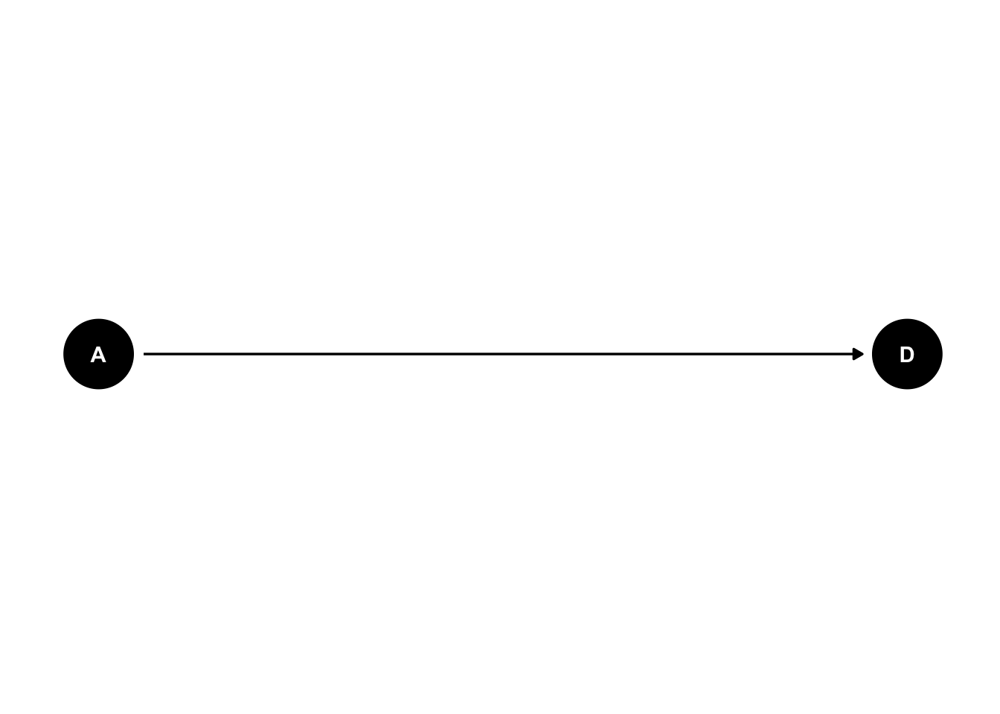
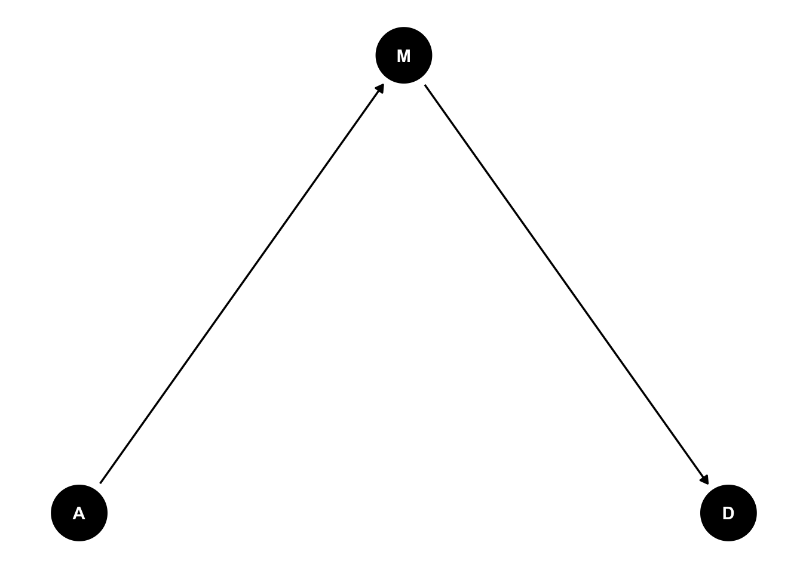
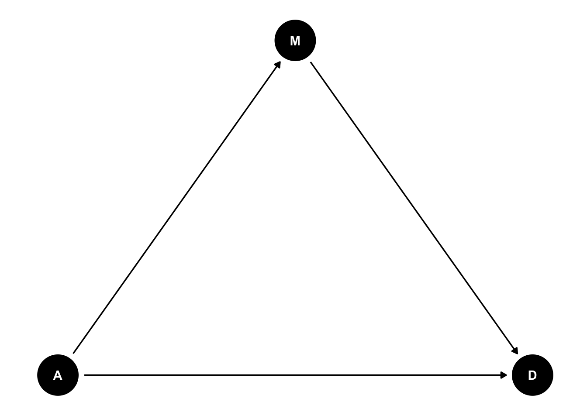
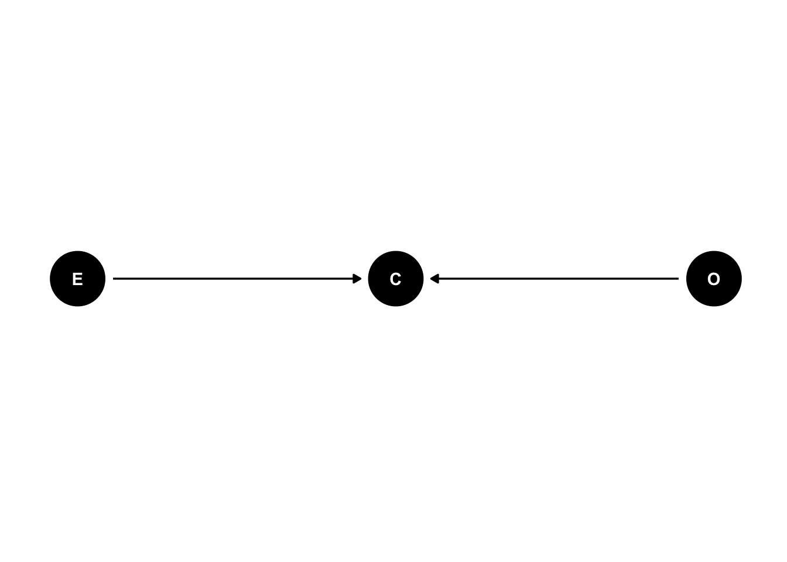
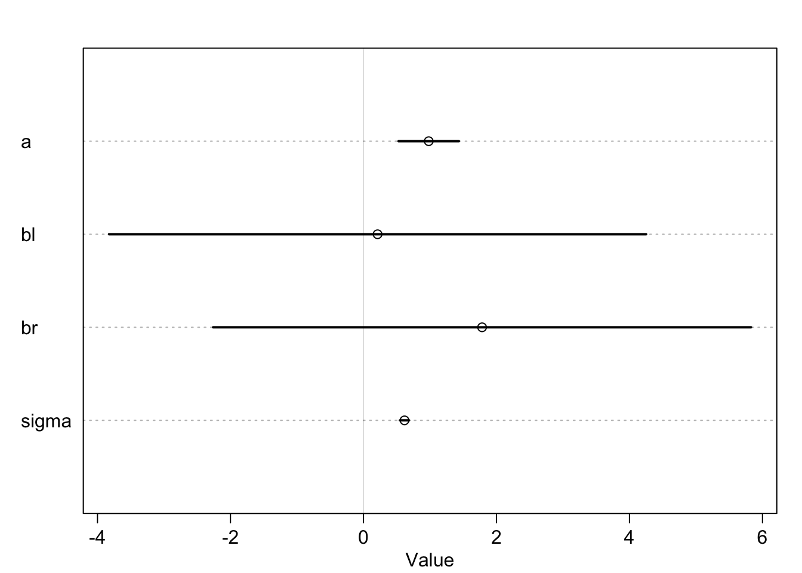

epi curious
Ania Kawiecki
9/29/2020
library(tidyverse)
library(rethinking)
library(dagitty)
library(knitr)
library("ggdag")
library("ggrepel")
library(INLA)
library(knitr)
library(stringr)
library("patchwork")
library("ghibli")
library("fpp2")DISCLAIMER
Ths documents is a compilation of notes and information from textbooks I compiled while I was studying for my Qualifying Exam in the PhD Epidemiology program at UC Davis. The books, articles, blogs, and webpages I used to compile this study guide are listed under “Resources”. I am not the author of anything in this document. In addition, these are my personal notes, and should not be treated as the definitive or true information, for that please see the source material.
That being said, I hope these notes may be useful to other students in epidemiology as they have been to me. I really profited from having all the information searchable on a single document, and gaining insights on a topic from different sources.
Enjoy!
Ania Kawiecki
Resources
- Intro to Epidemiology
Epidemiology,5th edition, Leon Gordis
- Causal inference
Causal Inference: What If, by Miguel A. Hernán, James M. Robins
Causal inference in statistics: an overview, Pearl 2009
An introduction to causal inference, Pearl 2010
- Models
STAT 462 Applied Regression Analysis
- Forecasts
Forecasting: Principles and Practice, by Rob J Hyndman and George Athanasopoulos
- ggdag
https://malco.io/2019/09/17/tidy-causal-dags-with-ggdag-0-2-0/
https://cran.r-project.org/web/packages/ggdag/vignettes/intro-to-ggdag.html
https://cran.r-project.org/web/packages/ggdag/vignettes/bias-structures.html
- spatial
EPI223 notes
EPIDEMIOLOGICAL CONCEPTS
MEASURES OF DISEASE FREQUENCY
MORBIDITY
prevalence
Proportion of the population affected at time t = snapshot of disease.
Units: 0-1 or 0-100%
\[\frac{cases\:at\:time\:t\:(new + existing)}{total\:population\:at\:time\:t}\] Risk of being a case.
\[prevalence = incidence * duration\] It’s a bad measure of risk because it depends on the duration of disease. Chronic diseases will have high prevalnce, and very fatal diseases will have low prevalence, regardless of the incidence.
- point prevalence: prevalence at a given timepoint t
\[\frac{cases\:at\:time\:t\:(new + existing)}{total\:population\:at\:time\:t}\]
- period prevalence: prevalence at any given timepoint during a time period t
\[\frac{cases\:observed\:over\:period\:t\:(new + existing)}{total\:population\:at\:midpoint\:of\:period\:t}\]
incidence
Proportion of the population at risk of being affected that does become affected during a time period t. cases/population * time at risk
\[\frac{new\:cases\:observed\:over\:period\:t}{total\:population\:at\:risk\:during\:period\:t}\]
Risk of becoming a case.
\[\frac{cases}{population*time\:at\:risk}\] It measures risk because it measures events or transitions from affected to not affected state.
- cumulative incidence
The population at risk is a crude measure of the population at risk at the beginning of the time period. It assumes a static population at risk.
Units: 0-1 or 0-100% per time interval.
\[\frac{new\:cases\:observed\:over\:period\:t}{total\:population\:at\:risk\:at\:start\:of\:time\:period\:t}\] Measures average risk. Is apt for short time-periods or static populations.
- incidence density rate
The population at risk is the sum of all the disease-free/ at risk time periods for each individual. It assumes the risk of each person in the population does not change over time.
Units: 0- \(\infty\) cases/population-time
\[\frac{new\:cases\:observed\:over\:period\:t}{total\:population-time}\] Measures risk by taking into account the time elapsed before disease occured for each individual, thus it also measures the speed at which disease occurs at a certain timepoint. Is apt for prolonged time-periods or dynamic populations.
To calculate population-time:
- sum all the disease-free time for each individual.
- estimate:
- count the population-time midway through the time period
- average the population-time at the beginning and the end of the period.
attack rate
Proportion of the exposed individuals that becomes affected during a time period t.
\[\frac{cases}{exposed}\]

Relationship between incidence and prevalence. Gordis
MORTALITY
mortality rate
Speed of death in time t.
Measures risk: good measure when disease is mild, bad measure when disease is very deadly and the case-fatality is high.
\[\frac{deaths\:over\:period\:t}{total\:population\:at\:risk\:during\:time\:period\:t}\]
- crude mortality rate
overall deaths
\[\frac{deaths\:over\:period\:t}{total\:population\:at\:risk\:during\:time\:period\:t}\]
- specific mortality rate
deaths in a specific subgroup (age, sex, diseased with a certain disease)
\[\frac{deaths\:in\:subgroup\:over\:period\:t}{population\:at\:risk\:in\:subgroup\:during\:time\:period\:t}\]
case fatality rate
Proportion of the individuals that become affected by disease X who die during a time period t.
Measures disease severity
\[\frac{deaths}{cases}\]
proportionate mortality
Fraction of all the deaths caused by disease X
\[\frac{deaths\:from\:disease\:X}{all\:deaths}\]
RATES
crude
overall population
adjusted
adjusted rates controlling for confounding factors to remove the effect of that factor
- direct
Apply the specific subgroup rates of each population to a standard population and calculate the rate on the standard population.

direct adjusted example from Gordis
- indirect
Compare populations: subgroup vs general
SMR = Strandard Mortality Ratio \[SMR= \frac{Observed}{Expected}\]
Expected: Apply the general population rates to each specific subgroup and add all the cases Observed: add all the observed cases in each specific subgroup

indirect adjusted example from Gordis
DIAGNOSTIC TEST EVALUATION AND SCREENING TESTS
test precision: ability to produce consistent results when repeated under the same conditions:
repeatability: consistency of test results under same condition except time
reproducibility: consistency of test results under different conditions
| Disease + | Disease - | Total | |
|---|---|---|---|
| Test + | a = P[T(+) & D(+)] = true positive | b = P[T(+) & D(-)] = false positive | a+b = P[T(+)] = test positive |
| Test - | c = P[T(-) & D(+)] = false negative | d = P[T(-) & D(-)] = true negative | c+d = P[T(-)] = test positive |
| Total | a+c = P[D(+)] = disease positive | b+d = P[D(-)] = disease negative | 1=a+b+c+d = total |
TEST PERFORMANCE CHARACTERISTICS
sensitivity
Probability that test is positive given that the individual is diseased
\[P(T^+|D^+)= \frac{P(T^+ \cap D^+)}{P(D^+)}\]
specificity
Probability that test is negative given that the individual is not diseased
\[P(T^-|D^-)= \frac{P(T^- \cap D^-)}{P(D^-)}\]
TRADE-OFF
In continuous results, the cut-off that for a positive test can determine the specificiity and sensitivity of the test, and should be chosen depending on the purpose.
lower threshold:increases the sensitivity but decreases the specificity by increasing false positives
higher threshold:increases the specificity but decreases the sensitivity by increasing false negatives
 ROC curve: Receiver Operating Characteristic (ROC) curve: is a graphic portrayal of the sensitivity-specificity trade-off as cut-off values vary.
ROC curve: Receiver Operating Characteristic (ROC) curve: is a graphic portrayal of the sensitivity-specificity trade-off as cut-off values vary.
AUC: is the area under the curve.
- The AUC of a useful test must be \(>\) 0.5
- area of the total square = 1
- area of a random process = 0.5
- 1 - 0.5 = 0.5
- It can also be defined as the probability that a randomly selected diseased individual will have a higher test value that a randomly selected non-diseased individual.
Example: AUC = 0.9 : a randomly selected diseased individual will have a higher test value that a randomly selected non-diseased individual 90 % of the time.
- It can also be defined as the:
- average sensitivity across all possible 1- specificity values
- average true positive ratio across all possible false positive ratio
Youden’s index= J-statistic: sensitivity + specificity - 1 = true positive ratio - false positive ratio

likelihood ratio negative
likelihood that a non-diseased individual will test negative vs an individual that is not diseased = the odds that a negative test would be expected in a diseased individual
\[\frac{P(T^-|D^+)}{P(T^-|D^-)}= \frac{1-P(T^+ | D^+)}{P(T^- | D^-)}= \frac{1-sensitivity}{specificity}\]
likelihood ratio positive
likelihood that a diseased individual will test positive vs an individual that is not diseased = the odds that a positive test would be expected in a diseased individual
\[\frac{P(T^+|D^+)}{P(T^+|D^-)}= \frac{P(T^+ | D^+)}{1-P(T^- | D^-)}= \frac{sensitivity}{1-specificity}\]
CHARACTERISTICS OF LIKELIHOOD RATIOS
independent from prevalence
can be used to shorten list of diagnostic possibilities. If LR = 1, the test provides no information on disease status.
POST-TEST PROBABILITIES
once you have a test result, how likely is it that you have disease?
ppv : positive predictive value
Probability that the individual is diseased given that the test was positive
\[P(D^+|T^+)= \frac{P(T^+ \cap D^+)}{P(T^+)}\]
npv : negative predictive value
Probability that the individual is not diseased given that the test was negative
\[P(D^-|T^-)= \frac{P(T^- \cap D^-)}{P(T^-)}\]
WHAT AFFECTS PREDICTIVE VALUES ?
- prevalence
The ppv of a test increased and the npv of a test decreases as the prevalence of the disease in the population increases.

Gordis
specificity: for the same prevalence, a test with higher specificity has higher ppv.
in common diseases: the sensitivity has a larger effect on the ppv because it decreases the false positives.
in rare diseases: the specificity has a larger effect on the ppv because it decreases the false negatives.
Because disease are usually infrequent and there are more healthy individuals than diseases individuals, any increase in specifcity that affects the number of healthy individuals has a greater effect than finding diseased individuals.

Gordis
TO IMPROVE PREDICTIVE VALUES:
test high-risk populations
increase the cut-off to increase specificity.
TEST PRECISION
| Oberver A Test + | Oberver A Test - | Total | |
|---|---|---|---|
| Oberver B Test + | a | b | a+b |
| Oberver B Test - | c | d | c+d |
| Total | a+c | b+d | 1=a+b+c+d = total |
kappa statistic
\[\kappa= \frac{P_O-P_E}{1-P_E}\]
contrasts observed agreement with the agreement that would have been observed by chance alone.
percent agreement between 2 observers: \(P_O = \frac{a+d}{a+b+c+d}\)
expected agreement by chance: % \(P_E = \frac{[P(T_{ObserverA}^+) * T_{ObserverB}^+] + [P(T_{ObserverA}^-) * T_{ObserverB}^-]}{total}=\frac{\frac{a+c}{a+b+c+d}*(a+b) + \frac{b+d}{a+b+c+d}*(c+d)}{a+b+c+d}\)
Example: Pathologist A read 60% of all 75 slides (45 slides) as being grade II and 40% (30 slides) as grade III. If his or her readings had used criteria independent of those used by pathologist B (e.g., if pathologist A were to read 60% of any group of slides as grade II), we would expect that pathologist A would read as grade II both 60% of the slides that pathologist B had called grade II and 60% of the slides that patholo- gist B had called grade III. Therefore, we would expect that 60% (26.4) of the 44 slides called grade II by pathologist B would be called grade II by pathologist A and that 60% (18.6) of the 31 slides called grade III by pathologist B would also be called grade II by pathologist A. Of the 31 slides called grade III by pathologist B, 40% (12.4) would also be classified as grade III by pathologist A.
\(P_E = \frac{[0.6 * 44] + [0.4 * 31]}{75}= \frac{26.4+ 12.4}{75}= 51.7\)

Gordis
- -1 = perfect disagreement
- 0 = agreement expected by chance
- 1 = perfect agreement
Kappa is affected by prevalence, and therefore can only be used within studies but not across studies.
MULTIPLE TEST
sequential
An individual is considered disease positive if the individual tests positive on both tests.
This method is often used for screening
more opportunities to test negative lead to:
decrease in sensitivity (\(P(T^+|D^+)\)): a diseased individual has more opportunities to test negative
increase in specificity (\(P(T^-|D^-)\)): a non-diseased individual has more opportunities to be correctly diagnosed as negative
increase in ppv (\(P(D^+|T^+)\)): there are fewer false positive
decrease in npv (\(P(D^-|T^-)\)): there are more false negatives
EXAMPLE
- Original values:
sensitivity (\(P(T^+|D^+)= 0.70\)
specificity \(P(T^-|D^-) = 0.80\)
ppv \(P(D^+|T^+)= 0.16\)
npv \(P(D^-|T^-) = 0.98\)

Gordis
- After sequential testing: 505 individuals are positive in both tests
net sensitivity (\(P(T^+|D^+)= 315/500= 0.63\)
net specificity \(P(T^-|D^-) = (1710+7600)/9500= 0.98\)
net ppv \(P(D^+|T^+)= 350/505= 0.62\)
net npv \(P(D^-|T^-)= (1710+7600)/ (7750+1745) = 0.98\)
simultaneous
An individual is considered disease positive if the individual tests positive on either tests.
more opportunities to test positive lead to:
increase in sensitivity (\(P(T^+|D^+)\)): a diseased individual has more opportunities to test positive
decrease in specificity (\(P(T^-|D^-)\)): a non-diseased individual has more opportunities to be incorrectly diagnosed as positive, that is there are more false positives
decrease in ppv (\(P(D^+|T^+)\)): there are more false positives
increase in npv (\(P(D^-|T^-)\)): if an individual is negative on both tests, it is more likely not to be diseased
EXAMPLE
- Original values:
TEST A
sensitivity test A (\(P(T^+|D^+)= 0.80\)
specificity test A \(P(T^-|D^-) = 0.60\)
ppv test A \(P(D^+|T^+)= 0.33\)
npv test A \(P(D^-|T^-) = 0.92\)
TEST B
sensitivity test B (\(P(T^+|D^+)= 0.90\)
specificity test B \(P(T^-|D^-) = 0.90\)
ppv test A \(P(D^+|T^+)= 0.69\)
npv test A \(P(D^-|T^-) = 0.97\)

Gordis
- After simultaneus testing:
net sensitivity
\(T_A^+ =80\%sensitivity * total = 0.8*200= 160\)
\(T_B^+ =90\%sensitivity * total = 0.9*200= 180\)
\(T_{AB}^+ =90\%sensitivity * 80\%sensitivity* total = 0.8* 0.9*200= 144\)
or \(P(A)+P(B)-P(A\cap B) = 0.8+0.9+ (0.8*0.9) = 0.98\)
\(T_{only A}^+ = 160-144=16\)
\(T_{only B}^+ = 180-144=36\)
 net specificity
net specificity
\(T_{AB}^-= 0.6*0.9 = 0.54\)

Gordis
net ppv = \(196/564=0.35\)
net npv = \(432/436=0.99\)
CAUSAL INFERENCE
INTRODUCTION TO CAUSALITY
“The questions that motivate most studies in the health, social and behavioral sciences are not associational but causal in nature. For example, what is the efficacy of a given drug in a given population? What was the cause of death of a given individual, in a specific incident? These are causal questions because they require some knowledge of the data-generating process; they cannot be computed from the data alone, nor from the distributions that govern the data” (@Pearl2009).
"The aim of standard statistical analysis is to assess parameters of a distribution from samples drawn of that distribution. With the help of such parameters, associations among variables can be inferred, which permits the researcher to estimate probabilities of past and future events and update those probabilities in light of new information. These tasks are managed well by standard statistical analysis so long as experimental conditions remain the same. Causal analysis goes one step further; its aim is to infer probabilities under conditions that are changing, for example, changes induced by treatments or external interventions.
This distinction implies that causal and associational concepts do not mix; there is nothing in a distribution function to tell us how that distribution would differ if external conditions were to change—say from observational to experimental setup—because the laws of probability theory do not dictate how one property of a distribution ought to change when another property is modified. This information must be provided by causal assumptions which identify relationships that remain invariant when external conditions change.
Causal relations cannot be expressed in the language of probability and, hence, that any mathematical approach to causal analysis must acquire new notation – probability calculus is insufficient. To illustrate, the syntax of probability calculus does not permit us to express the simple fact that “symptoms do not cause diseases,” let alone draw mathematical conclusions from such facts. All we can say is that two events are dependent—meaning that if we find one, we can expect to encounter the other, but we cannot distinguish statistical dependence, quantified by the conditional probability P(disease|symptom) from causal dependence, for which we have no expression in standard probability calculus." (Pearl 2010)
Summary: The difference between association and causality is that causality is directional, which cannot be represented with standard calculus notation.
CAUSATION
types of associations
A statistical association between an exposure and an outcome can be due to either or both a:
- causal effect: the exposure causes the outcome. This is the effect we want to isolate using causal inference.

- spurious effect: the exposed and the unexposed groups in the study are not comparable, or exchangeable, which is the ultimate source of the bias (the unexposed group is not the counterfactual of the exposed group) (@Hernan2002).

- a common effect = collider

types of causal relationships
necessary
disease does not develop without this factor
sufficient
disease always develops with this factor
necessary AND sufficient: without that factor, the disease never develops, and in the presence of that factor, the disease always develops. This never occurs in nature, even pathogens require other factors.
necessary AND NOT sufficient: each factor is needed but alone is not able to cause disease. Ex: pathogen + immune susceptibility
NOT necessary BUT sufficient: each factor alone is able to cause disease, but so can other factors. Ex: leukemia can be caused by radiation or benzene exposure
NOT necessary NOR sufficient: presence of the factor by itself does not cuase disease


direct effect
Example: a direct effect would arise because younger people change faster than older people and are therefore more likely to grow incompatible with a partner.

indirect effect
Example: age of marriage has an indirect effect by influencing the marriage rate, which then influences divorce. If people get married earlier, then the marriage rate may rise, because there are more young people. Consider for example if an evil dictator forced everyone to marry at age 65. Since a smaller fraction of the population lives to 65 than to 25, forcing delayed marriage will also reduce the marriage rate. If marriage rate itself has any direct effect on divorce, maybe by making marriage more or less normative, then some of that direct effect could be the indirect effect of age at marriage.

guidelines for establishing a causal relationship
Koch-Henle Criteria
The organism is always found with the disease
The organism is not found with any other disease
The organism isolated from one individual with disease produces the disease in other individuals
Bradford Hill Criteria
Most important
temporal relationship: exposure to the factor occurs before disease
biologic plausibility: the association makes sense in the contex of existing knowledge.
consistency: the same result is replicated in different studies and populations
alternative explanations: confounding. exploration of the effect of other factors on the association.
Others
strength: as measured by measures of effect (risk ratio or odds ratio)
dose - response: the higher the exposure, the higher the risk of disease
specificity: hard to ascertain as most outcomes are multifactorial
cessation effect: if the exposure ceases, so does the effect
MEASURES OF DISEASE EFFECT OR ASSOCIATION
Measures of effect compare an exposed population to it’s counterfactual unexposed population, that is the exact same population at the same time point had it not been exposed. That is, the effect of \(E^+\) on the probability of being \(D^+\) in the SAME population.
Measures of association compare one exposed population to another unexposed population (a different population or the same population at a different time point) assuming that both populations are comparable. That is the effect of \(E^+\) on the probability of being \(D^+\) between \(E^-\) and \(E^+\).

causal types
Doomed = always has disease, exposed or not
Susceptible = has disease when exposed
Protected= does not have disease when exposed, but has disease when unexposed
Immune= never has disease, exposed or not
\(P(D^+|E^+) = p_1 + p_2 = doomed + susceptible\)
\(P(D^-|E^+) = p_3 + p_4 = protected + immune\)
\(P(D^+|E^-) = p_1 + p_3 = doomed + protected\)
\(P(D^-|E^-) = p_2 + p_4 = susceptible + immune\)
| Disease + | Disease - | Total | |
|---|---|---|---|
| Exposed + | a = E(+) & D(+) | b = E(+) & D(-) | a+b = E(+) |
| Exposed - | c = E(-) & D(+) | d = E(-) & D(-) | c+d = E(-) |
| Total | a+c = D(+) | b+d = D(-) | a+b+c+d = total |

measures of disease effect or association
Conditional probability refresher = \(P(A|B)=\frac{P(A \cup B)}{P(B)}\)
absolute risk = incidence
Measures magnitude of risk. Does not take into account the unexposed population or whether risk is associated to exposure. \[P(D^+|E^+)=\frac{a}{a+b}=\frac{new\:cases\:observed\:over\:period\:t}{total\:population\:at\:risk\:during\:period\:t}\]
relative risk = risk ratio
Measures the strength of the association and possible causal relationship
RR = 1 \(\to\) no effect
\[\frac{P(D^+|E^+)}{P(D^+|E^-)}=\frac{\frac{a}{a+b}}{\frac{c}{c+d}}=\frac{incidence\:in\:exposed\:population}{incidence\:in\:unexposed\:population}\] It can be expressed as:
- Risk Ratio = RR = the ratio of cumulative incidence in the exposed and unexposed populations
\[\frac{P(D^+|E^+)}{P(D^+|E^-)}=\frac{\frac{a}{a+b}}{\frac{c}{c+d}}=\frac{D^+\:in\:exposed\:population}{D^-\:in\:unexposed\:population}\]
- Incidence Rate Ratio = IRR or IDR = the ratio of incidence densities in the exposed and unexposed populations
\[\frac{D^+\:in\:person-time\:of\:exposed\:population}{D^+\:in\:person-time\:of\:unexposed\:population}=\frac{incidence\:in\:exposed\:population}{incidence\:in\:unexposed\:population}\]
odds ratio
Measures the strength of the association but cannot suggest a causal relationship
\[\frac{\frac{P(D^+|E^+)}{P(D^-|E^+)}}{\frac{P(D^+|E^-)}{P(D^-|E^-)}}=\frac{\frac{a}{b}}{\frac{c}{d}}=\frac{ad}{bc}=\frac{odds\:D^+\:in\:exposed\:population}{odds\:D^+\:in\:unexposed\:population}\] or
\[\frac{\frac{P(E^+|D^+)}{P(E^-|D^+)}}{\frac{P(E^+|D^-)}{P(E^-|D^-)}}=\frac{\frac{a}{c}}{\frac{b}{d}}=\frac{ad}{bc}=\frac{odds\:E^+\:in\:diseased\:population}{odds\:E^+\:in\:not\:diseased\:population}\]

A: cohort study, B: case-control study, Gordis Figure 11-5
matched-pairs OR:

Gordis Figure 11-9
ODDS RATIO CAN BE A GOOD ESTIMATE OF RELATIVE RISK When:
\[\frac{P(D^+|E^+)}{P(D^+|E^-)}\approx\frac{\frac{P(D^+|E^+)}{P(D^-|E^+)}}{\frac{P(D^+|E^-)}{P(D^-|E^-)}}\] \[\frac{\frac{a}{a+b}}{\frac{c}{c+d}} \approx \frac{\frac{a}{b}}{\frac{c}{d}}\]
- We assume the disease is rare:
- rare disease assumption
When the disease does not occur frequently \(a+b \approx b\) and \(c+d \approx d\)

Gordis Figure 11-6, 11-7
The cases are representative, with regards to the history of exposure, of all the people with disease in the population from which the cases were drawn:
The controls are representative, with regards to the history of exposure, of all the people without disease in the population from which the cases were drawn:
The controls can be selected through different methods:
Not matched on time
case-based sampling: sampling occurs at the beginning of the study (\(t_0\))
cumulative incidence sampling: sampling occurs at the end of the study (\(t_1\))
assumption of constant incidence density rate over the period of time: \(\frac{ID_{exposed(t)}}{ID_{unexposed(t)}}=\bar{IDR}_{t_0 \to t_1}\)
assumption of a stable population with respect to exposure = time is NOT a confounder

Matched on time
- incidence density sampling: match on time with the cases (\(t_0 - t_1\))
assumption of constant incidence density rate over the period of time: \(\frac{ID_{exposed(t)}}{ID_{unexposed(t)}}=\bar{IDR}_{t_0 \to t_1} \to ID_{exposed(t)} = ID_{unexposed(t)} * \bar{IDR}_{t_0 \to t_1}\)
Both incidence and exposure change in function of time, therefore time is a confounder. By selecting the controls matching on time, we can interpret the odds ratio as a rate or risk measure, without making the rare disease assumption, by assuming only that the incidence is constant over time.
 INTERPRETATION OF ODDS RATIO
INTERPRETATION OF ODDS RATIO
\[\frac{\frac{P(D^+|E^+)}{P(D^-|E^+)}}{\frac{P(D^+|E^-)}{P(D^-|E^-)}}= \frac{\frac{a/a+b}{b/a+b}}{\frac{c/c+d}{d/c+d}} \ne \frac{\frac{a}{b}}{a+b}\]
Ratio of average risk \(\frac{P(D^+|E^+)}{P(D^-|E^+)}= \frac{a/a+b}{b/a+b}\) to average survival probability \(\frac{P(D^+|E^-)}{P(D^-|E^-)}= \frac{c/c+d}{d/c+d}\)
which is not the same as the average disease odds \(\frac{a/b}{a+b}\)


attributable risk
Incidence of a disease in the exposed population that is attributable to the exposure.
If > 1 the risk in the presence of exposure is greater that not in the presence of exposure
How much of the disease would be prevented if the exposure were eliminated?
\[{P(D^+|E^+)}-{P(D^+|E^-)}={\frac{a}{a+b}}-{\frac{c}{c+d}}={incidence\:in\:exposed\:population} -{incidence\:in\:unexposed\:population}\]
as a proportion:
\[\frac{{P(D^+|E^+)}-{P(D^+|E^-)}}{P(D^+|E^+)}=\frac{{\frac{a}{a+b}}-{\frac{c}{c+d}}}{\frac{a}{a+b}}=\frac{{incidence\:in\:exposed\:population} -{incidence\:in\:unexposed\:population}}{incidence\:in\:exposed\:population}\] \[\frac{{P(D^+|E^+)}/{P(D^+|E^-)}-{P(D^+|E^-)}/{P(D^+|E^-)}}{P(D^+|E^+){P(D^+|E^-)}}= \frac{RR - 1}{RR}= 1- 1/RR\]


ATTRIBUTABLE FRACTIONS
Etiologic fraction: proportion of cases in exposed population where exposure has a biological role in the disease
Excess fraction: proportion of cases in exposed population where exposure has a role of incrementing the disease incidence vs the unexposed population
population attributable risk
Incidence of a disease in the total population that is attributable to the exposure.
How much of the disease in the total population would be prevented if the exposure were eliminated?
Incidence in the total population: \(P(D^+|E^+) * P(E^+) + P(D^+|E^-) * P(E^-)= \frac{a}{a+b} * \frac{a+b}{a+b+c+d} + \frac{a}{c+d} * \frac{c+d}{a+b+c+d}= incidence\:in\:exposed\:population * proportion\:exposed\:population + incidence\:in\:unexposed\:population * proportion\:unexposed\:population\)
\[\frac{[P(D^+|E^+) * P(E^+) + P(D^+|E^-) * P(E^-)]-{P(D^+|E^-)}}{P(D^+|E^+) * P(E^+) + P(D^+|E^-) * P(E^-)}=\frac{[{\frac{a}{a+b} * \frac{a+b}{a+b+c+d} + \frac{a}{c+d} * \frac{c+d}{a+b+c+d}}]-{\frac{c}{c+d}}}{\frac{a}{a+b} * \frac{a+b}{a+b+c+d} + \frac{a}{c+d} * \frac{c+d}{a+b+c+d}}=\frac{{incidence\:in\:total\:population} -{incidence\:in\:unexposed\:population}}{incidence\:in\:total\:population}\]

Gordis formula 12-4
ERROR IN INFERENCE
- random error
Chance or random variation that remains unexplained.
The association lacks precision. The results are less reproducible.
- systematic error = bias
The association lacks validity. The results are biased.
insert irva/Causal Inference: What If by Miguel A. Hernán, James M. Robins here
MEASURES OF ACCURACY
precision/reliability
the amount of random error. High precision indicates the results are always similar in different experiments.
validity
the amount of systematic error. High validity indicates proximity to the true value
external validity: generalizability of the results to the general population
internal validity: comparability among the groups in the study

Gordis figure 15-9
RANDOM ERROR
unexplained variation : non-deterministic counterfactuals
sampling error : the degree to which a sample population deviates from the total population. It’s unpredictable and due to the sampling process.
A sample is
a subset of the subjects in the population that could have been included in the study = a subset of the experiences the study subjects could have had
STATISTICAL INFERENCE
approaches to deal with random error
ASSUMPTIONS OF SAMPLING
Randomness assumption: the sample is a random selection of the subjects in the population that could have been included in the study
Representativeness assumption: the sample is representative of the subjects in the population that could have been included in the study
SAMPLING DISTRIBUTION
Different samples result in different measures of occurrence.
Sample size will determine:
the magnitude of the effect = the proximity of the measure of occurrence to the true value
the precision of the estimation method = statistical precision: the inverse of the variance.

hypothesis testing
interpretation of the hypothesis test:
\(H_0\): hypothesis that there is no association between 2 variables in the superpopulation that was sampled.
Reject the \(H_0\): Under the sampling distribution of the \(H_0\), the observed point estimate of the sample is inconsistent with the \(H_0\) for a given critical threshold (\(\alpha\) = 0.05).
Fail to reject the \(H_0\): Under the sampling distribution of the \(H_0\), the observed point estimate of the sample is consistent with the \(H_0\) for a given critical threshold (\(\alpha\) = 0.05). We cannot reject the \(H_0\) that the superpopulation groups are the same.
MISinterpretation of the hypothesis test:
- Reject the \(H_0\): the superpopulation groups are the different.
There could be sources of uncontrolled bias, or chance alone could haveled to this point estimate.
- Fail to reject the the \(H_0\): the 2 observed groups from the superpopulation are the same.


significance testing
interpretation of the significance test:
p-value: probability of observing a more extreme point estimate than that observed in the sample if the \(H_0\) were true.
Reject the \(H_0\): probability of observing a more extreme point estimate than that observed in the sample if the \(H_0\) were true is less than the probability of the critical region (\(\alpha\) = 0.05) = the smallest critical region (\(\alpha\)) that would lead us to reject the \(H_0\) if it were true.
MISinterpretation of the significance test:
p-value: probability of the observed data under the test hypothesis Incorrect because the p-value includes all other configurations of the data that result in a more extreme test statistic than that observed in the sample.
p-value: probability of the observed data would show as strong an association or stronger under the test hypothesis

Hogg,Tannis,Zimmerman
STATISTICAL ESTIMATION
Epidemiological analysis is a measurement, not a decision-making, problem. We want to estimate
the magnitude of the effect = point estimate. The proximity of the measure of occurrence to the true value depends on sample size, bias, random error, etc…
the precision of the estimation method = statistical precision: the inverse of the variance. Uncertainty of the point estimate. It depends on the random variability, the sample size, etc…
Interval estimation: provides information on:
- the direction and magnitude of the association
- the random variability in the point estimate.
significance testing reduce the information to a yes/no choice. It provides the degree of consistency between the data and a single hypothesis.
SYSTEMATIC ERROR = BIAS
SELECTION BIAS
Non-comparability of the exposed and unexposed groups induced by a restriction in the analysis on certain level/s of a common effect of E or O or variables correlated with E or O.
This can be caused by:
unbalanced sampling fractions between the exposed and non-exposed population (see example below).
over-matching: when the cases and controls are matched on a factor that is not associated with the outcome but is associated with exposure.
The difference with confounding: confounding is due to unmeasured common causes and selection bias is due to errors in the selection of the two study groups that affects the internal validity.
non-response bias: survey non-respondents may have different characteristics than those who do respond
exclusion bias: different eligibility criteria between cases and controls or the controls are selected from a different population than the cases Foor example, if the disease is very deadly and the information about the cases comes from proxies (relatives, friends) that are from a different population than the controls.
berkson’s bias: “If the only way to cross the threshold is to score high, it is more common to score high on one item than on both. This general phenomenon is sometimes called Berkson’s paradox . But it is easier to remember if we call it the selection-distortion effect. Why do so many restaurants in good locations have bad food? The only way a restaurant with less-than-good food can survive is if it is in a nice location. Similarly, restaurants with excellent food can survive even in bad locations. Selection-distortion ruins your city.”(@mcelreath). In case-control studies that select cases from hospitals, often these cases are more likely to have concomitant diseases (hypertension, obesity) than the general population, which can lead to spurious associations.
incidence/prevalence bias: Studies that select cases from hospitals are selecting for severe disease and having survived longer. To avoid this bias it’s better to select incidence cases.

Selection bias does not depend only on exposure, it depends on the sampling fraction of all the cells, that means it can also depend on disease.

INFORMATION BIAS
Bias caused by measurement errors. Individuals are categorized incorrectly.
For continuous variables = INFORMATION ERROR
For categorical variables = MISCLASSIFICATION
DIFFERENTIAL: the classification error depends on the actual values of other variables, that is, it varies between the study groups. The bias can be either towards or away from the \(H_0\).
recall bias: memory of events may bary between cases and controls. Example: Outcome: congenital malformation; Exposure: any; mothers of cases may have a better memory of the exposure than mothers of controls.
detection/surveillance bias: the diagnosis of the outcome may be earlier or better in monitored study groups than in the general population. Example: Outcome: emphysema; Exposure: smoking; smokers have more respoiratory issues and seek out medical care more often, therefore emphysema is detected earlier and more often in the exposed than in the unexposed.
observer bias: there is a systematic difference in how data are collected between study participants belonging to different groups. Occurs when the interviewer is not blinded and when there is interviewer drift, that is, when the data collection procedure for the same interviewer changes over time.
NON-DIFFERENTIAL: the classification error dos NOT depend on the actual values of other variables, and is due to a lack of accuracy in the data collection. This bias is usually towards the \(H_0\), diluting the magnitude of effect (RR and OR), but it can be away from the \(H_0\) if the exposure or outcome variables are non-binary, or if it’s a dependent missclasification (depends on error in the classification of other variables).
- observer bias: Example: surrogate interviews, where the information might be inaccurate.
NON-DIFFERENTIAL EXPOSURE MISSCLASIFICATION

Modern Epidemiology
NON-DIFFERENTIAL DISEASE MISSCLASIFICATION

Modern Epidemiology
DEPENDENT: the classification error depends on errors made measuring or classifying other variables.
INDEPENDENT: the classification error does NOT depend on errors made measuring or classifying other variables.
CONFOUNDING
The exposed and the unexposed in the study are not comparable, or exchangeable, which is the ultimate source of the bias ( the unexposed group is not the counterfactual of the exposed group)
A CONFOUNDER is a variable that is:
associated with the outcome, conditional on the exposure (i.e. in the exposed group) Example: smoking is a risk factor for cancer
associated with the exposure, conditional on the exposure (i.e. in the exposed group) Example: smoking is associated with drinking coffee
not on the causal pathway between the exposure and the outcome. Example: smoking is not a result of drinking coffee
difference between confouding and selection bias
There is confounding when the association between exposure and outcome includes a noncausal component attributable to their having an uncontrolled common cause.
There is selection bias when the association between exposure and outcome includes a noncausal component attributable to restricting the analysis to certain level(s) of a common effect of exposure and outcome or, more generally, to conditioning on a common effect of variables correlated with exposure and outcome.
methods for identifying/detecting confounding
The following methods are extracted from @Hernan2002
Statistical criteria alone are insufficient to characterize either confounding or selection bias. The only method to reliably identify a counfounder is to combine statistical associations from the data with background knowledge about the causal network that links exposure, outcome, and potential confounders.
- Methods relying on statistical associations that can easily be identified from the data:
automatic variable selection procedures: i.e stepwise regression. It’s based on including variables with “significant” p-values. It assumes that all important confounders will be selected.
change in effect estimate: comparison of the effect estimates between adjusted and unadjusted effect estimates. It assumes that any variable substantially associated with an estimate change is worth adjusting for.
We evaluate the effect measure of the exposure of interest: crude and stratified by the possible confounder. If the stratum-specific effect measures are similar to each other but different to the crude effect measure and the relative change greater than 10%, the variable is selected as a confounder. This change can be evaluated on the probability scale or transformed scale (exampe \(\beta\) coefficient or OR for the exposure in a logistic model)
Example: Is the association causal or confounded by age?


- Methods that combine statistical associations from the data with background knowledge:
- check whether the variable meets the criteria of a confounder: combines information from statistical associations and background knowledge. The presence of common causes, and therefore of confounding, can be represented by causal diagrams known as directed acyclic graphs (DAGs).
DAG = Directed Acyclic Graph
DAGs are diagrams that link variables by arrows that represent direct causal effects (protective or causative) of one variable on another.
There are only four types of variable relations that combine to form all possible paths (from @mcelreath2020):
the confounder = fork: X ← Z → Y. This is the classic confounder: some variable Z is a common cause of X and Y, generating a correlation between them. If we condition on Z, then learning X tells us nothing about Y. X and Y are independent, conditional on Z.
the pipe = intermediary: X → Z → Y. The treatment X influences Z which influences Y. If we condition on Z, we block the path from X to Y. X and Y are independent, conditional on Z.
the collider = common effect: X → Z ← Y. Conditioning on Z, the collider variable, opens the path. X and Y are dependent, conditional on Z, however neither X nor Y has any causal influence on the other.
the descendent = association?: Z \(\to\) D. Descendent is a variable influenced by another variable. Conditioning on a descendent partly conditions on its parent. Conditioning on D will also condition, to a lesser extent, on Z because D has some information about Z.
Backdoor criterion
Path: any series of variables you could walk through to get from one variable to another, ignoring the directions of the arrows.
Blocking all confounding paths between some predictor X and some outcome Y is known as shutting the backdoor, thus eliminating spurious associations that are non-causal.
Example:

There are two paths connecting E and O:
E → O
E ← C → O.
Both of these paths create a statistical association between E and O. But only the first path is causal. The second path is non-causal. If only the second path existed, and we changed E, it would not change O. Any causal influence of E on O operates only on the first path.
REMINDER:
causal effect: The total causal effect is the sum of the direct and indirect effects: Example: age of marriage influences divorce in two ways.
direct effect. A \(\to\) D Example: a direct effect would arise because younger people change faster than older people and are therefore more likely to grow incompatible with a partner.
indirect effect. A \(\to\) M \(\to\) D Example: age of marriage has an indirect effect by influencing the marriage rate, which then influences divorce. If people get married earlier, then the marriage rate may rise, because there are more young people. Consider for example if an evil dictator forced everyone to marry at age 65. Since a smaller fraction of the population lives to 65 than to 25, forcing delayed marriage will also reduce the marriage rate. If marriage rate itself has any direct effect on divorce, maybe by making marriage more or less normative, then some of that direct effect could be the indirect effect of age at marriage.

- spurious effect

Do-operator
do(E) closes the backdoor paths into E, as in a manipulative experiment.
P(O|do(E)) defines a causal relationship because it tells us the expected result of manipulating E on O
Confounding: P(O|E) \(\ne\) P(O|do(E)). The relationship between the E and O when the backdoor paths are closed is not the same, indicating that there is confounding.
Conditional probability, non-causal: P(O|E) \(\ne\) P(O|not-E) doesn’t close the backdoor, and therefore does not give a causal relationship.
Total causal relationship: if P(O|do(E)) \(\ne\) P(O|not-E), then E is the cause of O.
Direct causal relationship: might require closing more backdoor paths.
Examples from @Hernan2002


Example using all 3 methods of identifying confounders:

Steps to identify which variables are confounders and must be controlled to obtain and unbiased causal effect estimate:
List all of the paths connecting E (the potential cause of interest) and O (the outcome).
Classify each path by whether it is open or closed. A path is open unless it contains a collider.
Classify each path by whether it is a backdoor path. A backdoor path has an arrow entering E.
If there are any open backdoor paths, decide which variable(s) to condition on to close it (if possible). To obtain a sufficient set, use the smallest set of confounders (preferable closer to the outcome)
Obtaining an unbiased estimate of the total causal effect requires measuring and adjusting for all confounders of the E \(\to\) O association
Obtaining an unbiased estimate of the direct causal effect requires measuring and adjusting for all confounders of both the
E \(\to\) O association
J \(\to\) O association
- Example 1

To obtain the total causal effect we don’t condition on C or J:
- C is a confounder of the J \(\to\) O association but not the E \(\to\) O association, thanks to J which is a collider and blocks the path between C \(\to\) E, so it is unnecessary to control for C

- J is a collider of the E \(\to\) C association so if we condition on J we create a backdoor path between O \(\to\) E through C.

- To obtain the direct causal effect we condition on both J and C, because we want only the

- Example 2

To obtain the total causal effect we condition on C but not J:
- C is a confounder of the E \(\to\) O association so we must condition on it to obtain the unbiased total causal effect

- To obtain the direct causal effect we condition on J. C is no longer a confounder because we block the path through J so it’s no longer associated with O.

- Example 3.

- To obtain the total causal effect we condition on D

- To obtain the total causal effect we condition on C, D, J

TESTABLE IMPLICATIONS
Testable implications can be read off the diagrams using a graphical criterion known as d- separation (Pearl, 1988). Each diagram encodes causal assumptions, each corresponding to a missing arrow or a missing double-arrow between a pair of variables.
DAGs imply that some variables are independent of others under certain conditions, therefore the testable implications of a DAG are it’s CONDITIONAL INDEPENDENCIES.
CONDITIONAL INDEPENDENCIES describe which variables should be associated with one another (or not) in the data, and which variables become disassociated when we condition on some other set of variables.
Condition independencies are pairs of variables that are not associated, once we condition on some set of other variables.
Conditioning: conditioning on a variable Z means learning its value and then asking if X adds any additional information about Y. If learning X doesn’t give you any more information about Y, then we might say that Y is independent of X conditional on Z. This conditioning statement is sometimes written as: \(Y \!\perp\!\!\!\perp X|Z\)
\(X \not\!\perp\!\!\!\perp Y\) means “not independent of”
\(X \!\perp\!\!\!\perp Y\) means “independent of”
Marginal and conditional assotiation

Modern Epidemiology
methods for controlling confounding = obtaining an unbiased estimate of the causal effect
DURING STUDY DESIGN
Manipulation of the confounding factor in the study design removes the influence of C on E: when we determine E, the C variable does not influence E, thus blocking the non-causal path between E and O (E ← C → O). Once the path is blocked, there is only one way for information to go between E and O, and then measuring the association between E and O would yield a useful measure of causal influence.
- Randomization: limits confounding by unmeasured factors probabilistically and accounts quantitavely for any residual confounding they produce.
Limitations: feasibility, ethics
- Restriction: the individuals in the study may be selected to have equal levels of the confounder.
Limitations: reduction of the number of available individuals, the factor that is used for restriction can’t be analyzed, possible residual confounding if the restriction is insufficient.
- Matching: it does not control for confounding, but it increases the efficiency of the study that does control for confounding, as the confounding factor may still be controlled in the analysis.
Limitations: expensive, complicated logistics, the factor that is used for matching can’t be analyzed, as the variables must be collected before participant enrollment
DURING DATA ANALYSIS
Conditioning on the confounding factor in the study analysis: adding C to the model blocks the non-causal path E ← C → O.
Why? Think of this path in isolation, as a complete model.

Once you learn C, also learning E will give you no additional information about O.
Example: Suppose for example that C is the average wealth in a region. Regions with high wealth have better schools, resulting in more education (exposure E), as well as better paying jobs, resulting in higher wages (outcome O). If you don’t know the region a person lives in, learning the person’s education E will provide information about their wages O, because E and O are correlated across regions. But after you learn which region a person lives in, assuming there is no other path between E and O, then learning E tells you nothing more about O. This is the sense in which conditioning on C blocks the path — it makes E and O independent, conditional on C.
- multivariate adjustment: using regression, ANOVA, etc.. It can handle multiple covariates at the same time.
Limitations: unless background knowledge is included in the variable selection, confounding can persist.
- stratification: the data is stratified by a confounder and the weighted averages of the effect measure (RR or OR) across strata is calculated and then compared to the crude estimate and to each other using the Cochran-Maentel-Haenszel estimate. \(OR_{EO}\) vs \(OR_{EO|C}\)
Limitations: can only be performed for few variables at a time
- standarization: re-weight the stratum-specific effect measures (RR, OR) so that the categories are comparable using a reference population from the data set r an external source.
Limitations: can only be performed for few variables at a time
- inverse probability treatment: creates a pseudo-population without confounding by re-weighting, yet the true exposure is not altered. It can be used for time-dependent confounding, when earlier exposure can influence later exposure.

Modern Epidemiology
confounding example from @mcelreath2020
We look into causal inference using a working example from Statistical Rethinking: A Bayesian Course with Examples in R and Stan. Second edition by Richard McElreath: Correlation between marriage rate (the exposure) and divorce rate (the outcome).
# load data and copy
library(rethinking)
data(WaffleDivorce)
d <- WaffleDivorce
# standardize variables
d$D <- standardize( d$Divorce )
d$M <- standardize( d$Marriage )
d$A <- standardize( d$MedianAgeMarriage )EXAMPLE 1
There are three observed variables in play: divorce rate (D), marriage rate (M), and the median age at marriage (A) in each State of the U.S. Both marriage rates and median age at marriage are great predictors of the divorce rate in a given State, but are these relationships causal?
The rate at which adults marry (M) is a great predictor of divorce rate. But does marriage cause divorce? In a trivial sense it obviously does: One cannot get a divorce without first getting married. But there’s no reason high marriage rate must cause more divorce. It’s easy to imagine high marriage rate indicating high cultural valuation of marriage and therefore being associated with low divorce rate.
Age at marriage (A) is also a good predictor of divorce rate— higher age at marriage predicts less divorce. But there is no reason this has to be causal, either, unless age at marriage is very late and the spouses do not live long enough to get a divorce.
Age of marriage influences divorce in two ways:

- direct effect: a direct effect would arise because younger people change faster than older people and are therefore more likely to grow incompatible with a partner.

- indirect effect: age of marriage has an indirect effect by influencing the marriage rate, which then influences divorce. If people get married earlier, then the marriage rate may rise, because there are more young people. Consider for example if an evil dictator forced everyone to marry at age 65. Since a smaller fraction of the population lives to 65 than to 25, forcing delayed marriage will also reduce the marriage rate. If marriage rate itself has any direct effect on divorce, maybe by making marriage more or less normative, then some of that direct effect could be the indirect effect of age at marriage.

To infer the strength of these different arrows, we need more than one statistical model.
To obtain the total effect of of age at marriage on divorce rate we condition on age at marriage.
The total causal effect is the sum of the direct and indirect effects

We assume that these variables are associated. If we look in the data and find that any pair of variables are not associated, then something is wrong with the DAG (assuming the data are correct). In these data, all three pairs are in fact strongly associated. We can use cor to measure simple correlations. Correlations are sometimes terrible measures of association—many different patterns of association with different implications can produce the same correlation. But they do honest work in this case.
cor(d$D, d$M)## [1] 0.3737314cor(d$D, d$A)## [1] -0.5972392cor(d$M, d$A)## [1] -0.721096- Model conditioning on A
\(D_{i} ∼ Normal(\mu_{i}, \sigma)\)
\(\mu_{i} = \alpha + \beta_{A}A_{i}\)
m5.1 <- quap(
alist(
D ~ dnorm( mu , sigma ) ,
mu <- a + bA * A ,
a ~ dnorm( 0 , 0.2 ) ,
#when βA = 1, a change of 1.2 years in median age at marriage is associated with a full standard deviation change in the outcome variable (divorce)
#only 5% of plausible slopes more extreme than 1.
bA ~ dnorm( 0 , 0.5 ) ,
sigma ~ dexp( 1 )
) , data = d )
precis(m5.1)## mean sd 5.5% 94.5%
## a -2.631398e-07 0.09737876 -0.1556303 0.1556298
## bA -5.684035e-01 0.10999980 -0.7442044 -0.3926025
## sigma 7.883257e-01 0.07801133 0.6636485 0.9130028The outcome and the predictor are both standardized, the intercept α should end up very close to zero.
What does the prior slope \(\beta_{A}\) imply? If \(\beta_{A}\) = 1, that would imply that a change of one standard deviation in age at marriage is associated likewise with a change of one standard deviation in divorce. To know whether or not that is a strong relationship, you need to know how big a standard deviation of age at marriage is:
sd( d$MedianAgeMarriage )## [1] 1.24363So when \(\beta_{A}\) = 1, a change of 1.2 years in median age at marriage is associated with a full standard deviation change in the outcome variable. That seems like an insanely strong relationship.
posterior for \(\beta_{A}\) is reliably negative, as seen:
# compute percentile interval of mean
A_seq <- seq( from=-3 , to=3.2 , length.out=30 )
mu <- link( m5.1 , data=list(A=A_seq) )
mu.mean <- apply( mu , 2, mean )
mu.PI <- apply( mu , 2 , PI )
# plot it all
plot( D ~ A , data=d , col=rangi2 )
lines( A_seq , mu.mean , lwd=2 )
shade( mu.PI , A_seq )
Model m5.1, the regression of D on A, tells us only that the total influence of age at marriage is strongly negative with divorce rate. The “total” here means we have to account for every path from A to D. There are two such paths in this graph: A → D, a direct path,and A → M → D, an indirect path.

In general, it is possible that a variable like A has no direct effect at all on an outcome like D. It could still be associated with D entirely through the indirect path. That type of relationship is known as mediation.
As you’ll see however, the indirect path does almost no work in this case. How can we show that?
- Model conditioning on M
\(D_{i} ∼ Normal(\mu_{i}, \sigma)\)
\(\mu_{i} = \alpha + \beta_{M}M_{i}\)
m5.2 <- quap(
alist(
D ~ dnorm( mu , sigma ) ,
mu <- a + bM * M ,
a ~ dnorm( 0 , 0.2 ) ,
bM ~ dnorm( 0 , 0.5 ) ,
sigma ~ dexp( 1 )
) , data = d )
precis(m5.2)## mean sd 5.5% 94.5%
## a 3.302324e-05 0.10824680 -0.1729663 0.1730323
## bM 3.500236e-01 0.12592822 0.1487660 0.5512812
## sigma 9.102698e-01 0.08986353 0.7666506 1.0538891# compute percentile interval of mean
M_seq <- seq( from=-3 , to=3.2 , length.out=30 )
mu <- link( m5.2 , data=list(M=M_seq) )
mu.mean <- apply( mu , 2, mean )
mu.PI <- apply( mu , 2 , PI )
# plot it all
plot( D ~ M , data=d , col=rangi2 )
lines( M_seq , mu.mean , lwd=2 )
shade( mu.PI , M_seq )
This relationship isn’t as strong as the one between A and D.
The pattern we see in the previous two models is symptomatic of a situation in which only one of the predictor variables, A in this case, has a causal impact on the outcome, D, even though both predictor variables are strongly associated with the outcome.
We know from the model conditioning on M (m5.2) that marriage rate is positively associated with divorce rate. But that isn’t enough to tell us that the path M → D is positive. It could be that the association between M and D arises entirely from A’s influence on both M and D. Like this:

This DAG is also consistent with the posterior distributions of models m5.1 and m5.2. Why? Because both M and D “listen” to A. They have information from A. So when you inspect the association between D and M, you pick up that common information that they both got from listening to A.
So which is it? Is there a direct effect of marriage rate, or rather is age at marriage just driving both, creating a spurious correlation between marriage rate and divorce rate? To find out, we need to consider carefully what each DAG implies.
- M has influence on D

This DAG says:
- A directly influences D
- M directly influences D
- A directly influences M
There are 3 causal assumptions that can be tested (one for every arrow).
Before we condition on anything, we assume everything is associated with everything else.
The testable implications are:
- \(D \not\!\perp\!\!\!\perp A\) A not independent of D
- \(D \not\!\perp\!\!\!\perp M\) M not independent of D
- \(A \not\!\perp\!\!\!\perp M\) D not independent of A
implied conditional independencies = none
DMA_dag1 <- dagitty('dag{ D <- A -> M -> D }')
impliedConditionalIndependencies( DMA_dag1 )- M has no influence on D

In this DAG, it is still true that all three variable are associated with one another. A is associated with D and M because it influences them both. And D and M are associated with one another, because A influences them both. They share a cause, and this leads them to be correlated with one another through that cause.
There are 2 causal assumptions that can be tested (one for every arrow).
- A causes D
(2) M causes D
- A causes M
But suppose we condition on A. All of the information in M that is relevant to predicting D is in A. So once we’ve conditioned on A, M tells us nothing more about D. So in the second DAG, a testable implication is that D is independent of M, conditional on A. In other words, \(D \!\perp\!\!\!\perp M|A\)
The testable implications are:
All 3 variables should be associated, before conditioning on anything:
\(D \not\!\perp\!\!\!\perp A\) A not independent of D
\(D \not\!\perp\!\!\!\perp M\) M not independent of D
\(A \not\!\perp\!\!\!\perp M\) D not independent of A
\(D \!\perp\!\!\!\perp M|A\) D and M should be independent after conditioning on A.
implied conditional independencies = D || M | A
DMA_dag2 <- dagitty('dag{ D <- A -> M }')
impliedConditionalIndependencies( DMA_dag2 )## D _||_ M | ATest the difference between the two DAGs
The only implication that differs between these DAGs is the last one:\(D \!\perp\!\!\!\perp M|A\) D and M should be independent after conditioning on A.
To test this implication, we need a statistical model that conditions on A, so we can see whether that renders D independent of M. And that is what multiple regression helps with. It can address a useful descriptive question: Is there any additional value in knowing a variable, once I already know all of the other predictor variables?
So for example once you fit a multiple regression to predict divorce using both marriage rate and age at marriage, the model addresses the questions: (1) After I already know marriage rate, what additional value is there in also knowing age at marriage? (2) After I already know age at marriage, what additional value is there in also knowing marriage rate?
The parameter estimates corresponding to each predictor are the (often opaque) answers to these questions. The questions above are descriptive, and the answers are also descriptive. It is only the derivation of the testable implications above that give these descriptive results a causal meaning. But that meaning is still dependent upon believing the DAG.
For each predictor, the parameter measures its conditional association with the outcome.
- Model conditioning on A and M
\(D_{i} ∼ Normal(\mu_{i}, \sigma)\)
\(\mu_{i} = \alpha + \beta_{M}M_{i} + \beta_{A}A_{i}\)
m5.3 <- quap(
alist(
D ~ dnorm( mu , sigma ) ,
mu <- a + bM*M + bA*A ,
a ~ dnorm( 0 , 0.2 ) ,
bM ~ dnorm( 0 , 0.5 ) ,
bA ~ dnorm( 0 , 0.5 ) ,
sigma ~ dexp( 1 )
) , data = d )
precis( m5.3 )## mean sd 5.5% 94.5%
## a -2.645879e-07 0.09707598 -0.1551464 0.1551459
## bM -6.538020e-02 0.15077298 -0.3063445 0.1755841
## bA -6.135132e-01 0.15098352 -0.8548140 -0.3722124
## sigma 7.851175e-01 0.07784327 0.6607089 0.9095261The posterior mean for marriage rate, bM, is now close to zero, with plenty of probability of both sides of zero. The posterior mean for age at marriage, bA, is essentially unchanged. It will help to visualize the posterior distributions for all three models, focusing just on the slope parameters βA and βM:
plot(coeftab(m5.1,m5.2,m5.3), par=c("bA","bM"))
bA doesn’t move, only grows a bit more uncertain, while bM is only associated with divorce when age at marriage is missing from the model. You can interpret these distributions as saying: Once we know median age at marriage for a State, there is little or no additional predictive power in also knowing the rate of marriage in that State, which means \(D \!\perp\!\!\!\perp M|A\). D and M are independent after conditioning on A, which corresponds to the second DAG.

Note that this does not mean that there is no value in knowing marriage rate. Consistent with the earlier DAG, if you didn’t have access to age-at-marriage data, then you’d definitely find value in knowing the marriage rate. M is predictive but not causal. Assuming there are no other causal variables missing from the model, this implies there is no important direct causal path from marriage rate to divorce rate. The association between marriage rate and divorce rate is spurious, caused by the influence of age of marriage on both marriage rate and divorce rate.
EXAMPLE 2
We’re interested in the total causal effect of the number of Waffle Houses on divorce rate in each State. Presumably, the naive correlation between these two variables is spurious. What is the minimal adjustment set that will block backdoor paths from Waffle House to divorce?
Let’s make a graph:

## { A, M }
## { S }
We could control for either A and M or for S alone. This DAG is obviously not satisfactory—it assumes there are no unobserved confounds, which is very unlikely for this sort of data. But we can still learn something by analyzing it. While the data cannot tell us whether a graph is correct, it can sometimes suggest how a graph is wrong.
Inspecting implied conditional independencies, we can at least test some of the features of a graph.
impliedConditionalIndependencies( dag6 )## A _||_ W | S
## D _||_ S | A, M, W
## M _||_ W | SThe median age of marriage should be independent of (||) Waffle Houses, conditioning on (|) a State being in the south.
Divorce and being in the south should be independent when we simultaneously condition on all of median age of marriage, marriage rate, and Waffle Houses.
Marriage rate and Waffle Houses should be independent, conditioning on being in the south.
INTERACTION and EFFECT MEASURE MODIFICATION
An interaction occurs when the measure of association between a risk factor and outcome depends on the level of another factor.
difference between interaction and confounding
| confounding | interaction | |
|---|---|---|
| origin | property of distribution in source popuation | biologic, sociologic… |
| distribution of the 3d variable | differs by exposure status | can be statistically independent of exposure |
| does the 3d variable predic the outcome? | yes | not necessarily |
| stratum-specific measures | similar across strata | differ across strata |
| crude overall measure | differ from stratum-specific measures | falls between stratum-specific measures |
| summary adjusted measure | makes sense | not meaningful |
| testing | cannot test | can test |
| relationship to the other | if a strong interaction exists, it makes no sense to discuss confounding | both may occur |
difference between interaction and effect measure modification
Interaction, effect modification and effect heterogeneity sometimes are used to mean the same thing.
Interaction Tables
- Risk of disease
| A no | A yes | |
|---|---|---|
| B no | Rab | RAb |
| B yes | RaB | RAB |
- INTERACTION: we are equally interested in the change in RR in the presence of A and B and the combination of A and B.
Relative Risk in Interaction
| A no | A yes | |
|---|---|---|
| B no | 1 | RAb/Rab |
| B yes | RaB/Rab | RAB/Rab |
- EFFECT MODIFICATION: we are interested in the change in RR of one of the variables in the presence of the other variable. Example: how does B change on different levels of A?
To obtain the relative risk measure, we divide the risk measures in the presence of A by the referent within each level of B, thus we have 2 groups, one for each strata.
Relative Risk in effect modification
| A no | A yes | |
|---|---|---|
| B no | 1 | RaB/Rab |
| B yes | 1 | RAB/RAb |
types of interaction
synergism: the additive measure of joint exposure is MORE THAN the sum of the measures of association between exposure and outcome for each exposure alone.
antagonism: the additive measure of joint exposure is LESS THAN the sum of the measures of association between the exposure and outcome for each exposure alone.
types of interaction effect
additive: Excess risk and linear regression are on the additive scale.
multiplicative: Relative risk, logistic, Poisson and porportional hazards models all assume factors act multiplicatively unless an interaction effect is included.

Gordis
Example:
A logistic regression is on the additive scale when it’s transformed:
\(logit(\hat{p_i}) = log(p_i/(1-p_i)) = log(ODDS) =\beta_0 +\beta_A x_A + \beta_B x_B + +\beta_{AB} x_A x_B\)
But a logistic regression is on the multiplicative scale when it’s on the original probability scale:
\(p_i/(1-p_i) = ODDS =e^{\beta_0 +\beta_A x_A + \beta_B x_B + +\beta_{AB} x_A x_B}\)
Is A and effect modifier of B? What is the effect of B versus no B?
In the presence of A: \(x_A = 1\)
- In the presence of B: \(x_B = 1\)
\(log(ODDS) =\beta_0 +\beta_A x_A + \beta_B x_B + \beta_{AB} x_A x_B\)
- Not in the presence of B: \(x_B = 0\)
\(log(ODDS) =\beta_0 +\beta_A x_A\)
The difference in effect between B yes and B no is \(\beta_B + \beta_{AB}\)
\((\beta_0 +\beta_A x_A + \beta_B x_B + \beta_{AB} x_A x_B) - (\beta_0 +\beta_A x_A ) = \beta_B + \beta_{AB}\)
Not in the presence of A: \(x_A = 0\)
- In the presence of B: \(x_B = 1\)
\(log(ODDS) =\beta_0 + \beta_B x_B\)
- Not in the presence of B: \(x_B = 0\)
\(log(ODDS) =\beta_0\)
The difference in effect between B yes and B no is \(\beta_B\)
\((\beta_0 + \beta_B x_B) - (\beta_0) = \beta_B\)
There is effect modification if \(\beta_B \ne \beta_B+ \beta_{AB}\), that is, if the presence of B has a different effect on the different levels of A.
methods for identifying interactions
automatic variable selection procedures: i.e stepwise regression. It’s based on including variables with “significant” p-values. An interaction exists if an interaction coefficient has a “significant p-value”.
change in effect estimate: comparison of the effect estimates between adjusted and unadjusted effect estimates.
We evaluate the crude effect measure and the effect measure stratified by the possible confounder or effect modifier. If the stratum-specific effect measures are different from each other and the relative change greater than 10%, the variable is selected as a interaction.
If \(\beta_B\) in the presence of B but not A \(\ne\) \(\beta_B+ \beta_{AB}\) in the presence of B and A, that is, if the presence of B has a different effect on the different levels of A.

Gordis
interaction example 1
Age adjusted rate ratios for lung cancer due to arsenic exposure.
| Unexposed area | Residentially exposed | Smelter worker | |
|---|---|---|---|
| Non smokers | 1 | 2.3 | 8.4 |
| Smokers- | 8.3 | 17.5 | 26.2 |
- Relative risk : multiplicative
Does smoking interact multiplicatively with arsenic?
| Unexposed area | Residentially exposed | Smelter worker | |
|---|---|---|---|
| Non smokers | 1 | 2.3 * 8.3 = 19 | 8.4 * 8.3 = 69 |
| Smokers- | 8.3 | 17.5 | 26.2 |
There is no multiplicative interaction between smoking and residential arsenic exposure on lung cancer risk: \(2.3 * 8.3 = 19 \approx 17.5\)
There is an antagonistic multiplicative interaction between smoking and smelter worker arsenic exposure on lung cancer risk: \(8.4 * 8.3 = 69 \ne 26.2\)
Is smoking an effect modifier of the arsenic relative risk?
| Unexposed area | Residentially exposed | Smelter worker | |
|---|---|---|---|
| Non smokers | 1 | 2.3/1 | 8.4/1 |
| Smokers- | 8.3/8.3 | 17.5/8.3 | 26.2/8.3 |
| Unexposed area | Residentially exposed | Smelter worker | |
|---|---|---|---|
| Non smokers | 1 | 2.3 | 8.4 |
| Smokers- | 1 | 2.1 | 3.2 |
Smoking does not modify the effect of residential arsenic exposure on lung cancer risk: \(2.3 \approx 2.1\)
Smoking does modify the effect of smelter workers’ arsenic exposure on lung cancer risk: this exposure has a much larger effect on non-smokers that smokers: \(8.4 > 3.2\)
- Excess risk : additive
If we were looking at excess risk instead of relative risk, we would look at the additive effect.
Is smoking an effect modifier of the arsenic excess risk?
| Unexposed area | Residentially exposed | Smelter worker | |
|---|---|---|---|
| Non smokers | 1 | 2.3-1 | 8.4-1 |
| Smokers- | 8.3 | 17.5-8.3 | 26.2-8.3 |
| Unexposed area | Residentially exposed | Smelter worker | |
|---|---|---|---|
| Non smokers | 1 | 1.3 | 7.4 |
| Smokers- | 8.3 | 9.2 | 17.9 |
Smoking does modify the effect of residential arsenic exposure on lung cancer excess risk synergistically: \(1.3 < 9.2\)
Smoking does modify the effect of smelter workers’ arsenic exposure on lung cancer excess risk synergistically: \(7.4 < 17.9\)
Does smoking interact additively with arsenic?
| Unexposed area | Residentially exposed | Smelter worker | |
|---|---|---|---|
| Non smokers | 1 | 2.3-1 | 8.4-1 |
| Smokers- | 8.3-1 | 17.5-1 | 26.2-1 |
| Unexposed area | Residentially exposed | Smelter worker | |
|---|---|---|---|
| Non smokers | 1 | 1.3 | 7.4 |
| Smokers- | 7.3 | 16.5 | 25.2 |
There is additive interaction between smoking and residential arsenic exposure on lung cancer risk: \(1.3 + 7.3 = 8.6 \ne 16.5\)
There is no additive interaction between smoking and smelter worker arsenic exposure on lung cancer risk: \(7.4 + 16.5 = 23.9 \approx 25.2\)
interaction example from @mcelreath2020 Chapter 8
Africa is geographically special, in a puzzling way: Bad geography tends to be related to bad economies outside of Africa, but African economies may actually benefit from bad geography. To appreciate the puzzle, look at regressions of terrain ruggedness—a particular kind of bad geography—against economic performance (log GDP136 per capita in the year 2000), both inside and outside of Africa. The variable rugged is a Terrain Ruggedness Index137 that quantifies the topographic heterogeneity of a landscape. The outcome variable here is the logarithm of real gross domestic product per capita, from the year 2000, rgdppc_2000. We use the logarithm of it, because the logarithm of GDP is the magnitude of GDP.
library(rethinking)
data(rugged)
d <- rugged
# make the log version of criterion
d <-
d %>%
mutate(log_gdp = log(rgdppc_2000))
# extract countries with GDP data
dd <-
d %>%
filter(complete.cases(rgdppc_2000)) %>%
# re-scale variables
mutate(log_gdp_std = log_gdp / mean(log_gdp),
rugged_std = rugged / max(rugged))
If this relationship is at all causal, it may be because rugged regions of Africa were pro- tected against the Atlantic and Indian Ocean slave trades. Slavers preferred to raid easily accessed settlements, with easy routes to the sea. Those regions that suffered under the slave trade understandably continue to suffer economically, long after the decline of slave-trading markets. However, an outcome like GDP has many influences, and is furthermore a strange measure of economic activity. And ruggedness is correlated with other geographic features, like coastlines, that also influence the economy. So it is hard to be sure what’s going on here.
The causal hypothesis, in DAG form, might be (where R is terrain ruggedness, G is GDP, C is continent):  R and C both influence G. This could mean that they are independent influences or rather that they interact (one moderates the influence of the other). The DAG does not display an interaction. That’s because DAGs do not specify how variables combine to influence other variables. The DAG above implies only that there is some function that uses R and C to generate G. In typical notation, G = f(R, C).
R and C both influence G. This could mean that they are independent influences or rather that they interact (one moderates the influence of the other). The DAG does not display an interaction. That’s because DAGs do not specify how variables combine to influence other variables. The DAG above implies only that there is some function that uses R and C to generate G. In typical notation, G = f(R, C).
So we need a statistical approach to judge different propositions for f(R, C).
So we need a statistical approach to judge different propositions for f(R, C). How do we make a model that produces the conditionality in Figure 8.2? We could cheat by splitting the data into two data frames, one for Africa and one for all the other continents. But it’s not a good idea to split the data in this way. Here are four reasons:
First, there are usually some parameters, such as σ, that the model says do not depend in any way upon continent. By splitting the data table, you are hurting the accuracy of the es- timates for these parameters, because you are essentially making two less-accurate estimates instead of pooling all of the evidence into one estimate. In effect, you have accidentally as- sumed that variance differs between African and non-African nations. Now, there’s nothing wrong with that sort of assumption. But you want to avoid accidental assumptions.
Second, in order to acquire probability statements about the variable you used to split the data, cont_africa in this case, you need to include it in the model. Otherwise, you have a weak statistical argument. Isn’t there uncertainty about the predictive value of distinguishing between African and non-African nations? Of course there is. Unless you analyze all of the data in a single model, you can’t easily quantify that uncertainty. If you just let the posterior distribution do the work for you, you’ll have a useful measure of that uncertainty.
Third, we may want to use information criteria or another method to compare models. In order to compare a model that treats all continents the same way to a model that allows different slopes in different continents, we need models that use all of the same data (as explained in Chapter 7). This means we can’t split the data for two separate models. We have to let a single model internally split the data.
Fourth, once you begin using multilevel models (Chapter 13), you’ll see that there are advantages to borrowing information across categories like “Africa” and “not Africa.” This is especially true when sample sizes vary across categories, such that overfitting risk is higher within some categories. In other words, what we learn about ruggedness outside of Africa should have some effect on our estimate within Africa, and visa versa. Multilevel models (Chapter 13) borrow information in this way, in order to improve estimates in all categories. When we split the data, this borrowing is impossible.
We look at the different possibilities to model the association between log(GDP) and ruggedness
- m8.1 ignoring continent.
Fit a single model to all the data, ignoring continent.
\(log(y_i) \sim N(\mu_i, \sigma)\)
\(\mu_i = \alpha_0 + \beta (r_i - \bar{r})\)
m8.1 <- quap(
alist(
log_gdp_std ~ dnorm( mu , sigma ) ,
mu <- a + b*( rugged_std - 0.215 ) ,
a ~ dnorm( 1 , 0.1 ) ,
b ~ dnorm( 0 , 0.3 ) ,
sigma ~ dexp(1)
) , data=dd )
precis( m8.1 )## mean sd 5.5% 94.5%
## a 1.000000079 0.010412512 0.98335887 1.01664128
## b 0.002001904 0.054796238 -0.08557307 0.08957688
## sigma 0.136504552 0.007397121 0.12468252 0.14832658
Really no overall association between terrain ruggedness and log GDP.
Next we’ll see how to split apart the continents.
- m8.2 adding indicator variable for African nations
The first thing to realize is that just in- cluding an indicator variable for African nations, cont_africa here, won’t reveal the re- versed slope. It’s worth fitting this model to prove it to yourself, though.
\(log(y_i) \sim N(\mu_i, \sigma)\)
\(\mu_i = \alpha_0 + \beta (r_i - \bar{r}) + \gamma A_i\)
where \(A_i\) is cont_africa, a 0/1 indicator variable.
The problem here, and in general, is that we need a prior for \(\gamma\). Okay, we can do priors. But what that prior will necessarily do is tell the model that \(\mu_i\) for a nation in Africa is more uncertain, before seeing the data, than \(\mu_i\) outside Africa. And that makes no sense.
There is a simple solution: Nations in Africa will get one intercept and those outside Africa another.
\(log(y_i) \sim N(\mu_i, \sigma)\)
\(\mu_i = \alpha_{CID[i]} + \beta (r_i - \bar{r})\)
where cid is an index variable, continent ID. It takes the value 1 for African nations and 2 for all other nations. This means there are two parameters, \(\alpha_{1}\) and \(\alpha_{2}\) one for each unique index value. The notation cid[i] just means the value of cid on row i. Using this approach, instead of the conventional approach of adding another term with the 0/1 indicator variable, doesn’t force us to say that the mean for Africa is inherently less certain than the mean for all other continents.
#make variable to index Africa (1) or not (2)
dd$cid <- ifelse( dd$cont_africa==1 , 1 , 2 )
m8.2 <- quap( alist(
log_gdp_std ~ dnorm( mu , sigma ) ,
mu <- a[cid] + b*( rugged_std - 0.215 ) , a[cid] ~ dnorm( 1 , 0.1 ) ,
b ~ dnorm( 0 , 0.3 ) ,
sigma ~ dexp( 1 )
) , data=dd )
precis( m8.2 , depth=2 )## mean sd 5.5% 94.5%
## a[1] 0.88041284 0.015937003 0.8549424 0.90588325
## a[2] 1.04916425 0.010185554 1.0328858 1.06544274
## b -0.04651347 0.045686725 -0.1195297 0.02650274
## sigma 0.11238738 0.006091077 0.1026527 0.12212209The parameter a[1] is the intercept for African nations. It seems reliably lower than a[2].
Now to compare these models, using WAIC:
## WAIC SE dWAIC dSE pWAIC weight
## m8.2 -252.2687 15.30518 0.00000 NA 4.258517 1.000000e+00
## m8.1 -188.7544 13.29153 63.51424 15.14616 2.690177 1.614571e-14m8.2 gets all the model weight. And while the standard error of the difference in WAIC is 15, the difference itself is 64. So the continent variable seems to be picking up some important association in the sample.
Let’s plot the posterior predictions for m8.2, so you can see how, despite it’s predictive superiority to m8.1, it still doesn’t manage different slopes inside and outside of Africa. African nations are shown in blue, while nations outside Africa are shown in gray. What you’ve ended up with here is a rather weak negative relationship between economic development and ruggedness. The African nations do have lower overall economic development, and so the blue regression line is below, but parallel to, the black line. All including a dummy variable for African nations has done is allow the model to predict a lower mean for African nations. It can’t do anything to the slope of the line. The fact that WAIC tells you that the model with the dummy variable is hugely better only indicates that African nations on average do have lower GDP.

- m8.3 adding interaction variable for African nations
How can you recover the change in slope you saw at the start of this section? You need a proper interaction effect. This just means we also make the slope conditional on continent.
And again, there is a conventional approach to specifying an interaction that uses an indica- tor variable and a new interaction parameter. It would look like this:
\(log(y_i) \sim N(\mu_i, \sigma)\)
\(\mu_i = \alpha_{CID[i]} + (\beta + \gamma A_i) (r_i - \bar{r})= \alpha_{CID[i]} +\beta(r_i - \bar{r})+ \gamma A_i(r_i - \bar{r})\)
where Ai is a 0/1 indicator for African nations. This is equivalent to our index approach, but it is much harder to state sensible priors. Any prior we put on γ makes the slope inside Africa more uncertain than the slope outside Africa. And again that makes no sense. But in the indexing approach, we can easily assign the same prior to the slope, no matter which continent.
\(log(y_i) \sim N(\mu_i, \sigma)\)
\(\mu_i = \alpha_{CID[i]} + \beta_{CID[i]}(r_i - \bar{r})\)
m8.3 <- quap(
alist(
log_gdp_std ~ dnorm( mu , sigma ) ,
mu <- a[cid] + b[cid]*( rugged_std - 0.215 ) ,
a[cid] ~ dnorm( 1 , 0.1 ) ,
b[cid] ~ dnorm( 0 , 0.3 ) ,
sigma ~ dexp( 1 )
) , data=dd )
precis( m8.3 , depth=2 )## mean sd 5.5% 94.5%
## a[1] 0.8865639 0.015675695 0.8615111 0.91161667
## a[2] 1.0505698 0.009936606 1.0346892 1.06645039
## b[1] 0.1325054 0.074204443 0.0139124 0.25109846
## b[2] -0.1425767 0.054749403 -0.2300768 -0.05507653
## sigma 0.1094941 0.005935299 0.1000084 0.11897987The slope is essentially reversed inside Africa, 0.13 instead of −0.14.
How much does allowing the slope to vary improve expected prediction? Let’s use PSIS to compare this new model to the previous two. You could use WAIC here as well. It’ll give almost identical results.
## PSIS SE dPSIS dSE pPSIS weight
## m8.3 -258.9122 15.26994 0.00000 NA 5.248904 9.731544e-01
## m8.2 -251.7313 15.27774 7.18088 6.563466 4.462810 2.684562e-02
## m8.1 -188.7363 13.28687 70.17592 15.393216 2.681052 5.619209e-16Model family m8.3 has more than 95% of the weight. That’s very strong support for including the interaction effect, if prediction is our goal. But the modicum of weight given to m8.2 suggests that the posterior means for the slopes in m8.3 are a little overfit. And the standard error of the difference in PSIS between the top two models is almost the same as the difference itself.
# plot Africa - cid=1
d.A1 <- dd[ dd$cid==1 , ]
plot( d.A1$rugged_std , d.A1$log_gdp_std , pch=16 , col=rangi2 ,
xlab="ruggedness (standardized)" , ylab="log GDP (as proportion of mean)" ,
xlim=c(0,1) )
mu <- link( m8.3 , data=data.frame( cid=1 , rugged_std=rugged_seq ) )
mu_mean <- apply( mu , 2 , mean )
mu_ci <- apply( mu , 2 , PI , prob=0.97 )
lines( rugged_seq , mu_mean , lwd=2 )
shade( mu_ci , rugged_seq , col=col.alpha(rangi2,0.3) )
mtext("African nations")
# plot non-Africa - cid=2
d.A0 <- dd[ dd$cid==2 , ]
plot( d.A0$rugged_std , d.A0$log_gdp_std , pch=1 , col="black" ,
xlab="ruggedness (standardized)" , ylab="log GDP (as proportion of mean)" ,
xlim=c(0,1) )
mu <- link( m8.3 , data=data.frame( cid=2 , rugged_std=rugged_seq ) )
mu_mean <- apply( mu , 2 , mean )
mu_ci <- apply( mu , 2 , PI , prob=0.97 )
lines( rugged_seq , mu_mean , lwd=2 )
shade( mu_ci , rugged_seq )
mtext("Non-African nations")
COLLIDER

The core concept is easy to understand: When you condition on a collider, it creates statistical—but not necessarily causal— associations among its causes.
Collider bias arises from conditioning on a common consequence. If we can just get our graph sorted, we can avoid it. But it isn’t always so easy to see a potential collider, because there may be unmeasured causes. Unmeasured causes can still induce collider bias. So I’m sorry to say that we also have to consider the possibility that our DAG may be haunted.
children and education example from @mcelreath2020
We want to infer the direct influence of both parents (P) and grandparents (G) on the educational achievement of children (C). Since grandparents also presumably influence their own children’s education, there is an arrow G → P. This sounds pretty easy, so far. It’s similar in structure to our divorce rate example from last chapter:

But suppose there are unmeasured, common influences on parents and their children, such as neighborhoods, that are not shared by grandparents (who live on the south coast of Spain now). Then our DAG becomes haunted by the unobserved U:

Now P is a common consequence of G and U, so if we condition on P, it will bias inference about G → C, even if we never get to measure U. I don’t expect that fact to be immediately obvious. So let’s crawl through a quantitative example.

First, let’s simulate 200 triads of grandparents, parents, and children. This simulation will be simple. We’ll just project our DAG as a series of implied functional relationships. The DAG above implies that:
P is some function of G and U
C is some function of G, P, and U
G and U are not functions of any other known variables
We can make these implications into a simple simulation, using rnorm to generate simulated observations. But to do this, we need to be a bit more precise than “some function of.” So I’ll invent some strength of association:
N <- 200 # number of grandparent-parent-child triads
b_GP <- 1 # direct effect of G on P
b_GC <- 0 # direct effect of G on C
b_PC <- 1 # direct effect of P on C
b_U<-2 #direct effect of U on P and CThese parameters are like slopes in a regression model. Notice that I’ve assumed that grand- parents G have zero effect on their grandkids C. The example doesn’t depend upon that effect being exactly zero, but it will make the lesson clearer. Now we use these slopes to draw random observations:
set.seed(1)
U <- 2*rbern( N , 0.5 ) - 1
G <- rnorm( N )
P <- rnorm( N , b_GP*G + b_U*U )
C <- rnorm( N , b_PC*P + b_GC*G + b_U*U )
d <- data.frame( C=C , P=P , G=G , U=U )I’ve made the neighborhood effect, U, binary. This will make the example easier to under- stand. But the example doesn’t depend upon that assumption. The other lines are just linear models embedded in rnorm.
Now what happens when we try to infer the influence of grandparents? Since some of the total effect of grandparents passes through parents, we realize we need to control for parents.
Here is a simple regression of C on P and G. Normally I would advise standardizing the variables, because it makes establishing sensible priors a lot easier. But I’m going to keep the simulated data on its original scale, so you can see what happens to inference about the slopes above. If we changed the scale, we shouldn’t expect to get those values back. But if we leave the scale alone, we should be able to recover something close to those values. So I apologize for using vague priors here, just to push forward in the example.
m6.11 <- quap( alist(
C ~ dnorm( mu , sigma ),
mu <- a + b_PC*P + b_GC*G,
a ~ dnorm( 0 , 1 ),
c(b_PC,b_GC) ~ dnorm( 0 , 1 ),
sigma ~ dexp( 1 )
), data=d )
precis(m6.11)## mean sd 5.5% 94.5%
## a -0.1174752 0.09919574 -0.2760091 0.04105877
## b_PC 1.7868915 0.04455355 1.7156863 1.85809664
## b_GC -0.8389537 0.10614045 -1.0085867 -0.66932077
## sigma 1.4094891 0.07011139 1.2974375 1.52154063The inferred effect of parents looks too big, almost twice as large as it should be. That isn’t surprising. Some of the correlation between P and C is due to U, and the model doesn’t know about U. That’s a simple confound. More surprising is that the model is confident that the direct effect of grandparents is to hurt their grandkids. The regression is not wrong. But a causal interpretation of that association would be.
 Note that I did standardize the variables to make this plot. So the units on the axes are standard deviations. The horizontal axis is grandparent education. The vertical is grandchild education. There are two clouds of points. The blue cloud comprises children who live in good neighborhoods (U = 1). The black cloud comprises children who live in bad neighborhoods (U = −1). No- tice that both clouds of points show positive associations between G and C. More educated grandparents have more educated grandkids, but this effect arises entirely through parents. Why? Because we assumed it is so. The direct effect of G in the simulation is zero.
Note that I did standardize the variables to make this plot. So the units on the axes are standard deviations. The horizontal axis is grandparent education. The vertical is grandchild education. There are two clouds of points. The blue cloud comprises children who live in good neighborhoods (U = 1). The black cloud comprises children who live in bad neighborhoods (U = −1). No- tice that both clouds of points show positive associations between G and C. More educated grandparents have more educated grandkids, but this effect arises entirely through parents. Why? Because we assumed it is so. The direct effect of G in the simulation is zero.
So how does the negative association arise, when we condition on parents? Conditioning on parents is like looking within sub-populations of parents with similar education. So let’s try that. In the Figure, I’ve highlighted in filled points those parents between the 45th and 60th centiles of education. There is nothing special of this range. It just makes the phenomenon easier to see. Now if we draw a regression line through only these points, regressing C on G, the slope is negative. There is the negative association that our multiple regression finds. But why does it exist?
It exists because, once we know P, learning G invisibly tells us about the neighborhood U, and U is associated with the outcome C. I know this is confusing. As I keep saying, if you are confused, it is only because you are paying attention.
So consider two different parents with the same education level, say for example at the median 50th centile. One of these parents has a highly educated grandparent. The other has a poorly educated grandparent. The only probable way, in this example, for these parents to have the same education is if they live in different types of neighborhoods. We can’t see these neighborhood effects—we haven’t measured them, recall—but the influence of neighborhood is still transmitted to the children C. So for our mythical two parents with the same education, the one with the highly educated grandparent ends up with a less well educated child. The one with the less educated grandparent ends up with the better educated child. G predicts lower C.
The unmeasured U makes P a collider, and conditioning on P produces collider bias. So what can we do about this? You have to measure U. Here’s the regression that conditions also on U:
m6.12 <- quap( alist(
C ~ dnorm( mu , sigma ),
mu <- a + b_PC*P + b_GC*G + b_U*U,
a ~ dnorm( 0 , 1 ),
c(b_PC,b_GC,b_U) ~ dnorm( 0 , 1 ),
sigma ~ dexp( 1 ) ), data=d )
precis(m6.12)## mean sd 5.5% 94.5%
## a -0.12197510 0.07192588 -0.2369265 -0.007023655
## b_PC 1.01161103 0.06597258 0.9061741 1.117047948
## b_GC -0.04081373 0.09728716 -0.1962974 0.114669941
## b_U 1.99648992 0.14770462 1.7604294 2.232550439
## sigma 1.01959911 0.05080176 0.9384081 1.100790130And those are the slopes we simulated with.
Rethinking: Statistical paradoxes and causal explanations. The grandparents example serves as an example of Simpson’s paradox: Including another predictor (P in this case) can reverse the direction of association between some other predictor (G) and the outcome (C). Usually, Simpson’s paradox is presented in cases where adding the new predictor helps us. But in this case, it misleads us. Simpson’s paradox is a statistical phenomenon. To know whether the reversal of the association correctly reflects causation, we need something more than just a statistical model.
MULTICOLLINEARITY
From @mcelreath2020:
Multicollinearity means a very strong association between two or more predictor variables. The raw correlation isn’t what matters. Rather what matters is the association, conditional on the other variables in the model. The consequence of multicollinearity is that the posterior distribution will seem to suggest that none of the variables is reliably associated with the outcome, even if all of the variables are in reality strongly associated with the outcome.
The problem of multicollinearity is a member of a family of problems with fitting models, a family sometimes known as non-identifiability.
non-identifiability
When a parameter is non-identifiable, it means that the structure of the data and model do not make it possible to estimate the parameter’s value. Sometimes this problem arises from mistakes in coding a model, but many important types of models present non-identifiable or weakly identifiable parameters, even when coded completely correctly. Nature does not owe us easy inference, even when the model is correct.
leg example
\(height \sim N(\mu_i, \sigma)\)
\(\mu_i = \alpha_{0} + \beta_{l} x_{leg\:left}+ \beta_{r} x_{leg\:right}\)
Imagine trying to predict an individual’s height using the length of his or her legs as predictor variables. Surely height is positively associated with leg length, or at least our simulation will assume it is. Nevertheless, once you put both legs (right and left) into the model, something vexing will happen.
The code below will simulate the heights and leg lengths of 100 individuals. For each, first a height is simulated from a Gaussian distribution. Then each individual gets a simulated proportion of height for their legs, ranging from 0.4 to 0.5. Finally, each leg is salted with a little measurement or developmental error, so the left and right legs are not exactly the same length, as is typical in real populations. At the end, the code puts height and the two leg lengths into a common data frame.
Now let’s analyze these data, predicting the outcome height with both predictors, leg_left and leg_right. Before approximating the posterior, however, consider what we expect. On average, an individual’s legs are 45% of their height (in these simulated data). So we should expect the beta coefficient that measures the association of a leg with height to end up around the average height (10) divided by 45% of the average height (4.5). This is 10/4.5 ≈ 2.2. Now let’s see what happens instead. I’ll use very vague, bad priors here, just so we can be sure that the priors aren’t responsible for what is about to happen.
N <- 100
set.seed(909)
height <- rnorm(N,10,2)
leg_prop <- runif(N,0.4,0.5)
leg_left <- leg_prop*height +
rnorm( N , 0 , 0.02 )
leg_right <- leg_prop*height +
rnorm( N , 0 , 0.02 )
d <- data.frame(height,leg_left,leg_right)
m6.1 <- quap(
alist(
height ~ dnorm( mu , sigma ) ,
mu <- a + bl*leg_left + br*leg_right ,
a ~ dnorm( 10 , 100 ) ,
bl ~ dnorm( 2 , 10 ) ,
br ~ dnorm( 2 , 10 ) ,
sigma ~ dexp( 1 )
),
data=d )
precis(m6.1)## mean sd 5.5% 94.5%
## a 0.9812791 0.28395540 0.5274635 1.4350947
## bl 0.2118585 2.52703706 -3.8268348 4.2505518
## br 1.7836774 2.53125061 -2.2617500 5.8291047
## sigma 0.6171026 0.04343427 0.5476862 0.6865189plot(precis(m6.1))
Those posterior means and standard deviations look crazy. Both legs have almost identical lengths, and height is so strongly associated with leg length, then why is this posterior distribution so weird? Did the posterior approximation work correctly?
The posterior distribution here is the right answer to the question we asked. The problem is the question. Recall that a multiple linear regression answers the question: What is the value of knowing each predictor, after already knowing all of the other predictors? So in this case, the question becomes: What is the value of knowing each leg’s length, after already knowing the other leg’s length?
The answer to this weird question is equally weird, but perfectly logical. The posterior distribution is the answer to this question, considering every possible combination of the parameters and assigning relative plausibilities to every combination, conditional on this model and these data. It might help to look at the joint posterior distribution for bl and br. The posterior distribution for these two parameters is very highly correlated, with all of the plausible values of bl and br lying along a narrow ridge. When bl is large, then br must be small. What has happened here is that since both leg variables contain almost exactly the same information, if you insist on including both in a model, then there will be a practically infinite number of combinations of bl and br that produce the same predictions.
post <- extract.samples(m6.1)
plot( bl ~ br , post , col=col.alpha(rangi2,0.1) , pch=16 )
One way to think of this phenomenon is that you have approximated this model:
\(height \sim N(\mu_i, \sigma)\)
\(\mu_i = \alpha_{0} + \beta_{1} x_{i}+ \beta_{2} x_{i}\)
The variable y is the outcome, like height in the example, and x is a single predictor, like the leg lengths in the example. Because the left and right legs are so correlated, it’s like using x twice. From the golem’s perspective, the model for μi is:
\(\mu_i = \alpha_{0} + (\beta_{l} + \beta_{r}) x\)
The parameters β1 and β2 cannot be pulled apart, because they never separately influence the mean μ. Only their sum, β1+β2, influences μ. So this means the posterior distribution ends up reporting the very large range of combinations of β1 and β2 that make their sum close to the actual association of x with y.
And the posterior distribution in this simulated example has done exactly that: It has produced a good estimate of the sum of bl and br. Here’s how you can compute the posterior distribution of their sum, and then plot it:
sum_blbr <- post$bl + post$br
dens( sum_blbr , col=rangi2 , lwd=2 , xlab="sum of bl and br" )
The posterior mean is in the right neighborhood, a little over 2, and the standard deviation is much smaller than it is for either component of the sum, bl or br. If you fit a regression with only one of the leg length variables, you’ll get approximately the same posterior mean:
m6.2 <- quap( alist(
height ~ dnorm( mu , sigma ) , mu <- a + bl*leg_left,
a ~ dnorm( 10 , 100 ) ,
bl ~ dnorm( 2 , 10 ) ,
sigma ~ dexp( 1 ) ) , data=d )
precis(m6.2)## mean sd 5.5% 94.5%
## a 0.9979326 0.28364620 0.5446112 1.451254
## bl 1.9920676 0.06115704 1.8943269 2.089808
## sigma 0.6186038 0.04353998 0.5490185 0.688189That 1.99 is almost identical to the mean value of sum_blbr.
The basic lesson is only this: When two predictor variables are very strongly correlated (conditional on other variables in the model), including both in a model may lead to confu- sion. The posterior distribution isn’t wrong, in such cases. It’s telling you that the question you asked cannot be answered with these data. And that’s a great thing for a model to say, that it cannot answer your question. And if you are just interested in prediction, you’ll find that this leg model makes fine predictions. It just doesn’t make any claims about which leg is more important.
milk example
In this example, we are concerned with the perc.fat (percent fat) and perc.lactose (per- cent lactose) variables. We’ll use these to model the total energy content, kcal.per.g. The code above has already standardized these three variables. You’re going to use these three variables to explore a natural case of multicollinearity.
library(rethinking)
data(milk)
d <- milk
d$K <- scale( d$kcal.per.g )
d$F <- scale( d$perc.fat )
d$L <- scale( d$perc.lactose )- kcal.per.g regressed on perc.fat
Start by modeling kcal.per.g as a function of perc.fat and perc.lactose, but in two bivariate regressions.
# kcal.per.g regressed on perc.fat
m6.3 <- quap(
alist(
K ~ dnorm( mu , sigma ) ,
mu <- a + bF*F ,
a ~ dnorm( 0 , 0.2 ) ,
bF ~ dnorm( 0 , 0.5 ) ,
sigma ~ dexp( 1 )
) , data=d )
# kcal.per.g regressed on perc.lactose
m6.4 <- quap(
alist(
K ~ dnorm( mu , sigma ) ,
mu <- a + bL*L ,
a ~ dnorm( 0 , 0.2 ) ,
bL ~ dnorm( 0 , 0.5 ) ,
sigma ~ dexp( 1 )
) , data=d )
precis( m6.3 )## mean sd 5.5% 94.5%
## a 1.535526e-07 0.07725195 -0.1234634 0.1234637
## bF 8.618970e-01 0.08426088 0.7272318 0.9965621
## sigma 4.510179e-01 0.05870756 0.3571919 0.5448440precis( m6.4 )## mean sd 5.5% 94.5%
## a 7.438895e-07 0.06661633 -0.1064650 0.1064665
## bL -9.024550e-01 0.07132848 -1.0164517 -0.7884583
## sigma 3.804653e-01 0.04958259 0.3012227 0.4597078The posterior distributions for bF and bL are essentially mirror images of one another. The posterior mean of bF is as positive as the mean of bL is negative. Both are narrow posterior distributions that lie almost entirely on one side or the other of zero. Given the strong association of each predictor with the outcome, we might conclude that both variables are reliable predictors of total energy in milk, across species. The more fat, the more kilocalories in the milk. The more lactose, the fewer kilocalories in milk. But watch what happens when we place both predictor variables in the same regression model:
m6.5 <- quap(
alist(
K ~ dnorm( mu , sigma ) ,
mu <- a + bF*F + bL*L ,
a ~ dnorm( 0 , 0.2 ) ,
bF ~ dnorm( 0 , 0.5 ) ,
bL ~ dnorm( 0 , 0.5 ) ,
sigma ~ dexp( 1 )
),
data=d )
precis( m6.5 )## mean sd 5.5% 94.5%
## a -3.172136e-07 0.06603577 -0.10553823 0.1055376
## bF 2.434983e-01 0.18357865 -0.04989579 0.5368925
## bL -6.780825e-01 0.18377670 -0.97179320 -0.3843719
## sigma 3.767418e-01 0.04918394 0.29813637 0.4553472Now the posterior means of both bF and bL are closer to zero. And the standard deviations for both parameters are twice as large as in the bivariate models (m6.3 and m6.4).
This is the same statistical phenomenon as in the leg length example. What has happened is that the variables perc.fat and perc.lactose contain much of the same information. They are almost substitutes for one another. As a result, when you include both in a regression, the posterior distribution ends up describing a long ridge of combinations of bF and bL that are equally plausible. In the case of the fat and lactose, these two variables form essentially a single axis of variation. The easiest way to see this is to use a pairs plot:
pairs( ~ kcal.per.g + perc.fat + perc.lactose , data=d , col=rangi2 )
Percent fat is positively correlated with the outcome, while percent lactose is negatively correlated with it.
Now look at the right-most scatterplot in the middle row. This plot is the scatter of percent fat (vertical) against percent lactose (horizontal). Notice that the points line up almost entirely along a straight line. These two variables are negatively correlated, and so strongly so that they are nearly redundant. Either helps in predicting kcal.per.g, but neither helps as much once you already know the other.
how to detect multicollinearity
In the scientific literature, you might encounter a variety of dodgy ways of coping with multicollinearity. Few of them take a causal perspective. Some fields actually teach students to inspect pairwise correlations before fitting a model, to identify and drop highly correlated predictors. This is a mistake. Pairwise correlations are not the problem. It is the conditional associations—not correlations—that matter. And even then, the right thing to do will depend upon what is causing the collinearity. The associations within the data alone are not enough to decide what to do.
look at bivariate associations:
quantitative variables:
- if the variable is normally distributed: pearson correlation coefficient
- correlation matrix
ordinal variables: spearman rank correlation coefficient.
between nominal (binomial or multinomial) variables: chi-square test
between categorical and continuous variables:
- 2 categories: t-test
- \(>\) 2 categories: ANOVA
use VIF = variance inflation. If it’s >10 it’s a sign of collinearity.
What is likely going on in the milk example is that there is a core tradeoff in milk composition that mammal mothers must obey. If a species nurses often, then the milk tends to be watery and low in energy. Such milk is high in sugar (lactose). If instead a species nurses rarely, in short bouts, then the milk needs to be higher in energy. Such milk is very high in fat. This implies a causal model something like this:

The central tradeoff decides how dense, D, the milk needs to be. We haven’t observed this variable, so it’s shown circled. Then fat, F, and lactose, L, are determined. Finally, the com- position of F and L determines the kilocalories, K. If we could measure D, or had an evolutionary and economic model to predict it based upon other aspects of a species, that would be better than stumbling through regressions.
In general, there’s no guarantee that the available data contain much information about a parameter of interest. When that’s true, your Bayesian machine will return a posterior distribution very similar to the prior. Comparing the posterior to the prior can therefore be a good idea, a way of seeing how much information the model extracted from the data. When the posterior and prior are similar, it doesn’t mean the calculations are wrong—you got the right answer to the question you asked. But it might lead you to ask a better question.
STUDY DESIGN
SAMPLE SIZE
A sample is a subset of the subjects in the population that could have been included in the study = a subset of the experiences the study subjects could have had
ASSUMPTIONS OF SAMPLING
Randomness assumption: the sample is a random selection of the subjects in the population that could have been included in the study
Representativeness assumption: the sample is representative of the subjects in the population that could have been included in the study
SAMPLING DISTRIBUTION
Different samples result in different measures of occurrence.
Sample size will determine:
the magnitude of the effect = the proximity of the measure of occurrence to the true value
the precision of the estimation method = statistical precision: the inverse of the variance.

SAMPLE SIZE ESTIMATION
- PROPORTION
\[n= \frac{z^2_{\alpha/2}\hat{p}(1-\hat{p})}{\epsilon^2}\]
to determine \(\hat{p}(1-\hat{p})\) we can use: * prior knowledge
- set \(\hat{p}=1/2= 0.5 \to \hat{p}(1-\hat{p}) = 1/4 = 0.25\) because that is the maximum for \(maximum\:f(\hat{p})=\hat{p}(1-\hat{p}) \to \frac{d[\hat{p}(1-\hat{p})]}{d\hat{p}}= \frac{d[\hat{p}-\hat{p}^2]}{d\hat{p}} = 1-2\hat{p}= 0 \to \hat{p}= 1/2 \to f(\hat{p}= 1/2)=1/2(1-1/2)= 1/4\)
POWER
is a probability that the null hypothesis (H0) will be rejected when it is false, that is, the probability that we will find a true association between exposure and outcome.
it depends on :
- the effective sample size
- the true association in the population
- biases and errors in the data
OBSERVATIONAL STUDIES
ecological
unit of study: group
measure: rate of disease, rate of exposure.
cross -sectional
SImultaneously collect data on disease and exposure status = snapshot of the population
unit of study: individual
measure:
- prevalence ratio of disease: in exposed vs non-exposed
\[\frac{P(D^+|E^+)}{P(D^+|E^-)}\]
prevalence ratio of exposure: in diseased vs not diseased
\[\frac{P(E^+|D^+)}{P(E^+|D^-)}\]
OR of disease in exposed vs non-exposed: odds D+ in E+ group/ odds D+ in E- group
\[\frac{\frac{P(D^+|E^+)}{P(D^-|E^+)}}{\frac{P(D^+|E^-)}{P(D^-|E^-)}}=\frac{\frac{a}{b}}{\frac{c}{d}}=\frac{ad}{bc}=\frac{odds\:D^+\:in\:exposed\:population}{odds\:D^+\:in\:unexposed\:population}\] + OR of exposure in diseased vs not diseased= odds E+ in D+ group/ odds E+ in D- group
\[\frac{\frac{P(E^+|D^+)}{P(E^-|D^+)}}{\frac{P(E^+|D^-)}{P(E^-|D^-)}}=\frac{\frac{a}{c}}{\frac{b}{d}}=\frac{ad}{bc}=\frac{odds\:E^+\:in\:diseased\:population}{odds\:E^+\:in\:not\:diseased\:population}\]

Grodis

Grodis
cons: not good for diseases or exposures that are rare, or diseases with long incubation periods (the duration of disease alters the perception of prevalence).
The validity of these studies are greatly affected by the sensitivity and specificity of the tests used to determine the disease and exposure status.
case-control
define population by disease status and determine past exposure
the compared populations must be defined with care to make sure they are comparable so the results are not confounded
unit of study: individual
measure:
- Odds ratio (OR) of disease: in exposed vs non-exposed
\[\frac{\frac{P(D^+|E^+)}{P(D^-|E^+)}}{\frac{P(D^+|E^-)}{P(D^-|E^-)}}=\frac{\frac{a}{b}}{\frac{c}{d}}=\frac{ad}{bc}=\frac{odds\:D^+\:in\:exposed\:population}{odds\:D^+\:in\:unexposed\:population}\]
- Odds ratio (OR) of exposure: in diseased vs not diseased
\[\frac{\frac{P(E^+|D^+)}{P(E^-|D^+)}}{\frac{P(E^+|D^-)}{P(E^-|D^-)}}=\frac{\frac{a}{c}}{\frac{b}{d}}=\frac{ad}{bc}=\frac{odds\:E^+\:in\:diseased\:population}{odds\:E^+\:in\:not\:diseased\:population}\]
 SELECTION OF CONTROLS
SELECTION OF CONTROLS
Minimize bias by selecting using the study base principle: the distribution of the exposure in the control group should be representative of the exposure in the study base, that is the population that produced the cases.
Matching: selecting cases that are matched to controls by levels of a certain factor can improve efficiency of the analysis and reduce confounding.
Overmatching: matching that harms 1. statistical efficiency 2. cost efficiency 3. validity
matching on non-confounder associated with exposure but not with the outcome: This causes selection bias. The factor must be included in the analysis. This is the worst candidate for matching.
matching on a factor on the causal pathway between exposure and outcome:
- the factor is not associated with the outcome: This causes bias, and the factor must be included in the analysis (in the stratification, regression, etc…)
- the factor is associated with the outcome: This causes selection bias and cannot be fixed by including the factor in the analysis.
matching on a factor with some association to exposure: example: neighborhood, friends, family….
cohort = longitudinal
the compared populations must be defined with care to make sure they are comparable so the results are not confounded
unit of study: individual
measure:
relative risk (RR) of disease: in exposed vs non-exposed
cumulative incidence ratio: if the population is static
incidence density ratio: if the population is dynamic
\[\frac{P(D^+|E^+)}{P(D^+|E^-)}\]
- time to event: survival analysis.

Gordis
define population:
by not randomly assigned exposure status \(\to\) determine the development of disease: allows the study of 1 exposure and multiple outcomes
randomly assigned individuals in the defined population \(\to\) determine the development of disease and exposure status: : allows the study ofmultiple exposures and outcomes

Gordis
prospective: enroll participants based on exposure status and follow up over time
retrospective: enroll participants based on disease status and look at historic records to obtain exposure status.
- cons: recall bias.

Gordis
assumptions
- Lost to follow up (LTF) are independent
cohort-based case-control studies
pros:
exposure are have a temporal sequence and therefore are likely to be risk factors
cheaper as there are fewer lab costs ( you only test those who develop disease for exposure)
cases and controls are from the same population and therefore comparable
cons:
nested case-control
Controls selected by time of case development, that is the controls are matched with the cases on calendar time and follow-up time (time is considered a confounder).
Disadvantage: the control could turn into a case.
measure:
- Odds ratio (OR)
By selecting the controls matching on time, we can interpret the odds ratio as a rate or risk measure, without making the rare disease assumption, by assuming only that the incidence is constant over time (see odds ratio section).

Gordis
case-cohort
Controls selected by random allocation at the end of the study from non-cases in the defined cohort, that is the controls are NOT matched with the cases on calendar time and follow-up time.
measure:
- Odds ratio (OR)

Gordis
comparison case-control and cohort

Gordis

Gordis: comparison case-control and cohort
relationship between study design and effect measure
You CAN compute P(random event|fixed event)= probability of a random event conditioned on a fixed event.
You CAN’T compute P(fixed event|random event)= probability of a fixed event conditioned on a random event.
- COHORT study: define participants by exposure status and follow up to observe occurrence of cases.
random event = disease
fixed event = exposure.
Risk Ratio = P(D+|E+) and P(D+|E-) \(\to\) CAN compute
\[RR= \frac{P(D^+|E^+)}{P(D^+|E^-)}=\frac{\frac{a}{a+b}}{\frac{c}{c+d}}=\frac{D^+\:in\:exposed\:population}{D^-\:in\:unexposed\:population}\]
- CASE-CONTROL study: define participants by disease status and investigate occurrence of past exposure.
random event = exposure
fixed event = disease
Risk Ratio = P(D+|E+) and P(D+|E-) \(\to\) can’t compute!!!
\[RR= \frac{P(D^+|E^+)}{P(D^+|E^-)}=\frac{\frac{a}{a+b}}{\frac{c}{c+d}}=\frac{D^+\:in\:exposed\:population}{D^-\:in\:unexposed\:population}\]
OR= odds D+ in E+ group/ odds D+ in E- group \(\to\) can’t compute
\[\frac{\frac{P(D^+|E^+)}{P(D^-|E^+)}}{\frac{P(D^+|E^-)}{P(D^-|E^-)}}=\frac{\frac{a}{b}}{\frac{c}{d}}=\frac{ad}{bc}=\frac{odds\:D^+\:in\:exposed\:population}{odds\:D^+\:in\:unexposed\:population}\]
OR= odds E+ in D+ group/ odds E+ in D- group \(\to\) CAN compute because exposure can be treated as a random event.
\[\frac{\frac{P(E^+|D^+)}{P(E^-|D^+)}}{\frac{P(E^+|D^-)}{P(E^-|D^-)}}=\frac{\frac{a}{c}}{\frac{b}{d}}=\frac{ad}{bc}=\frac{odds\:E^+\:in\:diseased\:population}{odds\:E^+\:in\:not\:diseased\:population}\]
OR are symmetric from the perspective of exposure and outcome, so it doesn’t matter! :)
- CROSS-SECTIONAL STUDY:
Risk Ratio: can be estimated only if the cross-sectional study is a probability sample (each person has the same probability of being included in the study)
OR: can always be estimated
Logistic regression validly estimates odds ratios but does not necessarily validly estimate risk ratios.
EXPERIMENTAL STUDIES
randomized clinical trial = RCT
Th goal is to test a hypothesis or answer a medical question
The population is defined and the exposure/treatment is randomly allocated in the defined population.

Gordis
random allocation
Why is random allocation important? Because it decreases bias, and therefore it is easier to obtain an unbiased effect and to extrapolate the results to the general population:
selection bias: participants are not included in either exposure group based on a given factor (investigator bias, etc)
confounding and internal validity: the 2 groups are more likely to be comparable to one another in terms of unmeasured factors that may influence the outcome (age, sex, etc)
stratified randomization
Using data collected prior to the randomization, the participants are:
- stratified into groups
- the exposure/treatment is randomly allocated in each group
Goal: decrease the variation in an outcome due to a given factor: members of each stratum will be ore comparable to each other.

Gordis Figure 7-4
limitations: there is a limit to the amount of variables you can stratify by, as you want at least 20 individuals in each group.
cons: it coplicates and delays randomization.

intent to treat analysis : even if the subject doesn’t comply with treatment, it is included in the orginial treatment group
early stop point : and interim analysis can be performed midway throught the trial if there is sufficient sample size, and can lead to the discontinuation of the trial if there is sufficient evidence that the treat treatment works well or not.
Experimental Clinical Trials Intervention Trials Prevention Trials Field Trials
MODELS
FREQUENTIST APPROACH
The frequentist approach requires that all probabilities be defined by connection to the frequencies of events in very large samples. Frequentist uncertainty is premised on the imaginary resampling of data—if we were to repeat the measurement many many times, we would end up collecting a list of values that will have some pattern to it. It means also that parameters and models cannot have probability distributions, only measurements can. This resampling is never done, and in general it doesn’t even make sense—it is absurd to consider repeat sampling of the diversification of song birds in the Andes.But in many contexts, like controlled greenhouse experiments, it’s a useful device for describing uncertainty. Whatever the context, it’s just part of the model, an assumption about what the data would look like under resampling.
Sampling distribution is the distribution of these measurements.
Example: Bayesian vs frequentist Galileo turned a primitive telescope to the night sky and became the first human to see Saturn’s rings. Well, he probably saw a blob, with some smaller blobs attached to it. Since the telescope was primitive, it couldn’t really focus the image very well. Saturn always appeared blurred. This is a statistical problem, of a sort. There’s uncertainty about the planet’s shape, but notice that none of the uncertainty is a result of variation in repeat measurements. We could look through the telescope a thousand times, and it will always give the same blurred image (for any given position of the Earth and Saturn). So the sampling distribution of any measurement is constant, because the measurement is deterministic—there’s nothing “random” about it. Frequentist statistical inference has a lot of trouble getting started here. In contrast, Bayesian inference proceeds as usual, because the deterministic “noise” can still be modeled using probability, as long as we don’t identify probability with frequency.
resampling of data—if we were to repeat the measurement many many times, we would end up collecting a list of values that will have some pattern to it. It means also that parameters and models cannot have probability distributions, only measurements can. The distribution of these measurements is called a sampling distribution. This resampling is never done, and in general it doesn’t even make sense—it is absurd to consider repeat sampling of the diversification of song birds in the Andes.
BAYESIAN APPROACH In modest terms, Bayesian data analysis is no more than counting the numbers of ways the data could happen, according to our assumptions. Things that can happen more ways are more plausible.
LINEAR REGRESSION
outcome
continuous
distribution
normal \(y_i \to Normal(\mu_i, \sigma)\)
model
\(\hat{y_i}=\beta_0 +\beta_1x_1...+\beta_n x_n\) or \(\hat{y_i}=\alpha +\beta(x_i-\bar{x}) + \epsilon_i\)
linear predictor: \(\mu_i\) = E(y)
dispersion parameter: \(\sigma^2\) = Variance ( \(y | \mu\) )
link
identity: \(\mu = X \beta\)
assumptions
Gelman and Hill 2005:
Decreasing importance
1.validity: the outcome measure should accurately reflect the phenomenon of interest, the model should include all relevant predictors, and the model should generalize to the cases to which it will be applied.
2.additivity and linearity: its deterministic component is a linear function of the separate predictors: \(\hat{y_i}=\beta_0 +\beta_1x_1...+\beta_n x_n\)
In other words, for every given value of x, the spread of positive residuals is the same as of negative residuals.

If additivity is violated, it might make sense to transform the data (for example, if y = abc,then logy = loga + logb + logc )or to add interactions
If linearity is violated:
- the dependent variable (y) can be transformed: usually to log
- a predictor (x) can be transformed:
- 1/x or log(x) instead of simply linearly
- as a categorical variable
- a more complicated relationship could be expressed:
- by polynomials: including both x and x2 and/or x3 as predictors.
- by using a nonlinear function such as a spline or other generalized additive model.
3.independence of errors: the errors from the prediction line are independent. In other words, for every given value of x, the values of y are statistically independent from each other.
This is violated when observations are correlated, such as vision from each eye in one person, or height measured in the same person over time.
4.equal variance of errors: If the variance of the regression errors are unequal, estimation is more efficiently performed using weighted least squares. In other words, for every given value of x, the values of y are have the same variance.

5.normality of errors: the regression assumption that is generally least important is that the errors are normally distributed. In fact, for the purpose of estimating the regression line (as compared to predicting individual data points), the assumption of normality is barely important at all. Thus, in contrast to many regression textbooks, we do not recommend diagnostics of the normality of regression residuals. In other words, for every given value of x, the values of y have a normal distribution.
Example: height ~ age. For any given age, for example 25, the values of height will follow a normal distribution. This will usually happen as long as the sample size is large enough thanks to the Central Limit Theorem.
Example of residuals with equal variance and linearity assumptions met: 
parameter estimation
estimate the parameters by minimizing the sum of the prediction errors = deviance = least square estimates \((\hat{y_i}- \hat{y_i})^{2}\)


interpretation of coefficients
EXAMPLE child test score from maternal education and maternal IQ. The fitted model is: kid.score = 26 + 6 · mom.hs + 0.6 · mom.iq + error
In this model the slope of the regression of child’s test score on mother’s IQ is forced to be equal across subgroups defined by mother’s high school completion,
\(\beta_0\) The intercept. If a child had a mother with an IQ of 0 and who did not complete high school (thus, mom.hs = 0), then we would predict this child’s test score to be 26. This is not a useful prediction, since no mothers have IQs of 0.
\(\beta_{momhs}\) The coefficient of maternal high school completion. Comparing children whose mothers have the same IQ, but who differed in whether they completed high school, the model predicts an expected difference of 6 in their test scores.
\(\beta_{momiq}\) The coeðcient of maternal IQ. Comparing children with the same value of mom.hs, but whose mothers differ by 1 point in IQ, we would expect to see a difference of 0.6 points in the child’s test score (equivalently, a difference of 10 in mothers’ IQs corresponds to a difference of 6 points for their children).
\(\beta_{momiq:momhs}\) interaction allows the slope to vary across subgroups.
EXAMPLE kid.score = -11 + 51 · mom.hs + 1.1 · mom.iq - 0.5 · mom.hs · mom.iq + error
The intercept represents the predicted test scores for children whose mothers did not complete high school and had IQs of 0—not a meaningful scenario.
The coefficient of mom.hs can be conceived as the difference between the predicted test scores for children whose mothers did not complete high school and had IQs of 0, and children whose mothers did complete high school and had IQs of 0. You can see this by just plugging in the appropriate numbers and comparing the equations. Since it is implausible to imagine mothers with IQs of zero, this coefficient is not easily interpretable.
The coefficient of mom.iq can be thought of as the comparison of mean test scores across children whose mothers did not complete high school, but whose mothers differ by 1 point in IQ.
The coefficient on the interaction term represents the difference in the slope for mom.iq, comparing children with mothers who did and did not complete high school.
Another way of looking at this is modeling different slopes for moms that did complete high school and moms that didn’t
no hs: kid.score = -11+51·0+1.1·mom.iq-0.5·0·mom.iq = -11 + 1.1 · mom.iq
hs: kid.score = -11+51·1+1.1·mom.iq-0.5·1·mom.iq = 40 + 0.6 · mom.iq.
The estimated slopes of 1.1 for children whose mothers did not complete high school and 0.6 for children of mothers who did are directly interpretable. The intercepts still suffer from the problem of only being interpretable at mothers’ IQs of 0.
CENTERING VARIABLES
Models with interactions can often be more easily interpreted if we first pre-process the data by centering each input variable about its mean or some other convenient reference point.
 examples: kid.score = 26 + 6 · mom.hs + 0.6 · (mom.iq- avg.mom.iq) + error
examples: kid.score = 26 + 6 · mom.hs + 0.6 · (mom.iq- avg.mom.iq) + error
\(\beta_0\) The intercept. If a child had a mother with an IQ at the average IQ ( thus mom.iq= avg.mom.iq) and who did not complete high school (thus, mom.hs = 0), then we would predict this child’s test score to be 26. This is an interpretable prediction.
inference
The least squares estimate is the maximum likelihood estimate if the errors \(\epsilon_i\) are independent with equal variance and normally distributed, and for the model \(y=X\beta+\epsilon\) it is the \(\hat{\beta}\) that minimizes the sum of squares \((y_i- X_i\hat{\beta})^{2}\). If we are trying to predict an outcome using other variables, we want to do so in such a way as to minimize the error of our prediction.
Residuals: \(r_i= y_i- X_i\hat{\beta}\) are the differences between the data and the fitted values. As a byproduct of the least squares estimation of \(\beta\), the residuals ri will be uncorrelated with all the predictors in the model.
Residual standard deviation: \(\hat{\sigma}\) summarizes the scale of the residuals. For example, in the test scores example, \(\hat{\sigma}\) = 18, which tells us that the linear model can predict children’s test scores to about an accuracy of 18 points. It’s like a measure of the average distance each observation falls from its prediction from the model. We are typically interested in it for its own sake—as a measure of the unexplained variation in the data—or because of its relevance to the precision of inferences about the regression coefficients \(\beta\).
example
GENERALIZED LINEAR MODELS
generalize the linear regression strategy—replace a parameter describing the shape of the likelihood with a linear model—to probability distributions other than the Gaussian.
Steps:
1.We need a linear predictor of the same form as in linear regression \(\beta X\). Such a linear predictor can generate any type of number as a prediction: positive, negative, or zero
2.We choose a suitable distribution for the type of data we are predicting (normal for any number, gamma for positive numbers, binomial for binary responses, Poisson for counts)
3.We create a link function which maps the mean of the distribution onto the set of all possible linear prediction results, which is the whole real line (-∞, ∞)
4.The inverse of the link function takes the linear predictor to the actual prediction
LOGISTIC REGRESSION
outcome
binary (0,1)
distribution
binomial: \(y_i \to Binomial(n, p_i)\)
we want to know the number of successes (x) out of (n) Bernoulli trials.
pmf \[f(x)= \begin{pmatrix} n\\x \end{pmatrix} p^x (1-p)^{n-x}\]
model
\(f(\hat{p_i})=\alpha +\beta(x_i-\bar{x})\)
linear predictor: \(\eta_i\) = \(logit(\hat{p_i}) = log(p_i/(1-p_i)) = log(ODDS) =\alpha +\beta x_i\)
link
LOGIT LINK: The logit link maps a parameter that is defined as a probability mass, and therefore constrained to lie between zero and one, onto a linear model that can take on any real value ( possible means (probabilities) (0,1) to the scale of linear predictors (-∞, ∞)). This link is extremely common when working with binomial GLMs. In the context of a model definition, it looks like this:
\(logit(\hat{p_i}) = log(p_i/(1-p_i)) = log(ODDS) =\alpha +\beta x_i\)
if p→0 then logit(p) → −∞
if p→1 then logit(p) → ∞
log-odds: the logit function \(logit(\hat{p_i}) = log(p_i/(1-p_i))\)
The “odds” of an event are just the probability it happens divided by the probability it does not happen. So really all that is being stated here is: \(log(p_i/(1-p_i))= \alpha +\beta x_i\)
inverse-logit: it inverts the logit transform to figure out the definition of pi implied here: \(p_i = e^{(\alpha +\beta x_i)} / 1 + e^{(\alpha +\beta x_i)}\)
x → −∞ then inverse logit (x) → 0
x → + ∞ then inverse logit (x) → 1
 "What all of this means is that when you use a logit link for a parameter, you are defining the parameter’s value to be the logistic transform of the linear model. On the left, the geometry of the linear model is shown, with horizontal lines indicating unit changes in the value of the linear model as the value of a predictor x changes. This is the log-odds space, which extends continuously in both positive and negative directions. On the right, the linear space is trans- formed and is now constrained entirely between zero and one. The horizontal lines have been compressed near the boundaries, in order to make the linear space fit within the probability space. This compression produces the characteristic logistic shape of the transformed linear model shown in the right-hand plot.
"What all of this means is that when you use a logit link for a parameter, you are defining the parameter’s value to be the logistic transform of the linear model. On the left, the geometry of the linear model is shown, with horizontal lines indicating unit changes in the value of the linear model as the value of a predictor x changes. This is the log-odds space, which extends continuously in both positive and negative directions. On the right, the linear space is trans- formed and is now constrained entirely between zero and one. The horizontal lines have been compressed near the boundaries, in order to make the linear space fit within the probability space. This compression produces the characteristic logistic shape of the transformed linear model shown in the right-hand plot.
No longer does a unit change in a predictor variable produce a constant change in the mean of the outcome variable. Instead, a unit change in xi may produce a larger or smaller change in the probability pi, depending upon how far from zero the log-odds are. For example, in the figure, when x = 0 the linear model has a value of zero on the log-odds scale. A half- unit increase in x results in about a 0.25 increase in probability. But each addition half-unit will produce less and less of an increase in probability, until any increase is vanishingly small. The key lesson for now is just that no regression coefficient, such as β, from a GLM ever produces a constant change on the outcome scale." @mcelreath2020
assumptions
binary outcome: the outcome is a binary or dichotomous variable like yes vs no, positive vs negative, 1 vs 0.
linearity: \(logit(\hat{p_i})\) is a linear function of the predictors = it is linear in the coefficients. There is a linear relationship between the logit of the outcome and each predictor variables.
independence: the different observations are statistically independent
absence of multicollinearity: there is no high intercorrelations (i.e. multicollinearity) among the predictors.
lack of strongly influential outliers: there is no influential values (extreme values or outliers) in the continuous predictors
variance function: \(\sigma^2 = np(1-p)\)
expectation: \(E(X)= \mu= np\)
binomial: the error distribution is binomial
parameter estimation
MAXIMUM LIKELIHOOD ESTIMATION
The likelihood is the pdf of the data thought of as a function of the parameters for data already observed (the data is fixed, the values of the parameters vary accordingly).
Maximum likelihood (ML) is an established method of estimating the parameters in a data analysis problem.
Binomial distribution pmf: function of x, given a certain n and p :\(f ( x | n , p ) = \begin{pmatrix} n \\ x \end{pmatrix} p^x (1-p)^{n-x}\)
Likelihood function: function of p, given a certain n and x (given by the data) \(f ( p | n , x ) =\begin{pmatrix} n \\x \end{pmatrix} p^x (1-p)^{n-x}\)
Log of the Likelihood function (omitting the first term because it doesn’t depend on p): \(g(p)= x ln(p) + (n-x) ln(1-p)\)
Derivative of the Log of the Likelihood function \(g'(p)= (x/p) - (n-x)/(1-p) = 0\)
The Maximum likelihood estimator is: \(\hat{p} = x/n\)
The likelihood is a graph of the value of the different values of p for a given value of n and x
Likelihood of the ith observation
\(p_{i}^{x_{i}}(1-p_{i})^{1-x_{i}}\)
So for \(y_1, y_2 ... y_n \to b(m, p_i)\)
The Maximum likelihood estimator is: \(\hat{p} = y_i/m\)
Likelihood = product of the likelihoods of the m individual i observations and n parameterns
\(f ( p_i | m , y_i ) = \begin{pmatrix} m \\ y_i \end{pmatrix} (y_i/m)^{y_i} (1-y_i/m)^{m-y_i}\)
Log of the Likelihood function: \(g(p_i)= y_i ln(y_i/m) + \sum(m-y_i) ln(1-y_i/m)\)
The Log likelihood is maximized with respect to \(\beta_{0}\) and \(\beta_{1}\) that are chosen so that:
\(p_{i}\) is large when \(x_{i} = 1\) because we want \(\sum_{x_{i} = 1} ln (p_{i})\) to be big
\(p_{i}\) is small when \(x_{i} = 0\) because we want \(\sum_{x_{i} = 0}ln(1-p_{i})\) to be big
Because \(p_{i}^{x_{i}}(1-p_{i})^{1-x_{i}}\) then
\(x_{i} = 0 \rightarrow (1-p_{i})\)
\(x_{i} = 1 \rightarrow p_{i}\)
interpretation of coefficients
interpretation of coefficients as probabilities
The curve of the logistic function requires us to choose where to evaluate changes, if we want to interpret on the probability scale. The mean of the input variables in the data is often a useful starting point.
EXAMPLE: Pr(Bush support) = invlogit (-1.40 + 0.33 · income)
\(\beta_0\):
For this dataset, income is on a 1–5 scale. We can evaluate Pr(Bush support) at the central income category (3) and get inverse logit(-1.40 + 0.33 · 3) = 0.40.
\(\beta_{income}\): A difference of 1 in income (on this 1–5 scale) corresponds to a positive difference of 0.33 in the logit probability of supporting Bush.
- evaluate how the probability differs with a unit difference in x near the central value:
In this example: \(\bar{x}= 3.1\), so we can evaluate the logistic regression function at x = 3 and x = 2 ( 3 - 2 = 1 unit difference in x).
inverse logit(-1.40 + 0.33 · 3) - inverse logit(-1.40 + 0.33 · 2) = 0.08
A difference of 1 in income category corresponds to a positive difference of 8% in the probability of supporting Bush.
- compute the derivative of the logistic curve at the central value:
derivative of the inverse logit (\(\alpha +\beta x_i\)) = \(\frac{df}{dx} e^{(\alpha +\beta x_i)} / 1 + e^{(\alpha +\beta x_i)} = \beta e^{(\alpha +\beta x_i)}/(1 + e^{(\alpha +\beta x_i)})^2\)
In this example:
The mean of x= \(\bar{x}= 3.1\).
The value of the linear predictor at the central value: -1.40 + 0.33 · 3.1 = -0.39.
The slope of the curve—the “change” in Pr(y = 1) per small unit of “change” in x is the derivative of the inverse logit at the central value: \(\frac{df}{dx} e^{(-1.40 + 0.33 · 3.1)} / 1 + e^{(-1.40 + 0.33 · 3.1)}= 0.33 e^{(-0.39)} / (1 + e^{(-0.39)})^2= 0.13\)
- divide by 4 rule:
The logistic curve is steepest at its center, at which point \(\alpha +\beta x_i = 0\) so that inverse logit (\(\alpha +\beta x_i\)) = 0.5
The slope of the curve—the derivative of the logistic function—is maximized at this point and attains the value \(\beta e^{(0)} / (1 + e^{(0)})^2= \beta/4\).
\(\beta/4\) is the maximum difference in Pr(y = 1) corresponding to a unit difference in x. As a rule of convenience, we can take logistic regression coefficients (other than the constant term) and divide them by 4 to get an upper bound of the predictive difference corresponding to a unit difference in x. This upper bound is a reasonable approximation near the midpoint of the logistic curve, where probabilities are close to 0.5.
In this example: 0.33/4 = 0.08. A difference of 1 in income category corresponds to no more than an 8% positive difference in the probability of supporting Bush.
The results from these 3 methods 0.08, 0.13 and 0.08 are close to each other. In some cases where a unit difference is large, the differencing and the derivative can give slightly different answers. They will always be the same sign, however.
interpretation of coefficients as odds ratios
The “odds” of an event are just the probability it happens divided by the probability it does not happen: \((p_i/(1-p_i))\)
The ratio of two odds is an odds ratio: \((p_1/(1-p_1))/(p_2/(1-p_2))\)
An advantage of working with odds ratios (instead of probabilities) is that it is possible to keep scaling up odds ratios indefinitely without running into the boundary points of 0 and 1.
\(log(P(y=1|x)/P(y=0|x))= log ODDS= \alpha +\beta x_i\)
Adding 1 to x (that is, changing x to x+1) has the effect of adding \(\beta\) to both sides of the equation. \(log(P(y=1|x)/P(y=0|x)) + \beta = log ODDS + \beta= \alpha +\beta x + \beta = \alpha +\beta (x+1)\)
Exponentiating both sides, the odds are then multiplied by \(e^{\beta}\).
\(e^{log ODDS + \beta}= e^{\alpha +\beta (x + 1)}\)
\(ODDS e^{\beta}= e^{\alpha +\beta (x + 1)}\)
Exponentiated logistic regression coefficients can be interpreted as odds ratios.
EXAMPLE: if \(\beta= 0.2\), then a unit difference in x corresponds to a multiplicative change of \(e^{0.2} = 1.22\) in the odds (for example, changing the odds from 1 to 1.22, or changing p from 0.5 to 0.55).
\(\beta_0\) = intercept: baseline log odds. This is meaningful only for the specific population at hand (mainly in cohort studies). EXAMPLE: If we have a case control study with 50% cases and 50% controls, and the population has 4% cases, then clearly the baseline risk for the case control study has no relevance to the population.
\(\beta_i\): holding all other factors constant:
continuous variable: log of the odds ratio for a unit change in the variable (because a difference of logs is the log of the ratio)
categorical variable: change in the log odds ratio from the baseline level
\(\beta_{A:B}\) = interaction: holding all other factors constant:
the effect of A depends on the level of B
\(\eta_i\) = \(logit(\hat{p_i}) = log(p_i/(1-p_i)) = log(ODDS) =\alpha +\beta_A x_A + \beta_B x_B + \beta_{A:B} x_{A:B}\)
when \(x_B= 0\) the effect of A is \(\beta_A\)
when \(x_B= 1\) the effect of A is \(\beta_A + \beta_{A:B}\)
EXAMPLE: in study about distribution of insulin-like growth factor (IGF-1). menarche ~ age + tanner
library("ISwR")
data(juul)
juul1 <- subset(juul,age > 8 & age < 20 & complete.cases(menarche))
juul1$menarche <- factor(juul1$menarche,labels=c("No","Yes"))
juul1$tanner <- factor(juul1$tanner)
attach(juul1)
juul1.glm <- glm(menarche~age+tanner,binomial,data=juul1)
summary(juul1.glm)##
## Call:
## glm(formula = menarche ~ age + tanner, family = binomial, data = juul1)
##
## Deviance Residuals:
## Min 1Q Median 3Q Max
## -2.56180 -0.12461 0.02475 0.08055 2.86120
##
## Coefficients:
## Estimate Std. Error z value Pr(>|z|)
## (Intercept) -13.7758 2.7630 -4.986 6.17e-07 ***
## age 0.8603 0.2311 3.723 0.000197 ***
## tanner2 -0.5211 1.4846 -0.351 0.725609
## tanner3 0.8264 1.2377 0.668 0.504313
## tanner4 2.5645 1.2172 2.107 0.035132 *
## tanner5 5.1897 1.4140 3.670 0.000242 ***
## ---
## Signif. codes: 0 '***' 0.001 '**' 0.01 '*' 0.05 '.' 0.1 ' ' 1
##
## (Dispersion parameter for binomial family taken to be 1)
##
## Null deviance: 604.19 on 435 degrees of freedom
## Residual deviance: 106.60 on 430 degrees of freedom
## (83 observations deleted due to missingness)
## AIC: 118.6
##
## Number of Fisher Scoring iterations: 8\(\beta age\)
Log odds ratio for one year increase in age is 0.8603, holding tanner constant \(\to\) Odds ratio is exp(0.8603) = 2.364
Log odds ratio for a two year increase in age is (2)(0.8603) = 1.7206 \(\to\) Odds ratio is exp(1.7206) = 5.588
\(\beta tanner4\)
- Log odds ratio for tanner 4 vs. tanner 1 is 2.5645, holding age constant
Odds ratio is exp(2.5645) = 12.994
This means the odds of having menarche are 13 times higher for girls with tanner4 than with tanner1.
- Log odds ratio for tanner 4 vs. tanner 3 is 2.5645 – 0.8264 = 1.7381
Odds ratio is exp(1.7381) = 5.687
inference
confidence intervals: to calculate a confidence interval you need to know the standard deviation. To know the standard deviation you need to know the variance, which we can obtain from the variance-covariance matrix.
| A | B | C | |
|---|---|---|---|
| A | VAR(A) | COV(A,B) | COV(C,A) |
| B | COV(B,A) | VAR(B) | COV(C,B) |
| C | COV(A,C) | COV(B,C) | VAR(C) |
- confidence interval for one variable :
log odds confidence interval:\(\beta_i \pm z_{0.025} \sqrt{Var(\beta_i)}\)
odds ratio confidence interval:\(e^{\beta_i \pm z_{0.025} \sqrt{Var(\beta_i)}}\)
- confidence interval between two levels of the same variable :
log odds confidence interval: \((\beta_C - \beta_B) \pm 1.96 \sqrt{Var(B) + Var(C) - 2COV(B,C)}\)
odds ratio confidence interval: \(e^{(\beta_C - \beta_B) \pm 1.96 \sqrt{Var(B) + Var(C) - 2COV(B,C)}}\)
Because: If X and Y are random variables then \(V(X-Y) = V(X) + V(Y)- 2Cov(X,Y)\)
EXAMPLE: Confidence interval of the estimated log odds between tanner4 and tanner5
coefficient matrix
c1 <- coef(juul1.glm)
c1## (Intercept) age tanner2 tanner3 tanner4 tanner5
## -13.7758129 0.8603095 -0.5210667 0.8264390 2.5645049 5.1896586variance_covariance matrix
v1 <- vcov(juul1.glm)
v1## (Intercept) age tanner2 tanner3 tanner4
## (Intercept) 7.63420854 -0.59398971 -0.08627975 0.2184034 0.4414426
## age -0.59398971 0.05338584 -0.08439333 -0.1117773 -0.1318233
## tanner2 -0.08627975 -0.08439333 2.20415172 1.2019693 1.2336584
## tanner3 0.21840340 -0.11177725 1.20196929 1.5319140 1.3012763
## tanner4 0.44144258 -0.13182328 1.23365842 1.3012763 1.4816528
## tanner5 0.69730303 -0.15481918 1.27001076 1.3494243 1.4075578
## tanner5
## (Intercept) 0.6973030
## age -0.1548192
## tanner2 1.2700108
## tanner3 1.3494243
## tanner4 1.4075578
## tanner5 1.9993267We want to compare tanner4 to tanner5, so we only care about the last 2 columns.
#We set the other 4 columns to 0. We want to substract tanner4 from tanner5, so we multiply tanner4 by -1 and tanner5 by 1.
#in vector form this will multiply the rows of the vcv matrix
b1 <- c(0,0,0,0,-1,1)
b1## [1] 0 0 0 0 -1 1#in transposed vector form this will multiply the columns of the vcv matrix
t(b1) ## [,1] [,2] [,3] [,4] [,5] [,6]
## [1,] 0 0 0 0 -1 1multiplying t(b1) * c1 is the same as doing 5.1897 − 2.5645 = 2.6252
this is the difference in the log odds between tanner4 and tanner5
t(b1) %*% c1## [,1]
## [1,] 2.625154to calculate the ci we need the variance, which we extract like so:
we multiply the cols and rows by (0,0,0,-1,1) in order to end up with the bottom right corner of 4 numbers
1.4816528 1.4075578
1.4075578 1.9993267
var of the difference= var(x) + var (y) - 2 cov(x,y) = 1.4816528 +1.9993267 -2 *( 1.4075578)
t(b1)%*% v1 %*% b1## [,1]
## [1,] 0.66586380.6658638 is the variance. to calculate the ci we need the se, so sqrt(0.6658638)
ci for the log odds ratio 2.625154 ± (1.960)√0.6658638 = (1.025, 4.224)
ci for the odds ratio (2.787, 68.33)
- confidence interval of an interaction
log odds confidence interval: \((\beta_A + \beta_{A:B}) \pm 1.96 \sqrt{Var(A) + Var(A:B) - 2COV(A,A:B)}\)
odds ratio confidence interval: \(e^{(\beta_A + \beta_{A:B}) \pm 1.96 \sqrt{Var(A) + Var(A:B) - 2COV(A,A:B)}}\)
model selection
deviance : twice the difference between the best possible log likelihood and the log likelihood under the model.
The differences in deviance are assessed using the chi‐squared distribution with degrees of freedom equal to the number of parameters omitted between the larger and smaller model. This test is asymptotic, that is, it gets more accurate as n increases.
smaller values are better.
EXAMPLE: \(y_{i} = y_{1}, y_{2}...y_{n}\) ~ bin(m, \(p_{i}\))
The best fit possible is to set \(\hat{p_{i}} = y_{i}/m\)
Best likelihood: has the highest possible value for the likelihood and uses n parameters (all n of the \(y_{i}\)s): \(\prod\begin{pmatrix} m \\y_{i} \end{pmatrix} (y_{i}/m)^{y_{i}} (1-y_{i}/m)^{m-y_{i}}\)
Best log likelihood: \(y_{i} ln(y_{i}/m) +(m-y_{i})ln (1-y_{i}/m)\)
If instead we use a a statistical model using fewer parameters that predicts \(\hat{p_{i}}\) , where \(\hat{\mu_{i}}=m \hat{p_{i}}\)
Model likelihood: maximized by choosing the coefficients: \(\prod\begin{pmatrix} m \\y_{i} \end{pmatrix} (\hat{\mu_{i}}/m)^{y_{i}} (1-\hat{\mu_{i}}/m)^{m-y_{i}}\)
Model log likelihood: \(y_{i} ln(\hat{\mu_{i}}/m) +(m-y_{i})ln (1-\hat{\mu_{i}}/m)\)
Deviance= \(2(y_{i} ln(y_{i}/m) +(m-y_{i})ln (1-y_{i}/m) - (y_{i} ln(\hat{\mu_{i}}/m) +(m-y_{i})ln (1-\hat{\mu_{i}}/m)) ) = 2\sum[(y_{i} ln(y_{i}/\hat{\mu_{i}}) + (m-y_{i})ln((m- y_{i})/(m- \hat{\mu_{i}}))]\)
the farther \(y_{i}\) is from \(\hat{\mu_{i}}\), the deviance is farther from 0 \(\rightarrow y_{i}/\hat{\mu_{i}}\) becomes farther from 1 and because ln(1)= 0
Null Model:
all the \(\hat{p_{i}}\) are the same and can the maximum likelihood estimator is
\(\hat{p}= \sum y_{i}/mn\) and \(\hat{\mu}= m\hat{p}\)
predictive simulation
Example: probability of switching wells given the distance from the nearest safe well.
## Read in the data
# Data are at http://www.stat.columbia.edu/~gelman/arm/examples/arsenic
library("arm")
wells <- read.table("/Users/annakawiecki/Google\ Drive/epi/papers/Bayesian/gelman\ r\ code/ARM_Data/arsenic/wells.dat")
## Logistic regression
fit.1 <- glm (switch ~ dist, family=binomial(link="logit"), data = wells)
display (fit.1)## glm(formula = switch ~ dist, family = binomial(link = "logit"),
## data = wells)
## coef.est coef.se
## (Intercept) 0.61 0.06
## dist -0.01 0.00
## ---
## n = 3020, k = 2
## residual deviance = 4076.2, null deviance = 4118.1 (difference = 41.9)simulating the uncertainty in the estimated coefficients

Gelman and Hill Figure 7.6 and 7.7
model diagnostics
example: diabetes data + model
library(tidyverse)
library(broom)
library("mlbench")
theme_set(theme_classic())
# Load the data
data("PimaIndiansDiabetes2", package = "mlbench")
PimaIndiansDiabetes2 <- na.omit(PimaIndiansDiabetes2)
# Fit the logistic regression model
model <- glm(diabetes ~., data = PimaIndiansDiabetes2,
family = binomial)
# Predict the probability (p) of diabete positivity
probabilities <- predict(model, type = "response")
predicted.classes <- ifelse(probabilities > 0.5, "pos", "neg")
head(predicted.classes)## 4 5 7 9 14 15
## "neg" "pos" "neg" "pos" "pos" "pos"example evans data + models
vars <- c("ID","CHD","CAT","AGE","CHL","SMK", "ECG","DBP","SBP","HPT","CH","CC")
evans <- read.table("/Users/annakawiecki/Documents/epi/workshops/akawiecki_pubs/pubs/DAG/notes\ screenshots/evans.dat.txt",header=F, col.names=vars)
#summary(evans)
main.model <- glm(CHD ~ CAT+SMK+HPT,family=binomial,evans)
full.model <- glm(CHD ~ CAT*SMK*HPT,family=binomial,evans)
anova(main.model,full.model,test="Chisq")## Analysis of Deviance Table
##
## Model 1: CHD ~ CAT + SMK + HPT
## Model 2: CHD ~ CAT * SMK * HPT
## Resid. Df Resid. Dev Df Deviance Pr(>Chi)
## 1 605 414.05
## 2 601 404.92 4 9.1367 0.05777 .
## ---
## Signif. codes: 0 '***' 0.001 '**' 0.01 '*' 0.05 '.' 0.1 ' ' 1- LINEARITY
Check the linear relationship between continuous predictor variables and the logit of the outcome. This can be done by visually inspecting the scatter plot between each predictor and the logit values.
example diabetes data:
# Select only numeric predictors
mydata <- PimaIndiansDiabetes2 %>%
dplyr::select_if(is.numeric)
predictors <- colnames(mydata)
# Bind the logit and tidying the data for plot
mydata <- mydata %>%
mutate(logit = log(probabilities/(1-probabilities))) %>%
gather(key = "predictors", value = "predictor.value", -logit)
ggplot(mydata, aes(logit, predictor.value))+
geom_point(size = 0.5, alpha = 0.5) +
geom_smooth(method = "loess") +
theme_bw() +
facet_wrap(~predictors, scales = "free_y") The smoothed scatter plots show that variables glucose, mass, pregnant, pressure and triceps are all quite linearly associated with the diabetes outcome in logit scale.
The smoothed scatter plots show that variables glucose, mass, pregnant, pressure and triceps are all quite linearly associated with the diabetes outcome in logit scale.
The variable age and pedigree is not linear and might need some transformations. If the scatter plot shows non-linearity, you need other methods to build the model such as including 2 or 3-power terms, fractional polynomials and spline function (Chapter @ref(polynomial-and-spline-regression)).
- INFLUENTIAL VALUES
RESIDUALS
if \(y > \hat{y}\) observed value > expected value \(\to\) positive deviance residual
if \(y < \hat{y}\) observed value < expected value \(\to\) negative deviance residual
When y = 1, all the residuals are positive and when y = 0 they are all negative.
r
\[r=\frac{p-\hat{p}}{\sqrt{\hat{p}(1-p)/n}} \sim N(0,1) \: when\: n\to \infty\]
response residual
\[r_{re}= y- \hat{y}\]
pearson’s residual
\[r_{pe}=\frac{y-\hat{y}}{\sqrt{\hat{y}(1-y)/n}}\]
partial residual
DFITTS: change in \(\hat{y_i}\) when a point is removed. as many as observations
DBETA: change in the coefficient of variable j (\(x_j\)) when point i is removed. as many as coefficients.
- Hosmer-Lemeshow test = HL test
Order the data by the predicted values and cut into classes of equal size, say 10.
Calculate observed and expected cases in each group. Use chisq test as usual from (O - E )^2/E This can be done using hoslem.test() from the ResourceSelection package in R.
This is very commonly used, but has low power, and interpretation in case of rejection can be diffcult.
example data: HL evans data
library("ResourceSelection")
## ResourceSelection 0.3-4 2019-01-08
mod2.glm <- glm(CHD~CAT+CHL+SMK+HPT,family=binomial,evans)
#mod2.glm$y = observed
#fitted(mod2.glm) = expected
#X-squared = 1.4748
hoslem.test(mod2.glm$y,fitted(mod2.glm))##
## Hosmer and Lemeshow goodness of fit (GOF) test
##
## data: mod2.glm$y, fitted(mod2.glm)
## X-squared = 1.4748, df = 8, p-value = 0.9931pchisq(1.4748, df=8, lower.tail = FALSE)## [1] 0.9931185p-value = 0.9931. This p-value is very big.
Small p-values (usually under 5%) mean that your model is not a good fit. But large p-values mean that there isn’t enough evidence to say it’s a good fit.
- plot dfitts vs. fitted values
plot(dffits(mod2.glm))
which(dffits(mod2.glm)>0.3)## 16 22 65 117 200 266 276 293 349 378 544 548 587
## 16 22 65 117 200 266 276 293 349 378 544 548 587plot(predict(mod2.glm), dffits(mod2.glm))
- plot dfbetas vs. fitted values for each quantitative variable
intercept
there are 6 points of high influence for the intercept. Omission will increase the intercept.
plot(dfbeta(mod2.glm)[,1])
evans[order(dfbeta(mod2.glm)[,1])[1:6],]## ID CHD CAT AGE CHL SMK ECG DBP SBP HPT CH CC
## 117 2891 1 1 56 331 1 0 110 190 1 1 331
## 200 5131 1 1 52 306 1 0 108 178 1 1 306
## 378 12051 1 0 67 357 0 0 90 129 0 0 0
## 266 7051 1 1 67 319 0 0 104 182 1 1 319
## 576 18131 1 1 56 283 1 0 100 188 1 1 283
## 351 11361 1 1 76 279 1 0 96 136 1 1 279CAT
plot(dfbeta(mod2.glm)[,2])
evans[order(dfbeta(mod2.glm)[,2])[1:6],]## ID CHD CAT AGE CHL SMK ECG DBP SBP HPT CH CC
## 196 5071 1 0 63 145 1 0 96 162 1 0 0
## 520 15851 1 0 72 174 1 1 78 192 1 0 0
## 290 9071 1 0 55 175 1 0 108 160 1 0 0
## 413 12911 1 0 66 180 1 1 104 162 1 0 0
## 331 10231 1 0 71 184 1 0 90 160 1 0 0
## 580 18171 1 0 43 189 1 0 106 154 1 0 0- MULTICOLLINEARITY
Multicollinearity corresponds to a situation where the data contain highly correlated predictor variables.
vif
example diabetes
car::vif(model)## pregnant glucose pressure triceps insulin mass pedigree age
## 1.892387 1.378937 1.191287 1.638865 1.384038 1.832416 1.031715 1.974053POISSON REGRESSION
outcome
count data (0,+∞). positive numbers.
distribution
poisson \(y_i \to Poisson(\theta_i)\)
mean = variance = \(\theta\)
\(\theta\) is a rate
X: random variable: the number of occurrences of an event in an interval t
the interval t is subdivided into n subintervals of equal length 1/n. Each of these intervals is a Bernoulli trial where the event can occur or not (success or failure). Only one event can occur in a subinterval at a time, so the subiterval has to be sufficiently short. the subintervals are independent.
pmf sequence of Bernoulli trials with \(p=\theta/n\)
\[P(X=x|\theta)= \frac{e^{-\theta}\theta^x}{x!}, x (0 \to \infty)\]
Differences between the binomial and Poisson models:
The Poisson model is similar to the binomial model for count data but is applied in slightly different situations:
• If each data point yi can be interpreted as the number of “successes” out of ni trials, then it is standard to use the binomial/logistic model or its overdispersed generalization.
• If each data point yi does not have a natural limit—it is not based on a number of independent trials—then it is standard to use the Poisson/logarithmic regression model (as described here) or its overdispersed generalization.
Poisson approximates the binomial when n is large or p is small.
\[p=\theta/n \to \theta = pn\]
\[f(x)= \begin{pmatrix} n\\x \end{pmatrix} p^x (1-p)^{n-x} = \begin{pmatrix} n\\x \end{pmatrix} (\frac{\theta}{n})^x (1-\frac{\theta}{n})^{n-x} \to \theta = pn \to \frac{e^{-pn}pn^x}{x!} \approx \begin{pmatrix} n\\x \end{pmatrix} p^x (1-p)^{n-x}\]
model
\(\theta_i=e^{\beta_0 +\beta_ix_i}\)
In the general Poisson regression model, we think of yi as the number of cases in a process with rate \(\theta_i\) and exposure \(u_i\).
\(y_i \to Poisson(\theta_i, u_i)\)
link
LOG LINK
This link function maps a parameter that is defined over only positive real values onto a linear model. What the log link effectively assumes is that the parameter’s value is the exponentiation of the linear model. \(log(\theta_i)= \beta_0 +\beta_ix_i\)
inverse link: exponentiate to solve for \(\theta_i\): \(\theta_i=e^{\beta_0 +\beta_ix_i}\)
## Warning: Removed 1 rows containing missing values (geom_hline).## Warning: Removed 6 row(s) containing missing values (geom_path).
Using a log link for a linear model (left) implies an exponential scaling of the outcome with the predictor variable (right). Another way to think of this relationship is to remember that logarithms are magnitudes. An increase of one unit on the log scale means an increase of an order of magnitude on the untransformed scale. And this fact is reflected in the widening intervals between the horizontal lines in the right-hand plot. While using a log link does solve the problem of constraining the parameter to be positive, it may also create a problem when the model is asked to predict well outside the range of data used to fit it. Exponential relationships grow, well, exponentially. Just like a linear model cannot be linear forever, an exponential model cannot be exponential forever. Human height cannot be linearly related to weight forever, because very heavy people stop getting taller and start getting wider. Likewise, the property damage caused by a hurricane may be approximately exponentially related to wind speed for smaller storms. But for very big storms, damage may be capped by the fact that everything gets destroyed.
assumptions
- linearity: \(log(\theta)\) is a linear function of the predictors
- independence: the different observations are statistically independent
- variance function: mean = variance = \(\theta\)
parameter estimation
MLE = \(\hat{\theta}= y\)
interpretation of coefficients
The coefficients \(\beta\) can be exponentiated and treated as multiplicative effects.
The regression coefficients summarize the associations between the predictors and \(\theta\)
EXAMPLE \(y_i \to Poisson(e^{2.8+ 0.012X_{i1} - 0.20X_{i2}})\)
Traffic accident model of the rate of traffic accidents per vehicle = \(\theta\) :Xi1 is average speed (in miles per hour, or mph) on the nearby streets and Xi2 = 1 if the intersection has a traffic signal or 0 otherwise
\(\beta_0\) The constant term gives the intercept of the regression, that is, the prediction if Xi1 = 0 and Xi2 = 0. Since this is not possible (no street will have an average speed of 0), we will not try to interpret the constant term.
\(\beta_1\) The coefficient of Xi1 is the expected difference in y (on the logarithmic scale) for each additional mph of traffic speed. Thus, the expected multiplicative increase is \(e^{0.012} = 1.012\), or a 1.2% positive difference in the rate of traffic accidents per mph. Since traffic speeds vary by tens of mph, it would actually make sense to define Xi1 as speed in tens of mph, in which case its coefficient would be 0.12, corresponding to a 12% increase (more precisely, e0.12 = 1.127: a 12.7% increase) in accident rate per ten mph.
\(\beta_2\) The coefficient of Xi2 tells us that the predictive difference of having a traffic signal can be found be multiplying the accident rate by \(e^{0.20} = 0.82\) yielding a reduction of 18% (1-0.82= 18).
As with regression models in general, each coefficient is interpreted as a comparison in which one predictor differs by one unit while all the other predictors remain at the same level,
offset In most applications of Poisson regression, the counts can be interpreted relative to some baseline or “exposure,” for example, the number of vehicles that travel through the intersection. \(y_i \to Poisson(\theta_i, u_i)\) .Putting the logarithm of the exposure into the model as an offset is equivalent to including it as a regression predictor, but with its coefficient fixed to the value 1. In this way the rate is proportional to the exposure.
\(y_i \to Poisson(\theta_i, u_i)\)
\(log(\theta_i)= \beta_0 +\beta_ix_i + log(u_i)\)
\(\theta_i=e^{\beta_0 +\beta_ix_i + log(u_i)} = e^{\beta_0 +\beta_ix_i}e^{log(u_i)}= e^{\beta_0 +\beta_ix_i}u_i\)
model diagnostics
example warpbreaks
library("datasets")
data <- warpbreaks
hist(data$breaks)
poisson.model <- glm(breaks ~ wool + tension, data, family = poisson(link = "log"))
summary(poisson.model)##
## Call:
## glm(formula = breaks ~ wool + tension, family = poisson(link = "log"),
## data = data)
##
## Deviance Residuals:
## Min 1Q Median 3Q Max
## -3.6871 -1.6503 -0.4269 1.1902 4.2616
##
## Coefficients:
## Estimate Std. Error z value Pr(>|z|)
## (Intercept) 3.69196 0.04541 81.302 < 2e-16 ***
## woolB -0.20599 0.05157 -3.994 6.49e-05 ***
## tensionM -0.32132 0.06027 -5.332 9.73e-08 ***
## tensionH -0.51849 0.06396 -8.107 5.21e-16 ***
## ---
## Signif. codes: 0 '***' 0.001 '**' 0.01 '*' 0.05 '.' 0.1 ' ' 1
##
## (Dispersion parameter for poisson family taken to be 1)
##
## Null deviance: 297.37 on 53 degrees of freedom
## Residual deviance: 210.39 on 50 degrees of freedom
## AIC: 493.06
##
## Number of Fisher Scoring iterations: 4example eba (lung cancer incidence in Danish cities)
library(ISwR)
data(eba1977)
eba.glm <- glm(cases ~ city+age+offset(log(pop)),family=poisson,data=eba1977)
summary(eba.glm)##
## Call:
## glm(formula = cases ~ city + age + offset(log(pop)), family = poisson,
## data = eba1977)
##
## Deviance Residuals:
## Min 1Q Median 3Q Max
## -2.63573 -0.67296 -0.03436 0.37258 1.85267
##
## Coefficients:
## Estimate Std. Error z value Pr(>|z|)
## (Intercept) -5.6321 0.2003 -28.125 < 2e-16 ***
## cityHorsens -0.3301 0.1815 -1.818 0.0690 .
## cityKolding -0.3715 0.1878 -1.978 0.0479 *
## cityVejle -0.2723 0.1879 -1.450 0.1472
## age55-59 1.1010 0.2483 4.434 9.23e-06 ***
## age60-64 1.5186 0.2316 6.556 5.53e-11 ***
## age65-69 1.7677 0.2294 7.704 1.31e-14 ***
## age70-74 1.8569 0.2353 7.891 3.00e-15 ***
## age75+ 1.4197 0.2503 5.672 1.41e-08 ***
## ---
## Signif. codes: 0 '***' 0.001 '**' 0.01 '*' 0.05 '.' 0.1 ' ' 1
##
## (Dispersion parameter for poisson family taken to be 1)
##
## Null deviance: 129.908 on 23 degrees of freedom
## Residual deviance: 23.447 on 15 degrees of freedom
## AIC: 137.84
##
## Number of Fisher Scoring iterations: 5- LINEARITY
Check the linear relationship between continuous predictor variables and the logit of the outcome. This can be done by visually inspecting the scatter plot between each predictor and the logit values.
- plot residuals
plot(fitted(eba.glm),residuals(eba.glm,type="response"),ylim=c(-7,7))
lines(fitted(eba.glm),2*sqrt(fitted(eba.glm)))
lines(fitted(eba.glm),-2*sqrt(fitted(eba.glm)))
- INFLUENTIAL VALUES
https://online.stat.psu.edu/stat462/node/209/
RESIDUALS
raw residual
\[r_{re}= y- \hat{y}\]
pearson’s residual
\[r_{pe}=\frac{y-\hat{y}}{\sqrt{\hat{y}\hat{\phi}}}\]
where \(\hat{\phi}\)
\[\hat{\phi}=\frac{1}{n-p}\sum_{i=1}^n\frac{(y-\hat{y})^2}{\hat{y}}\]
deviance residuals
DFITTS: change in \(\hat{y_i}\) when a point is removed. as many as observations
DBETA: change in the coefficient of variable j (\(x_j\)) when point i is removed. as many as coefficients.
- plot dfitts vs. fitted values
\(y_i- \hat{y_i}\) > 0 when y= 1 (cases)
\(y_i- \hat{y_i}\) < 0 when y= 0 (controls)
outliers are values that make the estimate change most when they are removed. Example dfitts > 0.3 causes a >0.3 change in the etimated probablity.
plot(dffits(eba.glm))
which(dffits(eba.glm)< -0.2)## 3 4 6 11 13 14 20 22
## 3 4 6 11 13 14 20 22eba1977[22,]## city age pop cases
## 22 Horsens 75+ 782 2plot(predict(eba.glm), dffits(eba.glm))
- TEST GOODNESS OF FIT
the residual deviance should be in the neighborhood of the df of the residual deviance. ︎ 23.447 on 15 df ︎ Under the null hypothesis that the model fits, and if the smallest fitted value is > 5, then the null distribution is approximately chi‐squared
min(fitted(eba.glm))## [1] 6.731286pchisq(deviance(eba.glm),
df.residual(eba.glm),lower=F) ## [1] 0.07509017drop1(eba.glm,test="Chisq")## Single term deletions
##
## Model:
## cases ~ city + age + offset(log(pop))
## Df Deviance AIC LRT Pr(>Chi)
## <none> 23.447 137.84
## city 3 28.307 136.69 4.859 0.1824
## age 5 126.515 230.90 103.068 <2e-16 ***
## ---
## Signif. codes: 0 '***' 0.001 '**' 0.01 '*' 0.05 '.' 0.1 ' ' 1- TEST OVERDISPERSION
Under the Poisson distribution the variance equals the mean—that is, the standard deviation equals the square root of the mean.
standardized residuals: \(z_i= y_i-\hat{y_i}/sd(\hat{y_i})= y_i-u_i\hat{\theta_i} /sd(u_i\hat{\theta_i})\)
If the Poisson model is true, then the zi’s should be approximately independent, each with mean 0 and standard deviation 1. If there is overdispersion, however, we would expect the zi’s to be larger, in absolute value, reflecting the extra variation beyond what is predicted under the Poisson model.
overdispersion test: compute the sums of squares of the standardized residuals \(\sum_{i=1}^n z_i^2\) and compare to the Chi-square distribution with degrees of freedom n-k (using n-k rather than n degrees of freedom to account for the estimation of k regression coefficients)
estimated overdispersion: \(1/(n-k) \sum_{i=1}^n z_i^2\)
EXAMPLE: the classical Poisson regression for the police stops has n = 225 data points and k = 77 linear predictors. \(\sum_{i=1}^n z_i^2\) = 2700 \((n-k)\) = 148
The estimated overdispersion factor is 2700/148 = 18.2, and the p-value is 1. indicating that the probability is essentially zero that a random variable from a +2148 distribution would be as large as 2700. In summary, the police stops data are overdispersed by a factor of 18, which is huge—even an overdispersion factor of 2 would be considered large—and also statistically significant.
adjust for overdispersion:
multiply all regression standard errors by the sqrt(overdispersion factor) EXAMPLE: \(\sqrt{18.2}= 4.3\)
fit overdispersed model: quasipoisson or negative binomial
example warpbreaks
mean(data$breaks)## [1] 28.14815var(data$breaks)## [1] 174.2041The variance is much greater than the mean, which suggests that we will have over-dispersion in the model.
If the Residual Deviance is greater than the degrees of freedom, then over-dispersion exists. This means that the estimates are correct, but the standard errors (standard deviation) are wrong and unaccounted for by the model.
NEGATIVE BINOMIAL
outcome
overdispersed count data (0,+∞). positive numbers.
any count-data model for which the variance of the data is \(\omega\) times the mean, reducing to the Poisson if \(\omega\) = 1.
distribution
negative binomial \(y_i \to negative binomial (\theta_i, \omega)\)
mean = \(u_i\theta= u_ie^{\beta X_i}\) = a/b
overdispersion= \(\omega\) = 1 + 1/b
the negative-binomial distribution is conventionally expressed not based on its mean and overdispersion but rather in terms of parameters a and b where the mean of the distribution is a/b and the overdispersion is 1 + 1/b. One must check the parameterization when fitting such models, and it can be helpful to double-check by simulating datasets from the fitted model and checking that they look like the actual data
link
LOG LINK
MULTILEVEL MODELS
pooling
EXAMPLE: estimating the distribution of radon levels of the houses within each of the 85 counties in Minnesota
no predictors
complete pooling \(\bar{y}_{all}\): Average that completely pools data across all counties. This ignores variation between counties in radon levels.
no pooling \(\bar{y}_{j}\): Average of the observations in each county. No-pooling analysis overfits the data within each county.
partial pooling Average log radon level \(\alpha_j\) among all the houses in county j, for which all we have available are a random sample of size \(n_j\). It’s like a weighted average of \(\bar{y}_{j}\) and \(\bar{y}_{all}\) which reflects the relative amount of information available about the individual county, on one hand, and the average of all the counties, on the other.
if \(n_j = 0\) then \(\alpha_j = \bar{y}_{all}\)
if \(n_j \to \infty\) then \(\alpha_j = \bar{y}_{j}\)
with predictors
EXAMPLE: logarithm of the home radon measurement versus floor of measurement3 for houses sampled from eight of the 85 counties in Minnesota.
- complete pooling
Classical regression completely ignoring the group information, a single model fit to all the data.
\(y_i= \alpha +\beta x_i + \epsilon_i\) or y ~ x
\(\alpha_{j}\) is fixed at the average for the whole data set \(\alpha\)
This analysis ignores any variation in average radon levels between counties.
- no pooling
Can refer to
Separate models: a separate classical regression in each group: \(y_j= \alpha_{j} +\beta x_i + \epsilon_i\)
No-pooling model: a single classical regression that includes group indicators (but no group-level predictors) but with no model for the group coeðcients: \(y_i= \alpha_{j[i]} +\beta x_i + \epsilon_i\) where j[i] is the county correspoinding to house i.
\(y_i= \alpha_{j[i]} +\beta x_i + \epsilon_i\) is expressed in lmer as y ~ x + factor(county) - 1)
where we add -1 to the regression formula to remove the constant term, so that all 85 counties are included.
This version of “no pooling” does not pool the estimates for the intercepts \(\alpha_{j}\) but it does completely pool estimates for any slope coefficients (they are forced to have the same value across all groups) and also assumes the residual variance is the same within each group.
\(\alpha_{j}\) is set to the classical least squares estimates, which correspond to the fitted intercepts in a model run separately in each county. The constraint is that the slope coeffcient equals \(\beta\) in all models.
This analysis is very dependent on the number of observations per county.
- partial pooling \(y_i \sim N(\alpha_{j[i]} +\beta x_i, \sigma_y^2)\)
\(\alpha_{j} \sim N(\mu_{\alpha}, \sigma_{\alpha}^2)\)
\(\alpha_{j}\) has a “soft-constraint” in the form of a probability distribution, that has the effect of pulling the estimates of \(\alpha_{j}\) toward the mean level \(\mu_{\alpha}\)
if \(\sigma_{\alpha} \to 0\) then the soft-constraints pull the estimate to 0 \(\alpha_j = \alpha\) = complete-pooling estimate.
if \(\sigma_{\alpha} \to \infty\) then soft constraints do nothing \(\alpha_j = \alpha_j\) = no pooling estimate.
There is strong pooling in counties with small sample sizes, and only weak pooling in counties containing many measurements.
when to use multilevel models
Multilevel model is most important when it is close to complete pooling, when \(\sigma_{\alpha}\) is small and the groups are similar to each other. When \(\sigma_{\alpha}\) is large, so that groups vary greatly, multilevel modeling is not much better than simple no-pooling estimation.However the multilevel estimate can be close to complete pooling for groups with small sample size and close to no pooling for groups with large sample size, automatically performing well for both sorts of group.
motivations for multilevel modeling
From @GelmanHill2005
There are various reasons why it might be worth moving to a multilevel model, whether for purposes of causal inference, the study of variation, or prediction of future outcomes:
• Accounting for individual- and group-level variation in estimating group-level regression coefficients. For example, in the child support study in Section 11.2, interest lies in a city-level predictor (child support enforcement), and in classical regression it is not possible to include city indicators along with city-level predictors.
• Modeling variation among individual-level regression coefficients. In classical regression, one can do this using indicator variables, but multilevel modeling is convenient when we want to model the variation of these coefficients across groups, make predictions for new groups, or account for group-level variation in the uncertainty for individual-level coefficients.
• Estimating regression coefficients for particular groups. For example, in the next chapter, we discuss the problem of estimating radon levels from measurements in several counties in Minnesota. With a multilevel model, we can get reasonable estimates even for counties with small sample sizes, which would be difficult using classical regression.
One or more of these reasons might apply in any particular study.
multilevel modelling assumptions
From @GelmanHill2005
A multilevel model requires additional assumptions beyond those of classical regression—basically, each level of the model corresponds to its own regression with its own set of assumptions such as additivity, linearity, independence, equal variance, and normality.
We usually don’t mind. First, it can be possible to check these assumptions. Perhaps more important, classical regressions can typically be identified with particular special cases of multilevel models with hierarchical variance parameters set to zero or infinity—these are the complete pooling and no pooling models. Our ultimate justification, which can be seen through examples, is that the assumptions pay off in practice in allowing more realistic models and inferences.
how many groups?
When the number of groups is small, it is difficult to estimate the between-group variation and, as a result, multilevel modeling often adds little in such situations, beyond classical no-pooling models. When \(\sigma_{\alpha}\) cannot be estimated well, it tends to be overestimated, and so the partially pooled estimates are close to no pooling. For 1-2 groups multilevel modeling reduces to classical regression
TIME SERIES
patterns
Trend A trend exists when there is a long-term increase or decrease in the data. It does not have to be linear. Sometimes we will refer to a trend as “changing direction,” when it might go from an increasing trend to a decreasing trend.
Seasonal A seasonal pattern occurs when a time series is affected by seasonal factors such as the time of the year or the day of the week. Seasonality is always of a fixed and known frequency. The monthly sales of antidiabetic drugs above shows seasonality which is induced partly by the change in the cost of the drugs at the end of the calendar year.

Cyclic A cycle occurs when the data exhibit rises and falls that are not of a fixed frequency*. These fluctuations are usually due to economic conditions, and are often related to the “business cycle.” The duration of these fluctuations is usually at least 2 years.
MODEL COMPARISON
From @mcelreath2020 and https://online.stat.psu.edu/stat462/node/95/
Sometimes we don’t care about causal inference. Maybe we just want to make good predictions. That we don’t understand what is going on is irrelevant. So is just adding everything to the model okay?
The answer is “no.” There are two related problems with just adding variables.
Adding parameters—making the model more complex—nearly always improves the fit of a model to the data.
While more complex models fit the data better, they often predict new data worse.
Models that have many parameters tend to overfit more than simpler models. This means that a complex model will be very sensitive to the exact sample used to fit it, leading to potentially large mistakes when future data is not exactly like the past data.
But simple models, with too few parameters, tend instead to underfit, systematically over-predicting or under-predicting the data, regardless of how well future data resemble past data. So we can’t always favor either simple models or complex models.
coefficient of determination = r-squared = R2
Often described as “variance explained,” it’s the proportion of the variance in the dependent variable that is predictable from the independent variable(s). R2 is defined as:
\[R^2 = \frac{var(outcome)-var(residuals)}{var(outcome)}= 1- \frac{var(residuals)}{var(outcome)}\]
or
\[R^2 = \frac{SSR}{SSTO}= 1- \frac{SSE}{SSTO}= \frac{\sum(\hat{y_i}- \bar{y})^2}{\sum(y_i- \bar{y})^2}= 1- \frac{\sum(y_i- \hat{y_i})^2}{\sum(y_i- \bar{y})^2}\] where
regression sum of squares: \(SSR = \sum(\hat{y_i}- \bar{y})^2\) = how far the estimated sloped regression line, is from the horizontal “no relationship line,” or sample mean
error sum of squares: \(SSE = \sum(y_i- \hat{y_i})^2\) = how much the observations vary around estimated the estimated regression line
total sum of squares: \(SSTO = SSR + SSE =\sum(y_i- \bar{y})^2\) = how much the observations vary around the horizontal “no relationship line,” the sample mean
Interpretation: “r2 ×100 percent of the variation in y is reduced by taking into account predictor x”
Like other measures of fit to sample, R2 increases as more predictor variables are added. This is true even when the variables you add to a model are just random numbers, with no relation to the outcome. So it’s no good to choose among models using only fit to the data.
INFORMATION THEORY
From @mcelreath2020
information: “The reduction in uncertainty when we learn an outcome.”
information entropy: If there are n different possible events and each event i has probability pi, and we call the list of probabilities p, then the unique measure of uncertainty we seek is:
\[H(p) = -E log(p_i) = -\sum_{i=1}^n p_i log(p_i)\]
The uncertainty contained in a probability distribution is the average log-probability of an event. The lower this measure the less uncertainty.
divergence: : The additional uncertainty induced by using probabilities from one distribution to describe another distribution:
\[D_{KL} (p,q) = \sum_{i} p_i (log(p_i)-log(q_i)) = \sum_{i} p_i log(p_i/q_i)\]
The divergence is the average difference in log probability between the target (p) and model (q). This divergence is just the difference between two entropies: The entropy of the target distribution p and the cross entropy arising from using q to predict p. When p = q, we know the actual probabilities of the events and \(D_{KL} = 0\). As q grows more different from p, the divergence also grows.
What divergence can do for us now is help us contrast different approximations to p. As an approximating function q becomes more accurate, DKL(p, q) will shrink. So if we have a pair of candidate distributions, then the candidate that minimizes the divergence will be closest to the target. Since predictive models specify probabilities of events (observations), we can use divergence to compare the accuracy of models.
To use DKL to compare models, it seems like we would have to know p, the target probability distribution. In all of the examples so far, I’ve just assumed that p is known. But when we want to find a model q that is the best approximation to p, the “truth,” there is usually no way to access p directly. We wouldn’t be doing statistical inference, if we already knew p. Good thing is, we are only interested in comparing the divergences of different candidates, say q and r. In that case, most of p just subtracts out, because there is a E log(pi) term in the divergence of both q and r. This term has no effect on the distance of q and r from one another. So while we don’t know where p is, we can estimate how far apart q and r are, and which is closer to the truth. It’s as if we can’t tell how far any particular archer is from hitting the target, but we can tell which archer gets closer and by how much.
All of this also means that all we need to know is a model’s average log-probability: E log(qi) for q and E log(ri) for r. This also means that the absolute magnitude of these values will not be interpretable—neither E log(qi) nor E log(ri) by itself suggests a good or bad model. Only the difference E log(qi)−E log(ri) informs us about the divergence of each model from the target p.
A total score for a model q= it is a log-probability score, and it is the gold standard way to compare the predictive accuracy of different models. It is an estimate of E log(qi), just without the final step of dividing by the number of observations:
\[S(q) = \sum_{i} log(q_i))\]
log-pointwise-predictive-density: “Bayesian deviance”. To compute this score for a Bayesian model, we have to use the entire posterior distribution. How can we use the entire distribution of predictions? We need to find the log of the average probability for each observation i, where the average is taken over the posterior distribution. Each of these values is the log-probability score for a specific observation. If you sum these values, you’ll have the total log-probability score for the model and data. What do these values mean? Larger values are better, because that indicates larger average accuracy. It also quite common to see something called the deviance, which is like a lppd score, but multiplied by −2 so that smaller values are better.
deviance:
-2 * the total log-probability score for the model and data.
\[-2\sum_{i}log(q_i)\] While deviance on training data always improves with additional predictor variables, deviance on future data may or may not, depending upon both the true data-generating process and how much data is available to precisely estimate the parameters. These facts form the basis for understanding both regularizing priors and information criteria.
From @GelmanHill2005
In classical generalized linear models, adding a parameter to a model is expected to increase the fit—even if the new parameter represents pure noise. Adding a noise predictor is expected to reduce the deviance by 1, and adding k predictors that are pure noise is expected to reduce the deviance by k. More precisely, adding k noise predictors will reduce the deviance by an amount corresponding to a \(\chi^2_k\) distribution with k degrees of freedom.
Thus, if k predictors are added and the deviance declines by significantly more than k, then we can conclude that the observed improvement in predictive power is statistically significant. Thus,
adjusted deviance = deviance + number of predictors. (Eq 24.7)
can be used as an adjusted measure that approximately accounts for the increase in fit attained simply by adding predictors to a model. (The analogy in simple linear regression is the adjusted R2.)
The next step, beyond checking whether an improvement in deviance is statistically significant, is to see if it is estimated to increase out-of-sample predictive power.
TRAINING SAMPLE
The log-probability score is a principled way to measure distance from the target. But the score as computed in the previous section has the same flaw as R2: It always improves as the model gets more complex, at least for the types of models we have considered so far. Just like R2, log-probability on training data is a measure of retrodictive accuracy, not predictive accuracy. We simply cannot score models by their performance on training data. That way lies the monster Scylla, devourer of naive data scientists.
It is really the score on new data that interests us. So before looking at tools for improving and measuring out-of-sample score, let’s bring the problem into sharper focus by simulating the score both in and out of sample. When we usually have data and use it to fit a statistical model, the data comprise a training sample. Parameters are estimated from it, and then we can imagine using those estimates to predict outcomes in a new sample, called the test sample. R is going to do all of this for you. But here’s the full procedure, in outline:
- Suppose there’s a training sample of size N.
- Compute the posterior distribution of a model for the training sample, and compute the score on the training sample. Call this score Dtrain.
- Suppose another sample of size N from the same process. This is the test sample.
- Compute the score on the test sample, using the posterior trained on the training sample. Call this new score Dtest.
PREDICTING PREDICTIVE ACCURACY
cross-validation
test the model’s predictive accuracy on another sample.
This is done leaving out a small chunk of observations from our sample and evaluating the model on the observations that were left out. Of course we don’t want to leave out data. So what is usually done is to divide the sample in a number of chunks, called “folds.” The model is asked to predict each fold, after training on all the others. We then average over the score for each fold to get an estimate of out-of-sample accuracy. The minimum number of folds is 2. At the other extreme, you could make each point observation a fold and fit as many models as you have individual observations.
- leave-one-out cross-validation = LOOCV : use the maximum number of folds, resulting in leaving out one unique observation in each fold.
The key trouble with leave-one-out cross-validation is that, if we have 1000 observations, that means computing 1000 posterior distributions. Luckily, there are clever ways to approximate the cross-validation score without actually running the model over and over again. One approach is to use the “importance” of each observation to the posterior distribution. What “importance” means here is that some observations have a larger impact on the posterior distribution—if we remove an important observation, the posterior changes more. Other observations have less impact. An observation that is relatively unlikely is more important than one that is relatively expected. When your expectations are violated, you should change your expectation more. Bayesian inference works the same way. This importance is often called a weight, and these weights can be used to estimate a model’s out-of-sample accuracy.
- pareto-smoothed importance sampling cross-validation = PSIS: approximation of the cross-validation score using importance sampling or the importance weights approach.
The best feature of PSIS is that it provides feedback about its own reliability. It does this by noting particular observations with very high weights that could make the PSIS score inaccurate.
Another nice feature of cross-validation and PSIS as an approximation is that it is com- puted point by point. This pointwise nature provides an approximate—sometimes very approximate—estimate of the standard error of our estimate of out-of-sample deviance. To compute this standard error, we calculate the CV or PSIS score for each observation and then exploit the central limit theorem to provide a measure of the standard error: \(\sqrt{Nvar(psis_i)}\) where N= number of observations, and \(psis_i\)= the PSIS estimate for observation i.
Cross-validation estimates the out-of-sample log-pointwise-predictive-density (lppd). If you have N observations and fit the model N times, dropping a single observation yi each time, then the out-of-sample lppd is the sum of the average accuracy for each omitted yi.
mportance sampling replaces the computation of N posterior distributions by using an estimate of the importance of each i to the posterior distribution. We draw samples from the full posterior dis- tribution p(θ|y), but we want samples from the reduced leave-one-out posterior distribution p(θ|y−i). So we re-weight each sample s (samples from a Markov chain) by the inverse of the probability of the omitted observation. The weights r(θs) can be unreliable. In particular, if any r(θs) is too relatively large, it can ruin the estimate of lppd by dominating it. One strategy is to truncate the weights so that none are larger than a theoretically derived limit. This helps, but it also biases the estimate. What PSIS does is more clever. It exploits the fact that the distribution of weights should have a particular shape, under some regular conditions. The largest weights should follow a generalized Pareto distribution.
The estimates of k provide information about the reliability of the approximation. There will be one k value for each yi. Larger k values indicate more influential points, and if k > 0.5 then the Pareto distribution has infinite variance. Both theory and simulation suggest PSIS’s weights perform well as long as k < 0.7. Large k values are useful for identifying influential observations.
information criteria
Information criteria construct a theoretical estimate of the relative out-of-sample K-L Divergence
- Akaike Information Criterion = AIC:
On average, a predictor needs to reduce the deviance by 2 in order to improve the fit to new data. The Akaike information criterion is defined as:
AIC = adjusted deviance + number of predictors = deviance + 2 · (number of predictors) (Eq 24.8) (Gelman and Hill 2005)
\[AIC= D_{train} + 2p = -2lppd + 2p\] where p is the number of free parameters in the posterior distribution.
As the 2 is just there for scaling, what AIC tells us is that the dimensionality of the posterior distribution is a natural measure of the model’s overfitting tendency. More complex models tend to overfit more, directly in proportion to the number of parameters.
In classical regression or generalized linear modeling, a new model is estimated to reduce out-of-sample prediction error if the AIC decreases.
AIC is an approximation that is reliable only when: (1) The priors are flat or overwhelmed by the likelihood. (2) The posterior distribution is approximately multivariate Gaussian. (3) The sample size N is much greater than the number of parameters k.
- Deviance Information Criterion = DIC in multilevel models.
The ideas of deviance and AIC apply to multilevel models also, but with the difficulty that the “number of parameters” is not so clearly defined. Roughly speaking, the number of parameters in a multilevel model depends on the amount of pooling— a batch of J parameters corresponds to one parameter if there is complete pooling, J independent parameters if there is no pooling, and something in between with partial pooling. For example, with the varying-intercept radon models, the coeð- cients for the 85 county indicators represent something fewer than 85 independent parameters. Especially for the counties with small sample sizes, the group-level re- gression explains much of the variation in the intercepts, so that in the multilevel model they are not estimated independently. When the model is improved and the group-level variance decreases, the effective number of independent parameters also decreases.
In multilevel models:
the mean deviance (that is, the deviance averaged over all the nsims simulated parameter vectors) plays the role of the adjusted deviance (24.7)
The effective number of parameters is called \(p_D\)
the measure of out-of- sample predictive error is the deviance information criterion:
DIC = mean deviance + 2\(p_D\), (Eq 24.9)
which plays the role of the Akaike information criterion in (24.8). We shall not further discuss the computation of pD here, except to say that it is unstable to estimate and so we currently use it only in a provisional sense. We illustrate the use of deviance and DIC by comparing the fit of the models fit to the dog data in Section 24.2. Figure 24.6 shows the mean deviance, effective number of parameters, and DIC for each. As the models get more complicated, the mean deviance decreases, which makes sense—with more structure, we can fit the data better. However, the improvement in fit when moving to the multilevel models is counterbalanced by the increase in \(p_D\), the effective number of parameters. As a result, the estimated out-of-sample prediction error, DIC, actually increases slightly for these models. So we treat these \(p_D\) and DIC results as suggestive rather than definitive.
DIC is assumes:
- The posterior distribution is approximately multivariate Gaussian.
- The sample size N is much greater than the number of parameters k.
It does ok with informative priors.
- Widely Applicable Information Criterion = WAIC
It approximates the out-of-sample deviance (K-L Divergence). This converges to the cross-validation approximation in a large sample. But in a finite sample, it can disagree.
WAIC is just the log-posterior-predictive- density (lppd) plus a penalty proportional to the variance in the posterior predictions. The penalty term is sometimes called the effective number of parameters, or the overfitting penalty, labeled pwaic.
\[WAIC= -2(lppd + penalty\:term) = -2(lppd - \sum_i var_{\theta}\:log\:p(y_i|\theta))\]
where y is the observations and Θ is the posterior distribution. The penalty term means, “compute the variance in log-probabilities for each observation i, and then sum up these variances to get the total penalty.” So you can think of each observation as having its own personal penalty score. And since these scores measure overfitting risk, you can also assess overfitting risk at the level of each observation.
Like PSIS, WAIC is pointwise. Prediction is considered case-by-case, or point-by-point, in the data. Several things arise from this. 1) First, WAIC also has an approximate standard error.
Second, since some observations have stronger influence on the posterior distribution, WAIC notes this in its pointwise penalty terms.
Third, just like cross-validation and PSIS, because WAIC allows splitting up the data into independent observations, it is sometimes hard to define. Consider for example a model in which each prediction depends upon a previous observation. This happens, for example, in a time series. In a time series, a previous observation becomes a predictor variable for the next observation. So it’s not easy to think of each observation as independent or exchangeable. In such a case, you can of course compute WAIC as if each observation were independent of the others, but it’s not clear what the resulting value means.
WAIC makes no assumption about the shape of the posterior.
Information criteria and consistency. As mentioned previously, information criteria like AIC and WAIC do not always assign the best expected Dtest to the “true” model. In statistical jargon, information criteria are not consistent for model identification. These criteria aim to nominate the model that will produce the best predictions, as judged by out-of-sample deviance, so it shouldn’t surprise us that they do not also do something that they aren’t designed to do. Other metrics for model comparison are however consistent. So are information criteria broken? They are not broken, if you care about prediction. Consistency is evaluated asymptotically. This means that we imagine the sample size N approaching infinity. Then we ask how a procedure behaves in this large-data limit. With practically infinite data, AIC and WAIC and cross-validation will often select a more complex model, so they are sometimes accused of “overfitting.” But at the large-data limit, the most complex model will make predictions identical to the true model (assuming it exists in the model set). The reason is that with so much data every parameter can be very precisely estimated. And so using an overly complex model will not hurt prediction.
comparing cross-validation, PSIS, and WAIC
While all three criteria get the expected out-of-sample deviance approximately correct, it is also true that in any particular sample they usually miss it by some amount. So we should look at the average error as well.
PSIS and WAIC perform very similarly in the context of ordinary linear models. there are important differences, they lie in other model types, where the posterior distribu- tion is not approximately Gaussian or in the presence of observations that strongly influence the posterior. CV and PSIS have higher variance as estimators of the K-L Divergence, while WAIC has greater bias. So we should expect each to be slightly better in different contexts. However, in practice any advantage may be much smaller than the expected error. Watan- abe recommends computing both WAIC and PSIS and contrasting them. If there are large differences, this implies one or both criteria are unreliable.
Estimation aside, PSIS has a distinct advantage in warning the user about when it is unreliable. The k values that PSIS computes for each observation indicate when the PSIS score may be unreliable, as well as identify which observations are at fault.
the train-test prediction task is not representative of everything we might wish to do with models. For example, some statisticians prefer to evaluate predictions using a prequential framework, in which models are judged on their accumulated learning error over the training sample. And once you start using multilevel models, “prediction” is no longer uniquely defined, because the test sample can differ from the training sample in ways that forbid use of some the parameter esti- mates. We’ll worry about that issue in Chapter 13.
Perhaps a larger concern is that our train-test thought experiment pulls the test sample from exactly the same process as the training sample. This is a kind of uniformitarian assumption, in which future data are expected to come from the same process as past data and have the same rough range of values. This can cause problems. For example, suppose we fit a regression that predicts height using body weight. The training sample comes from a poor town, in which most people are pretty thin. The relationship between height and weight turns out to be positive and strong. Now also suppose our prediction goal is to guess the heights in another, much wealthier, town. Plugging the weights from the wealthy individuals into the model fit to the poor individuals will predict outrageously tall people. The reason is that, once weight becomes large enough, it has essentially no relationship with height. WAIC will not automatically recognize nor solve this problem. Nor will any other isolated procedure. But over repeated rounds of model fitting, attempts at prediction, and model criticism, it is possible to overcome this kind of limitation. As always, statistics is no substitute for science.
cross-validation, PSIS, and WAIC for MODEL COMPARISON
Model comparison is a more general approach than model selection that uses multiple models to understand both how different variables influence predictions and, in combination with a causal model, implied conditional independencies among variables help us infer causal relationships.
When there are several plausible (and hopefully un-confounded) models for the same set of observations, how should we compare the accuracy of these models? Following the fit to the sample is no good, because fit will always favor more complex models. Information divergence is the right measure of model accuracy, but even it will just lead us to choose more and more complex and wrong models. We need to somehow evaluate models out-of-sample. How can we do that? A meta- model of forecasting tells us two important things. First, flat priors produce bad predictions. Regularizing priors—priors which are skeptical of extreme parameter values—reduce fit to sample but tend to improve predictive accuracy. Second, we can get a useful guess of predictive accuracy with the criteria CV, PSIS, and WAIC. Regularizing priors and CV/PSIS/WAIC are complementary. Regularization reduces overfitting, and predictive criteria measure it.
How do we use regularizing priors and CV/PSIS/WAIC? A very common use of cross-validation and information criteria is to perform model selection, which means choosing the model with the lowest criterion value and then dis- carding the others. But you should never do this.
This kind of selection procedure discards the information about relative model accuracy contained in the differences among the CV/PSIS/WAIC values. Why are the differences useful? Because sometimes the differences are large and sometimes they are small. Just as relative posterior probability provides ad- vice about how confident we might be about parameters (conditional on the model), relative model accuracy provides advice about how confident we might be about models (conditional on the set of models compared).
Another reason to never select models based upon WAIC/CV/PSIS alone is that we might care about causal inference. Maximizing expected predictive accuracy is not the same as inferring causation. Highly confounded models can still make good predictions, at least in the short term. They won’t tell us the consequences of an intervention, but they might help us forecast. So we need to be clear about our goals and not just toss variables into the causal salad and let WAIC select our meal.
So what good are these criteria then?
They measure expected predictive value of a variable on the right scale, accounting for overfitting. This helps in testing model implications, given a set of causal models.
They also provide a way to measure the overfitting tendency of a model, and that helps us both design models and understand how statistical inference works.
Finally, minimizing a criterion like WAIC can help in designing models, especially in tuning parameters in multilevel models.
plant-treatment-fungus example @mcelreath2020 with model comparison
Suppose for example that you are growing some plants in a greenhouse. You want to know the difference in growth under different anti- fungal soil treatments, because fungus on the plants tends to reduce their growth. Plants are initially seeded and sprout. Their heights are measured. Then different soil treatments are applied. Final measures are the height of the plant and the presence of fungus. There are four variables of interest here: initial height, final height, treatment, and presence of fungus.
# simulate data based on that experiment
set.seed(71)
# number of plants
N <- 100
# simulate initial heights
h0 <- rnorm(N,10,2)
# assign treatments and simulate fungus and growth
treatment <- rep( 0:1 , each=N/2 )
fungus <- rbinom( N , size=1 , prob=0.5 - treatment*0.4 )
h1 <- h0 + rnorm(N, 5 - 3*fungus)
# compose a clean data frame
d <- data.frame( h0=h0 , h1=h1 , treatment=treatment , fungus=fungus )
precis(d)## mean sd 5.5% 94.5% histogram
## h0 9.95978 2.1011623 6.570328 13.07874 ▁▂▂▂▇▃▂▃▁▁▁▁
## h1 14.39920 2.6880870 10.618002 17.93369 ▁▁▃▇▇▇▁▁
## treatment 0.50000 0.5025189 0.000000 1.00000 ▇▁▁▁▁▁▁▁▁▇
## fungus 0.23000 0.4229526 0.000000 1.00000 ▇▁▁▁▁▁▁▁▁▂We know that the plants at time t = 1 should be taller than at time t = 0, whatever scale they are measured on. So if we put the parameters on a scale of proportion of height at time t = 0, rather than on the absolute scale of the data, we can set the priors more easily. To make this simpler, let’s focus right now only on the height variables, ignoring the predictor variables. We might have a linear model like:
\(h_{1,i} \sim Normal(\mu_i, \sigma)\) \(\mu_i= h_{0,i}*p\)
where \(h_{0,i}\) is plant i’s height at time t = 0, \(h_{1,i}\) is plant i’s height at time t = 1, \(p= h_{1,i}/h_{0,i}\) is a parameter measuring the proportion of h0,i that h1,i is. If p = 1,the plant has no change in height. We have to ensure that p > 0, because it is a proportion, so we use a Log-Normal distribution as a prior, because it is always positive.
only intercept model
m6.6 <- quap( alist(
h1 ~ dnorm( mu , sigma ),
mu <- h0*p,
p ~ dlnorm( 0 , 0.25 ),
sigma ~ dexp( 1 )
), data=d )
precis(m6.6)## mean sd 5.5% 94.5%
## p 1.426628 0.01759834 1.398503 1.454754
## sigma 1.792106 0.12496794 1.592383 1.991829About 40% growth, on average.
Now to include the treatment and fungus variables. We’d like to measure the impact of both the treatment and the fungus itself. The parameters for these variables will also be on the proportion scale. They will be changes in proportion growth. So we’re going to make a linear model of p now.
\(h_{1,i} \sim Normal(\mu_i, \sigma)\) \(\mu_i= h_{0,i}*p\) \(p = \alpha + \beta_TT_i +\beta_FF_i\)
Trt and fungus model
m6.7 <- quap( alist(
h1 ~ dnorm( mu , sigma ),
mu <- h0 * p,
p <- a + bt*treatment + bf*fungus,
a ~ dlnorm( 0 , 0.2 ) ,
bt ~ dnorm( 0 , 0.5 ),
bf ~ dnorm( 0 , 0.5 ),
sigma ~ dexp( 1 )
), data=d )
precis(m6.7)## mean sd 5.5% 94.5%
## a 1.48139094 0.02451068 1.44221815 1.52056373
## bt 0.00241255 0.02986963 -0.04532488 0.05014998
## bf -0.26671805 0.03654770 -0.32512833 -0.20830777
## sigma 1.40879638 0.09862052 1.25118174 1.56641102That a parameter is the same as p before. And it has nearly the same posterior. The marginal posterior for bt, the effect of treatment, is solidly zero, with a tight interval. The treatment is not associated with growth. The fungus seems to have hurt growth, however. Given that we know the treatment matters, because we built the simulation that way, what happened here?
The problem is that fungus is mostly a consequence of treatment. This is to say that fungus is a post-treatment variable. So when we control for fungus, the model is implicitly answering the question: Once we already know whether or not a plant developed fungus, does soil treatment matter? The answer is “no,” because soil treatment has its effects on growth through reducing fungus. But we actually want to know, based on the design of the experiment, is the impact of treatment on growth. To measure this properly, we should omit the post-treatment variable fungus.
Trt no fungus model
m6.8 <- quap( alist(
h1 ~ dnorm( mu , sigma ),
mu <- h0 * p,
p <- a + bt*treatment,
a ~ dlnorm( 0 , 0.2 ),
bt ~ dnorm( 0 , 0.5 ),
sigma ~ dexp( 1 )
), data=d )
precis(m6.8)## mean sd 5.5% 94.5%
## a 1.38035157 0.02517700 1.34011386 1.4205893
## bt 0.08499494 0.03429912 0.03017831 0.1398116
## sigma 1.74641704 0.12193300 1.55154456 1.9412895Now the impact of treatment is clearly positive, as it should be. It makes sense to control for pre-treatment differences, like the initial height h0, that might mask the causal influence of treatment. But including post-treatment variables can actually mask the treatment itself. This doesn’t mean you don’t want the model that includes both treatment and fungus. The fact that including fungus zeros the coefficient for treatment suggests that the treatment works for exactly the anticipated reasons. It tells us about mechanism. But a correct inference about the treatment still depends upon omitting the post-treatment variable.

## F _||_ H_0
## H_0 _||_ T
## H_1 _||_ T | FWhen we include F, the post-treatment effect, in the model, we end up blocking the path from the treatment to the outcome. This is the DAG way of saying that learning the treatment tells us nothing about the outcome, once we know the fungus status. Conditioning on F effectively blocks the directed path T → F → H1, making T and H1 independent (d-separated). In the previous chapter, you saw the notation H1 ⊥ T|F for this kind of statement.
MODEL COMPARISON
Cross-validation and WAIC aim to find models that make good predictions. They don’t solve any causal inference problem.
m6.6 is the model with just an intercept, m6.7 is the model that include both treatment and fungus (the post-treatment variable), and m6.8 is the model that includes treatment but omits fungus. It’s m6.8 that allows us to correctly infer the causal influence of treatment. However the model that conditions on fungus will make better predictions than the model that omits it.
set.seed(77)
compare( m6.6 , m6.7 , m6.8 , func=WAIC )## WAIC SE dWAIC dSE pWAIC weight
## m6.7 361.8901 14.26191 0.00000 NA 3.839493 1.000000e+00
## m6.8 402.7753 11.28120 40.88517 10.47814 2.645589 1.324032e-09
## m6.6 405.9174 11.66153 44.02729 12.23018 1.582861 2.751664e-10compare( m6.6 , m6.7 , m6.8 , func=PSIS )## PSIS SE dPSIS dSE pPSIS weight
## m6.7 361.8546 14.24683 0.00000 NA 3.770466 1.000000e+00
## m6.8 402.7944 11.24936 40.93980 10.43842 2.683834 1.288356e-09
## m6.6 406.3763 11.85462 44.52163 12.29540 1.789302 2.149075e-10The first column contains the WAIC values. Smaller values are better, and the models are ordered by WAIC, from best to worst. The model that includes the fungus variable has the smallest WAIC, as promised. The pWAIC column is the penalty term of WAIC. These values are close to, but slightly below, the number of dimensions in the posterior of each model, which is to be expected in linear regressions with regularizing priors.
The dWAIC column is the difference between each model’s WAIC and the best WAIC in the set. So it’s zero for the best model and then the differences with the other models tell you how far apart each is from the top model. So m6.7 is about 40 units of deviance smaller than both other models. The intercept model, m6.6, is 3 units worse than m6.8. Are these big differences or small differences? One way to answer that is to ask a clearer question: Are the models easily distinguished by their expected out-of-sample accuracy? To answer that question, we need to consider the error in the WAIC estimates. Since we don’t have the target sample, these are just guesses, and we know from the simulations that there is a lot of variation in WAIC’s error.
That is what the two standard error columns, SE and dSE, are there to help us with. SE is the approximate standard error of each WAIC. In a very approximate sense, we expect the uncertainty in out-of-sample accuracy to be normally distributed with mean equal to the reported WAIC value and a standard deviation equal to the standard error. When the sample is small, this approximation tends to dramatically underestimate the uncertainty. But it is still better than older criteria like AIC, which provide no way to gauge their uncertainty.
Now to judge whether two models are easy to distinguish, we don’t use their standard errors but rather the standard error of their difference. What does that mean? Just like each WAIC value, each difference in WAIC values also has a standard error. To compute the standard error of the difference between models m6.7 and m6.8, we just need the pointwise breakdown of the WAIC values.
The difference between the models is 40.9 and the standard error about 10.4. If we imagine the 99% (corresponding to a z-score of about 2.6) interval of the difference, it’ll be about:
40.0 + c(-1,1)*10.4*2.6## [1] 12.96 67.04Model m6.7 is a lot better. You might be able to see all of this better, if we plot the compare table:
plot( compare( m6.6 , m6.7 , m6.8 ) ) The filled points are the in-sample deviance values. The open points are the WAIC values. Notice that naturally each model does better in-sample than it is expected to do out-of- sample. The line segments show the standard error of each WAIC. These are the values in the column labeled SE in the table above. So you can probably see how much better m6.7 is than m6.8. What we really want however is the standard error of the difference in WAIC between the two models. That is shown by the lighter line segment with the triangle on it, between m6.7 and m6.8.
The filled points are the in-sample deviance values. The open points are the WAIC values. Notice that naturally each model does better in-sample than it is expected to do out-of- sample. The line segments show the standard error of each WAIC. These are the values in the column labeled SE in the table above. So you can probably see how much better m6.7 is than m6.8. What we really want however is the standard error of the difference in WAIC between the two models. That is shown by the lighter line segment with the triangle on it, between m6.7 and m6.8.
What does this all of this mean? It means that WAIC cannot be used to infer causation.
Similarly, we can ask about the difference between models m6.8, the model with treat- ment only, and model m6.6, the intercept model. Model m6.8 provides pretty good evidence that the treatment works. You can inspect the posterior again, if you have forgotten. But WAIC thinks these two models are quite similar. There difference is only 3 units of deviance.
set.seed(93)
compare( m6.6 , m6.7 , m6.8 )@dSE## m6.6 m6.7 m6.8
## m6.6 NA 12.20638 4.934353
## m6.7 12.206380 NA 10.426576
## m6.8 4.934353 10.42658 NAWe can use WAIC/CV/PSIS to measure how big a difference some variable makes in prediction. But we cannot use these criteria to decide whether or not some effect exists. We need the posterior distributions of multiple models, maybe examining the implied conditional independencies of a relevant causal graph, to do that.
POSTERIOR PREDICTIVE ACCURACY IN MULTILEVEL MODELS
we should no longer expect the model to exactly retrodict the sample, because adaptive regularization has as its goal to trade off poorer fit in sample for better inference and hopefully better fit out of sample. That is what shrinkage does for us. Of course, we should never be trying to really retrodict the sample. But now you have to expect that even a perfectly good model fit will differ from the raw data in a systematic way.
“prediction” in the context of a multilevel model requires additional choices. If we wish to validate a model against the specific clusters used to fit the model, that is one thing. But if we instead wish to compute predictions for new clusters, other than the ones observed in the sample, that is quite another. We’ll consider each of these in turn, continuing to use the chimpanzees model from the previous section.
posterior prediction for the same clusters
When working with the same clusters as you used to fit a model, varying intercepts are just parameters. The only trick is to ensure that you use the right intercept for each case in the data.
Before computing predictions, note again that we should no longer expect the posterior predictive distribution to match the raw data, even when the model worked correctly. Why? The whole point of partial pooling is to shrink estimates towards the grand mean. So the estimates should not necessarily match up with the raw data, once you use pooling.
For example, in data(chimpanzees), there are 7 unique actors. These are the clusters. The varying intercepts model, m13.4, estimated an intercept for each, in addition to two parameters to describe the mean and standard deviation of the population of actors.
\(L_i \sim binomial(1,p_i)\)
\(logit(p_i)= \alpha_{actor[i]} + \gamma_{block[i]} + \beta_{treatment[i]}\)
βj ∼ Normal(0, 0.5) , , for j = 1..4 αj ∼ Normal(\(\bar{\alpha}\), \(\sigma_{\alpha}\)) , for j = 1..7 γj ∼Normal(0,\(\sigma_{\gamma}\)) , for j=1..6 \(\bar{\alpha}\) ∼ Normal(0, 1.5) \(\sigma_{\alpha}\) ∼ Exponential(1) \(\sigma_{\gamma}\) ∼ Exponential(1)
For actors, the vector is α, and it has length 7, because there are 7 chimpanzees in the sample. For blocks, the vector is γ, and it has length 6, because there are 6 blocks. Each cluster variable needs its own standard deviation parameter that adapts the amount of pooling across units, be they actors or blocks. These are σα and σγ , respectively. Finally, note that there is only one global mean parameter α ̄. We can’t identify a separate mean for each varying intercept type, because both intercepts are added to the same linear prediction. If you do include a mean for each cluster type, it won’t be the end of the world, however. It’ll be like the right leg and left leg example
library(rethinking)
data(chimpanzees)
d <- chimpanzees
d$treatment <- 1 + d$prosoc_left + 2*d$condition
dat_list <- list(
pulled_left = d$pulled_left,
actor = d$actor,
block_id = d$block,
treatment = as.integer(d$treatment) )
set.seed(13)
m13.4 <- ulam(
alist(
pulled_left ~ dbinom( 1 , p ) ,
logit(p) <- a[actor] + g[block_id] + b[treatment] ,
b[treatment] ~ dnorm( 0 , 0.5 ),
## adaptive priors
a[actor] ~ dnorm( a_bar , sigma_a ),
g[block_id] ~ dnorm( 0 , sigma_g ),
## hyper-priors
a_bar ~ dnorm( 0 , 1.5 ),
sigma_a ~ dexp(1),
sigma_g ~ dexp(1)
) , data=dat_list , chains=4 , cores=4 , log_lik=TRUE )
precis( m13.4 , depth=2 )## mean sd 5.5% 94.5% n_eff Rhat4
## b[1] -0.11313378 0.2994842 -0.56736626 0.36216651 530.9201 1.005944
## b[2] 0.41484801 0.3072984 -0.06134618 0.91222316 457.1542 1.006079
## b[3] -0.45242856 0.3016649 -0.93501529 0.04024289 509.8297 1.007060
## b[4] 0.29572234 0.3002147 -0.16992128 0.79321886 559.9583 1.008623
## a[1] -0.38397215 0.3625454 -0.97937299 0.17891527 465.7727 1.004672
## a[2] 4.58870853 1.2190650 2.96023315 6.73313263 1041.8122 1.002441
## a[3] -0.68379833 0.3614917 -1.27640399 -0.13190054 488.5157 1.003387
## a[4] -0.68856332 0.3689351 -1.29552595 -0.12984335 540.0827 1.001998
## a[5] -0.37777783 0.3571678 -0.94649853 0.18815734 441.8281 1.004621
## a[6] 0.56704326 0.3634753 -0.01929119 1.13996789 444.9970 1.005201
## a[7] 2.08755254 0.4630353 1.36063439 2.83129087 645.8250 1.004894
## g[1] -0.16786921 0.2096114 -0.56457533 0.07732807 488.5842 1.003115
## g[2] 0.04075829 0.1801517 -0.22951777 0.33540151 1073.7119 1.000451
## g[3] 0.05730518 0.1825078 -0.19744546 0.37367544 677.8763 1.002223
## g[4] 0.01359270 0.1658458 -0.23168756 0.28364144 1183.4456 1.000367
## g[5] -0.02621294 0.1686431 -0.32110410 0.22657078 1100.8752 1.000164
## g[6] 0.11378798 0.1879611 -0.10752507 0.46009875 712.5907 1.002426
## a_bar 0.56719916 0.7240903 -0.58704056 1.72022372 856.1618 1.000126
## sigma_a 1.98309010 0.6035389 1.18874331 3.10480024 1078.6780 1.001276
## sigma_g 0.20979765 0.1708190 0.03778379 0.50538341 359.1150 1.009165
computing and plotting posterior predictions for actor number 2:
- using the rethinking::link function
chimp <- 2
d_pred <- list(
actor = rep(chimp,4), treatment = 1:4, block_id = rep(1,4)
)
p <- link( m13.4 , data=d_pred )
p_mu <- apply( p , 2 , mean )
p_ci <- apply( p , 2 , PI )
mcelreath figure 11.4
- not using the rethinking::link function
The only difficulty is that when we work with the samples from the posterior, the varying intercepts will be a matrix of samples. Let’s take a look:
post <- extract.samples(m13.4)
str(post)## List of 6
## $ b : num [1:2000, 1:4] -0.7261 -0.4423 0.4382 0.0606 -0.1603 ...
## $ a : num [1:2000, 1:7] -0.03064 0.43584 -0.36912 -0.44558 0.00558 ...
## $ g : num [1:2000, 1:6] 0.0314 -0.7262 -0.2167 -0.7357 -0.4458 ...
## $ a_bar : num [1:2000(1d)] 0.594 0.908 0.779 1.817 -0.249 ...
## $ sigma_a: num [1:2000(1d)] 1.51 1.57 1.32 1.64 2.85 ...
## $ sigma_g: num [1:2000(1d)] 0.0955 0.4996 0.1515 0.404 0.2786 ...
## - attr(*, "source")= chr "ulam posterior: 2000 samples from m13.4"#The a matrix has samples on the rows and actors on the columns. So to plot, for example, the density for actor 5:
dens( post$a[,5] )
p_link <- function( treatment , actor=1 , block_id=1 ) {
logodds <- with( post ,
a[,actor] + g[,block_id] + b[,treatment] )
return( inv_logit(logodds) )
}
p_raw <- sapply( 1:4 , function(i) p_link( i , actor=2 , block_id=1 ) )
p_mu <- apply( p_raw , 2 , mean )
p_ci <- apply( p_raw , 2 , PI )posterior prediction for new clusters
Theproblemofmakingpredictionsfornew clusters is really a problem of generalizing from the sample. In general, there is no unique procedure for generalizing predictions outside of a sample. The right thing to do depends upon the causal model, the statistical model, and your goals. But if you have a generative model, then you can often think your way through it. The key idea is to use the posterior to parameterize a simulation that embodies the target generalization
EXAMPLE
Suppose you want to predict how chimpanzees in another population would respond to our lever pulling experiment. The particular 7 chimpanzees in the sample allowed us to estimate 7 unique intercepts. But these individual actor intercepts aren’t of interest, because none of these 7 individuals is in the new population. One way to grasp the task of constructing posterior predictions for new clusters is to imagine leaving out one of the clusters when you fit the model to the data. For example, suppose we leave out actor number 7 when we fit the chimpanzees model. Now how can we assess the model’s accuracy for predicting actor number 7’s behavior? We can’t use any of the a parameter estimates, because those apply to other individuals. But we can make good use of the a_bar and sigma_a parameters. These parameters describe a statistical population of actors, and we can simulate new actors from it. First, let’s see how to construct posterior predictions for a new, previously unobserved average actor. By “average,” I mean an individual chimpanzee with an intercept exactly at a_bar (α ̄), the population mean. Since there is uncertainty about the population mean, there is still uncertainty about this average individual’s intercept. But as you’ll see, the uncertainty is much smaller than it really should be, if we wish to honestly represent the problem of what to expect from a new individual.
Notice that the function ignores block. This is because we are extrapolating to new blocks, so we assume the average block effect is about zero
p_link_abar <- function( treatment ) {
logodds <- with( post , a_bar + b[,treatment] )
return( inv_logit(logodds) )
}
post <- extract.samples(m13.4)
p_raw <- sapply( 1:4 , function(i) p_link_abar( i ) )
p_mu <- apply( p_raw , 2 , mean )
p_ci <- apply( p_raw , 2 , PI )
plot( NULL , xlab="treatment" , ylab="proportion pulled left" ,
ylim=c(0,1) , xaxt="n" , xlim=c(1,4) )
axis( 1 , at=1:4 , labels=c("R/N","L/N","R/P","L/P") )
lines( 1:4 , p_mu )
shade( p_ci , 1:4 ) Setting the varying inter- cept a to the mean a_bar produces predictions for an average actor. These predictions ignore uncertainty arising from variation among actors.
Setting the varying inter- cept a to the mean a_bar produces predictions for an average actor. These predictions ignore uncertainty arising from variation among actors.
The gray region shows the 89% compatibility interval for an actor with an average intercept. The predictions just set the actor to the average, ignoring variation among actors. This kind of calculation makes it easy to see the impact of prosoc_left, as well as uncertainty about where the average is, but it doesn’t show the variation among actors.
To show the variation among actors, we’ll need to use sigma_a in the calculation. First we simply use rnorm to sample some random chimpanzees, using mean a_bar and standard deviation sigma_a. Then we write a link function that references those simulated chimpanzees, not the ones in the posterior. It’s important to do the chimpanzee sampling outside the link function, because we want to reference the same simulate chimpanzee, whichever treatment we consider. This is the code:
a_sim <- with( post , rnorm( length(post$a_bar) , a_bar , sigma_a ) )
p_link_asim <- function( treatment ) {
logodds <- with( post , a_sim + b[,treatment] )
return( inv_logit(logodds) ) }
p_raw_asim <- sapply( 1:4 , function(i) p_link_asim( i ) )
p_mu <- apply( p_raw_asim , 2 , mean )
p_ci <- apply( p_raw_asim, 2 , PI )
plot( NULL , xlab="treatment" , ylab="proportion pulled left" ,
ylim=c(0,1) , xaxt="n" , xlim=c(1,4) )
axis( 1 , at=1:4 , labels=c("R/N","L/N","R/P","L/P") )
lines( 1:4 , p_mu )
shade( p_ci , 1:4 ) Simulating varying intercepts using the posterior standard deviation among actors, sigma_a, produces predictions that account for variation among actors. These posterior predictions are marginal of actor, which means that they average over the uncertainty among actors.
Simulating varying intercepts using the posterior standard deviation among actors, sigma_a, produces predictions that account for variation among actors. These posterior predictions are marginal of actor, which means that they average over the uncertainty among actors.
At this point, students usually ask, “So which one should I use?” The answer is, “It depends.” Both are useful, depending upon the question. The predictions for an average actor help to visualize the impact of treatment. The predictions that are marginal of actor illustrate how variable different chimpanzees are, according to the model. You probably want to compute both for yourself, when trying to understand a model. But which you include in a report will depend upon context.
In this case, we can do better by making a plot that displays both the treatment effect and the variation among actors. We can do this by forgetting about intervals and instead simulating a series of new actors in each of the four treatments. By drawing a line for each actor across all four treatments, we’ll be able to visualize both the zig-zag impact of prosoc_left as well as the variation among individuals.
We just need to use the rows in p_raw_asim from above. Each row contains a single trend, a single simulated chimpanzee. So instead of sum- marizing with mean and PI, we can just loop over rows and plot:
plot( NULL , xlab="treatment" , ylab="proportion pulled left" ,
ylim=c(0,1) , xaxt="n" , xlim=c(1,4) )
axis( 1 , at=1:4 , labels=c("R/N","L/N","R/P","L/P") )
for ( i in 1:100 ) lines( 1:4 , p_raw_asim[i,] , col=grau(0.25) , lwd=2 )
100 simulated actors with unique intercepts sampled from the posterior. Each simulation maintains the same parameter values across all four treatments.
FORECASTING ACCURACY
From https://otexts.com/fpp2/accuracy.html
It is important to evaluate forecast accuracy using genuine forecasts. Consequently, the size of the residuals is not a reliable indication of how large true forecast errors are likely to be. The accuracy of forecasts can only be determined by considering how well a model performs on new data that were not used when fitting the model.
When choosing models, it is common practice to separate the available data into two portions, training and test data, where the training data is used to estimate any parameters of a forecasting method and the test data is used to evaluate its accuracy. Because the test data is not used in determining the forecasts, it should provide a reliable indication of how well the model is likely to forecast on new data.
The following points should be noted:
A model which fits the training data well will not necessarily forecast well.
A perfect fit can always be obtained by using a model with enough parameters.
Over-fitting a model to data is just as bad as failing to identify a systematic pattern in the data.
forecast error
forecast errors are different from residuals in two ways. First, residuals are calculated on the training set while forecast errors are calculated on the test set. Second, residuals are based on one-step forecasts while forecast errors can involve multi-step forecasts.
We can measure forecast accuracy by summarising the forecast errors in different ways.
\[e_{T+h}= y_{T+h} - \hat{y}_{T+h|T}\] where
training dta: \(y_1,...,y_T\)
testing data: \(y_{T+1},y_{T+2}...\)
scale-dependent errors
The forecast errors are on the same scale as the data. Accuracy measures that are based only on \(e_{t}\) are therefore scale-dependent and cannot be used to make comparisons between series that involve different units.
- mean absolute error = MAE
\[MAE= mean(|e_{t}|)\]
A forecast method that minimises the MAE will lead to forecasts of the median

- root mean squared error = RMSE
\[RMSE= \sqrt{mean(e_{t}^2)}\]
Minimising the RMSE will lead to forecasts of the mean.
scaled errors
Scaled errors were proposed by Hyndman & Koehler (2006) as an alternative to using percentage errors when comparing forecast accuracy across series with different units. They proposed scaling the errors based on the training MAE from a simple forecast method.
Because the numerator and denominator both involve values on the scale of the original data,\(q_{j}\) is independent of the scale of the data.
- naïve forecasts
For a non-seasonal time series, a useful way to define a scaled error uses naïve forecasts:
\[q_{j}= \frac{e_j}{\frac{1}{T-1}\sum^T_{t=2}|y_t-y_{t-1}|}\]
- seasonal naïve forecasts
For a seasonal time series, a useful way to define a scaled error uses naïve forecasts:
\[q_{j}= \frac{e_j}{\frac{1}{T-m}\sum^T_{t=m+1}|y_t-y_{t-m}|}\]
\(q_{j}< 1\) if it arises from a better forecast than the average naïve forecast computed on the training data.
\(q_{j}>1\) the forecast is worse than the average naïve forecast computed on the training data.
- mean absolute scaled error= MASE
\[MASE= mean(|q_{j}|)\]
EXAMPLE
beer2 <- window(ausbeer,start=1992,end=c(2007,4))
beerfit1 <- meanf(beer2,h=10)
beerfit2 <- rwf(beer2,h=10)
beerfit3 <- snaive(beer2,h=10)
autoplot(window(ausbeer, start=1992)) +
autolayer(beerfit1, series="Mean", PI=FALSE) +
autolayer(beerfit2, series="Naïve", PI=FALSE) +
autolayer(beerfit3, series="Seasonal naïve", PI=FALSE) +
xlab("Year") + ylab("Megalitres") +
ggtitle("Forecasts for quarterly beer production") +
guides(colour=guide_legend(title="Forecast"))
The figure shows three forecast methods applied to the quarterly Australian beer production using data only to the end of 2007. The actual values for the period 2008–2010 are also shown.
We compute the forecast accuracy measures for this period.
beer3 <- window(ausbeer, start=2008)
accuracy(beerfit1, beer3)## ME RMSE MAE MPE MAPE MASE ACF1
## Training set 0.000 43.62858 35.23438 -0.9365102 7.886776 2.463942 -0.10915105
## Test set -13.775 38.44724 34.82500 -3.9698659 8.283390 2.435315 -0.06905715
## Theil's U
## Training set NA
## Test set 0.801254accuracy(beerfit2, beer3)## ME RMSE MAE MPE MAPE MASE
## Training set 0.4761905 65.31511 54.73016 -0.9162496 12.16415 3.827284
## Test set -51.4000000 62.69290 57.40000 -12.9549160 14.18442 4.013986
## ACF1 Theil's U
## Training set -0.24098292 NA
## Test set -0.06905715 1.254009accuracy(beerfit3, beer3)## ME RMSE MAE MPE MAPE MASE ACF1
## Training set -2.133333 16.78193 14.3 -0.5537713 3.313685 1.0000000 -0.2876333
## Test set 5.200000 14.31084 13.4 1.1475536 3.168503 0.9370629 0.1318407
## Theil's U
## Training set NA
## Test set 0.298728It is obvious from the graph that the seasonal naïve method is best for these data, although it can still be improved, as we will discover later. Sometimes, different accuracy measures will lead to different results as to which forecast method is best. However, in this case, all of the results point to the seasonal naïve method as the best of these three methods for this data set.
SPATIAL
SPATIAL DATA TYPES
point-pattern
The goal of point pattern analysis is to determine whether/where the observed pattern is different from what would be expected by random chance
lattice
• Usually consists of areal data (polygons) • Aggregate data (sum, mean, etc.) for each area • Very common in public health surveillance
geostatistical
Analysis aims to characterize spatial variation and predict values at unobserved locations
measures of location/ center
mean center: arithmetic average of x and y coordinates of all features
weighted mean center: e.g., by disease prevalence or population
median center: identifies a point location that minimizes the Euclidean distance to all features
central feature: feature that minimizes distances to all other features
centroid: “Center of gravity” for areal units; arithmetic mean of all [hypothetical] points within the feature (not simply the vertices)
measures of dispersion
bounding box: total range of x and y values
convex hull: Smallest convex polygon that encloses a group of geometries (imagine rubber band around the shape: the band would define straight lines between the outermost points)
standard distance: radius from the mean center
standard deviational ellipse
CLUSTERING
definitions
Cluster: an unusual aggregation, real or perceived, of health events that are grouped together in time and space, or both.
Spatial point process: set of locations irregularly distributed within a region and generated by some stochastic (i.e., random) mechanism in d-dimensional space (usually d=2 or d=3) (adapted from Diggle, 2003). Ex Poisson process
Spatial point pattern – a realization from a spatial point process (a particular collection of points from a point process) Ex a particular hospital
Point: any location within a study area where a health event could occur
Event: location within a study area where an event did occur
Stationarity: Spatial point process whose properties do not vary with space: there is no spatial trend, no spatial periodicity, the covariance is the same at all locations.
• 1st order: No variation in intensity over space The point has the same characteristics anywhere in space • 2ndorder:No interaction between cases
Isotropy: Spatial point process whose properties do not vary with direction: relationships among events depend only on distance, not direction (the process is invariant to rotations).
Spatial dependence:propensity for nearby locations to influence each other and to possess similar attributes (M. Goodchild). Ex individuals who are closer together are more likely be affected similarly.
Spatial autocorrelation:statistical measure of similarity (correlation) between nearby observations: they can be similar or cluster together in space (positive spatial autocorrelation) or dissimilar and disperse (negative spatial autocorrelation).
CSR: complete spatial randomness.
spatial autocorrelation
In traditional statistics, two of the foremost assumptions/conditions are that samples must be random and independent
– Randomness implies no systematic patterns beyond those explained by a statistical model
– Independence implies that the outcome of one event does not impact the probability of the outcome for a second event (e.g. rolling dice)
Spatial data almost always violate these fundamental requirements. e.g. the temperature in Davis is likely to be similar to the temperature in Sacramento
Spatial autocorrelation measures the extent to which the occurrence of an event in a spatial unit alters the probability of events in neighboring units.
With such redundancy in the data, each new data point provides less information than expected based on n, the sample size.
Potential consequence of ignoring the spatial dependence in a statistical analysis is to underestimate errors and to overestimate statistical significance levels. It increases the risk of making a Type I error – Reject H0 when it is true (False Positive)
global tests
whether data are spatially autocorrelated
g function = nearest neighbor index
data type: for point data
evaluate: Calculating the average distance between features = measures the distribution of distances from an arbitrary point (e.g., case) to its nearest neighbor and compares to simulated values from random distributions.
result: Nearest neighbor index, z-score
caveats: Results may be biased if there are many features near edge of study area

ripley’s k and l functions
data type: for point data
evaluate: Counts the number of features within defined distances = summarizes spatial dependence (clustering or dispersion) over a range of distances
Step1: measure the distribution of distances from an arbitrary point (e.g., case) to its nearest neighbor
Step2: Compare the observed patterns of cases with that generated by a homogenous Poisson process. Uses multiple simulations to create a random distribution envelope
result: K-function.
caveats: Patterns are suspect at larger distances due to edge effects

cuzik-edwards test
data type: for point data
evaluate: the total number of case pairs within q nearest neighbors

global moran’s i
data type: for point or aggregated data
evaluate: weighted average of similarity between observations: calculate the similarity of values at locations i and j then weight the similarity by the proximity of locations i and j
summarize the degree to which similar observations tend to occur near each other
Compares the value of the variable at any one location/zone with the value at all other locations or zones.
Similar to Pearson’s correlation but not bounded on [-1, 1] because of the spatial weights
Null hypothesis: NO spatial association (~CSR)
Commonly used to test whether regression residuals are spatially autocorrelated. If so, additional covariates may be needed for spatial structure may be introduced through random effects
what inputs to use?
determine the distance that will ensure each feature has at least one neighbor: calculate the nearest-neighbor distance for every household and report average and maximum distance.
beginning distance: use the maximum distance that ensures each feature has at least one neighbor
distance increment: average distance between features.
distance method: euclidean.


result: Statistic to evaluate spatial autocorrelation globally
\[z_I = \frac{I-E[I]}{\sqrt{V[I]}}\] I = Observed Moran’s I
E[I]= Expected Moran’s I
\(\sqrt{V[I]}\) = standard error of Moran’s I
Z-scores are standard deviations and can be plotted on a normal curve. The smaller the number (-26 is smaller than -5) the farther down on the tail of the normal curve the z-score falls; the area under the curve gets very small in the tails and this area represents the probability that the spatial pattern of your points is randomly distributed. A z-score of 0 would fall right in the middle of the curve, in the location with the largest area under the curve and so the probability that the spatial pattern is random would be large. With very small z-scores there is a very small probability (less than 1% likelihood) that the spatial pattern is random. For this tool, when the z-score is in the left tail, the spatial pattern is more clustered than we would find with a random pattern. If the z-score is positive, in the right tail, the spatial pattern is more dispersed than we would find in a random pattern.
The z-score calculation is strongly influenced by the size of the study area. So the best way to use this tool is to compare different distributions within a fixed study area. In our case, we are comparing the spatial pattern of homes to the spatial pattern of Dengue fever cases and we find that the clustering is much more intense for the Dengue fever cases than it is for the homes. We can conclude, then, that the spatial pattern of dengue fever cases is clustered, and that the observed clustering is more pronounced than we would expect, given the underlying clustering of the homes.
caveats: Results may be biased if there are many features near edge of study area
local test
where is the spatial autocorrelation occurring?
anselin moran’s i
cluster and outlier analysis
data type: point or polygons (in which case it uses the centroid)
evaluate: Method is similar to the Global Moran’s I. It compares each value in a pair of neighbors to the mean value for all of the features in the study area. Emphasizes how features differ from the values in the study area as a whole
result:
local moran’s i value:
positive I = clustered: a feature is surrounded by features with similar values, high or low
negative I = outlier: a feature is surrounded by features with dissimilar values
z-score
p-value
cluster type code (COType)
HH: cluster of high values
LL: cluster of low values
HL: high outlier value surrounded by primarily low values
LH: low outlier value surrounded by primarily high values

caveats: Use this tool when you desire a graphic output on the map, and the suspected clustering is due to both location and an attribute associated with the features
getis-ord hotspot analysis (Gi*)
data type: points or areas.
evaluate:
Looks at each feature within the context of neighboring features. A feature with a high value may not be a statistically significant hot spot unless it is also surrounded by other features with high values.
The local sum for a feature and its neighbors is compared proportionally to the sum of all features; when the local sum is much different than the expected local sum, and that difference is too large to be the result of random chance, a statistically significant Z score results.
result:
p-value
z-score
The larger the z-score, the more intense the clustering of high values (a hot spot)
The smaller the z-score the more intense the clustering of low values (a cold spot)

caveats:
The hardest part is to determine the correct distance & conceptualization of the spatial relationships.
Fixed Distance Band is the preferred method.
Larger distances will tend to create larger hot/cold spots.
Smaller distances will tend to make multiple small hot/cold spots
By creating a rate or ratio prior to analysis, you can control for certain expected relationships (e.g., the number of crimes is a function of population; the number of foreclosures is a function of housing stock) and identify unexpected hot/cold spots.
space-time
Does clustering in space depend on the time period?
Analogous to other tests for interaction
Null expectation is usually based on the fraction of events (e.g., cases) in a particular time period multiplied by the fraction of events in an particular unit of space
knox test
Do we have more cases that are “close” in space and time than we expect by random chance?
evaluate:
First, we must calculate the spatial and temporal separation of all case pairs for n points of interest.
Then we define two thresholds, one for space and one for time, for what is considered “near”, usually based on biological knowledge of the system
Dichotomize the distances into “near” and “far” in both space and time to produce a 2 x 2 contingency table

result:
knox test statistic
poisson, chi-square or monte-carlo simulation result.

caveats: you need to choose a distance you determine is close or far.
mantel test
generalization of the knox test that does not require dichotomization of the spatial and temporal distances.
evaluate:
\[Z_M = \sum_{i-1}^{n-1}\sum_{j=i+1}^{n}s_{ij}t_{ij}\]
Significance can be tested by randomly reassigning values in space and time by Monte Carlo sampling.
space-time scan statistic: SaTScan
Scan statistics are used to detect and evaluate clusters of cases in either a purely temporal, purely spatial or space-time setting. This is done by gradually scanning a window across time and/or space, noting the number of observed and expected observations inside the window at each location, defined by a cylindrical window with a circular geographic base and height corresponding to time:
Base reflects the spatial window of potential clusters
Height reflects the time period of potential clusters
The cylindrical window is then moved in space and time, so that for each possible geographic location and size, it also considers each possible continuous time period. In effect, we obtain an infinite number of overlapping cylinders of different size, where each cylinder represents a possible cluster
H0: Risk inside the cylinder = Risk outside the cylinder
For each cylinder, the # of cases inside and outside are compared with the expected number, potentially adjusted for the population at risk, and the likelihood is calculated. Cylinders that represent high-risk clusters (unlikely by random chance) are identified, in order of the likelihood that they represent a cluster. Significance is determined by Monte Carlo simulation
discrete scan statistics
Based on data observed at discrete locations that are considered to be non-random, as defined by a regular or irregular lattice of location points. That is, the locations of the observations are considered to be fixed, and we evaluate the spatial randomness of the observation conditioning on the lattice.
The data may be either aggregated at the census tract, zip code, county or other geographical level, or there may be unique coordinates for each observation. SaTScan adjusts for the underlying spatial inhomogeneity of a background population. It can also adjust for any number of categorical covariates provided by the user, as well as for temporal trends, known space-time clusters and missing data. It is possible to scan multiple data sets simultaneously to look for clusters that occur in one or more of them.
- discrete Poisson model: where the number of events in a geographical location is Poisson-distributed, according to a known underlying population at risk. the user must specify a population size for each location (population file). The population may vary over time.
Example: For the discrete Poisson model, cases may be stroke occurrences while the population is the combined number of person-years lived, calculated as 1 for someone living in the area for the whole time period and 1⁄2 for someone dying or moving away in the middle of the time period. The discrete Poisson model requires case and population counts for a set of data locations such as counties, parishes, census tracts or zip code areas, as well as the geographical coordinates for each of those locations. These need to be provided to SaTScan using the case, population and coordinates files. The population data need not be specified continuously over time, but only at one or more specific ‘census times’. For times in between, SaTScan does a linear interpolation based on the population at the census times immediately preceding and immediately following. For times before the first census time, the population size is set equal to the population size at that first census time, and for times after the last census time, the population is set equal to the population size at that last census time. To get the population size for a given location and time period, the population size, as defined above, is integrated over the time period in question.
- Bernoulli model, with 0/1 event data such as cases and controls. it is necessary to specify the number of controls at each location (control file).
Example: For the Bernoulli model, cases may be newborns with a certain birth defect while controls are all newborns without that birth defect.
continuous scan statistics
- continuous Poisson model:
In continuous scan statistics, observations may be located anywhere within a study area, such as a square or rectangle. The stochastic aspect of the data consists of these random spatial locations, and we are interested to see if there are any clusters that are unlikely to occur if the observations where independently and randomly distributed across the study area. Under the null hypothesis, the observations follow a homogeneous spatial Poisson process with constant intensity throughout the study area, with no observations falling outside the study area.
Example: The data may consist of the location of bird nests in a square kilometer area of a forest. The interest may be to see whether the bird nests are randomly distributed spatially, or in other words, whether there are clusters of bird nests or whether they are located independently of each other.
Discrete versus Homogeneous Poisson Model
Instead of using the homogeneous Poisson model, the data can be approximated by the discrete Poisson model by dividing the study area into many small pieces. For each piece, a single coordinates point is specified, the size of the piece is used to define the population at that location and the number of observations within that small piece of area is the number of cases in that location. As the number of pieces increases towards infinity, and hence, as their size decreases towards zero, the discrete Poisson model will be asymptotically equivalent to the homogeneous Poisson model.
likelihood ratio test
The likelihood function is maximized over all window locations and sizes, and the one with the maximum likelihood constitutes the most likely cluster. This is the cluster that is least likely to have occurred by chance. The likelihood ratio for this window constitutes the maximum likelihood ratio test statistic. Its distribution under the null-hypothesis is obtained by repeating the same analytic exercise on a large number of random replications of the data set generated under the null hypothesis. The p-value is 14 obtained through Monte Carlo hypothesis testing , by comparing the rank of the maximum likelihood from the real data set with the maximum likelihoods from the random data sets. If this rank is R, then p = R / (1 + #simulation). In order for p to be a ‘nice looking’ number, the number of simulations is restricted to 999 or some other number ending in 999 such as 1999, 9999 or 99999. That way it is always clear whether to reject or not reject the null hypothesis for typical cut-off values such as 0.05, 0.01 and 0.001.
- under the Poisson assumption
\[(\frac{c}{E[c]})^c(\frac{C-c}{C-E[c]})^{C-c}I()\] where C is the total number of cases, c is the observed number of cases within the window and E[c] is the covariate adjusted expected number of cases within the window under the null-hypothesis. Note that since the analysis is conditioned on the total number of cases observed, C-E[c] is the expected number of cases outside the window. I() is an indicator function. When SaTScan is set to scan only for clusters with high rates, I() is equal to 1 when the window has more cases than expected under the null-hypothesis, and 0 otherwise.
inputs
For each grid point, the radius of the window varies continuously in size from zero to some upper limit specified by the user. In this way, the circular window is flexible both in location and size. In total, the method creates an infinite number of distinct geographical circles with different sets of neighboring data locations within them. Each circle is a possible candidate cluster.
SPATIAL REGRESSION
Examine how phenomena vary over space (where things actually occur)
• Predict where phenomena may occur
• Help explain the factors behind observed spatial patterns
Ordinary Least Squares = OLS
Global regression model
One equation, calibrated using data from all features
Relationships are fixed
Spatial dependence suggests many statistical tools and inferences are inappropriate
– OLS regressions assume that the observations are independent realizations of the process being studied
– If the observations are spatially clustered, the estimates obtained from the OLS estimator will be:
• Biased: because the areas with higher concentration of events will have a greater impact on the model estimate
• Overly precise: since events tend to be concentrated, there are actually fewer number of independent observations than are being assumed
CHECK IF YOUR MODEL IS VALID
- Model performance
R-squared
relatively low AIC
- Spatial autocorrelation of residuals:
– When you are missing variables, you see a pattern in the residuals (clustering)
– When you have a properly specified model, the residuals reflect random noise
Moran’s I to look for clustering of resuduals.
Jarque-Bera test
The residuals of a good model should be normally distributed with a mean of zero
When the Jarque-Bera test is statistically significant:
– The model is biased
– Results are not reliable
– Often indicates that a key variable is missing from the model
Coefficients have expecteds sign.
Coefficients ares tatistically significant.
Variables aren’t reduntant or collinear.
scatterplot matrix
Variance Inflation Factor = VIF
Explanatory variables with a VIF > 7.5 should be removed one by one, until the redundancy is gone
- Relationships don’t vary significantly accross the study area.
- Koenker statistic
when significant it shows that we have regional variation (non-stationarity) for the relationships we are modeling
– The robust probabilities are still significant (so it is reasonable to trust our model)
– But we can do better! We can move from a global regression model (OLS) to a method that allows regional variation – Geographically Weighted Regression
Geographically Weighted Regression = GWR
For each explanatory variable, GWR creates a coefficient surface showing where the relationships are the strongest.
– Local regression model
– One equation for every feature, calibrated using data from nearby features
– Relationships are allowed to vary across the study area
differences between OLS and GWR
Do not include spatial regime (dummy) variables. Eg. Census tracts within the urban core are 1 and those outside are 0. GWR will capture the spatial effects without those variables (using them creates local collinearity)
Avoid explanatory variables with little value variation: They tend to have problems with local redundancy
Avoid multicollinearity
• Two variables telling the same story
• Review GWR output for ‘condition’ numbers. Those > 30 indicate local variable redundancy problems